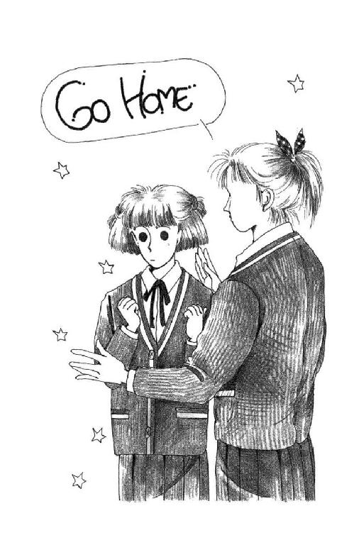

| 丘の家のミッキー８ | |
| 久美 沙織 | |
| (2016) | |
丘の家のミッキー８
ツルへの恩返しの巻
久美沙織
本作品の全部または一部を無断で複製、転載、配信、送信したり、ホームページ上に転載することを禁止します。また、本作品の内容を無断で改変、改ざん等を行うことも禁止します。
本作品購入時にご承諾いただいた規約により、有償・無償にかかわらず本作品を第三者に譲渡することはできません。
本作品を示すサムネイルなどのイメージ画像は、再ダウンロード時に予告なく変更される場合があります。
本作品は縦書きでレイアウトされています。
また、ご覧になるリーディングシステムにより、表示の差が認められることがあります。
イラスト／めるへんめーかー
さて彼等が旅を続けているうち、イエスがある村にはいられると、マルタという女が喜んで家にお迎えした。
彼女にはマリアという妹がいたが、主の足元に座って、みことばに聞き入っていた。
ところが、マルタは、いろいろともてなしのために気が落ち着かず、みもとに来て言った。
「主よ、妹が私だけにおもてなしをさせているのを、何ともお思いにならないのでしょうか。私の手伝いをするように、妹におっしゃってください」
主は答えて言われた。
「マルタ、マルタ。あなたはいろいろなことを心配して気をつかっています。
しかし、どうしても必要なことはわずかです。いや、ひとつだけですよ。マリアはその良いほうを選んだのです。彼女からそれを取り上げてはいけません」
～ルカによる福音書第十章・三十八～
プロローグ・冒険がはじまる......!?
曲がれ......曲がれ......、曲がれ......。
曲がるかなぁ。曲がってくれたらすごいんだけどな。ねぇ。曲がってちょうだいな。ほんのちょっとでいいの。なんならすぐに元に戻ってもいいから。一回だけ、ちょっと曲がってみせて。ね。
ふう。このくらいお願いすればいいかしら。どっちかというと、お願いっていうよりも、脅迫のニュアンスのほうが曲がってくれるかな。うううん、このくらい言えば、とにかくあたしの誠意は通じたかもしれないわ。ダメ押し。ねっ、ねっ、ねっ？ と。......さぁ、見るわよ。もういいかな。曲がったかな？
目を開けてみれば、お元気にも元通りなスプーンの丸い背に、１のＥ教室が歪んで映る。ため息つくあたしの顔も、カエルみたいに平たくなって。
そうよね。
そうだと思う。わかってた。
我ながら気合入ってないもの。はっきり言ってすっごくとまどってしまうわ。
だってこのスヌーピー・スプーン。幼稚園の時から使ってるのよ。お対のウッドストックちゃん柄のフォークのほうは、いつの間にかどっかになくなってしまったけれども、かれこれ十年お世話になってるお大事スプーン。そりゃ、色は剝げちゃってスヌーピーの目も一個なくなっちゃってるし、もう今はめったに使うこともないけれど、これっきりぐんにゃり曲がってくれちゃったら、ちょっと辛い。
こっそり横目で教室中見回すと、みんな、一心に励んでいるように見える。無駄話の声ひとつ聞こえないなんて。森戸南の場合ほとんど不気味だったりするくらい。ああ。こういうことでも学校でみんな一斉にさせられちゃったりすると、なんとなく、できないと『おちこぼれる』ようなイヤーな感じがしてしまう。でも、よく考えてみれば、朝のホームルームをこういうことに費やしておしまいになるなんて、先生のほうがどこか少し......なんじゃないかしら。全国でもめずらしいと思うわ。
つまりここでスプーン曲げができなかったからといって、何も不真面目ってことにはならないはずではある。ではあるけれども。つい真剣になってしまう。ああ、あたしって損な性格だわ。
あ。いけない。
ゆっくり見回ってらっしゃる岩田先生が、この列のほうに歩いてらっしゃる気配がして、あわててあたしはまた目を閉じてスプーンの柄をそっとこすりだした。
けど。もう全然集中できない。
なんでこんなことしなきゃいけないのよっ！ そりゃね、そりゃ、ひとさまの趣味をどうこう言ったりするのってほんとうに失礼だとは思うわ。思うけれども。それを生徒に押しつけるって、はっきり言って横暴よ。もちろん......もちろん、先生には、新たな生徒たちの中からお役にたてる子を選ぶって大目的がおありになるのでしょう。でも。
ちゃんと使えるスプーンを曲げちゃうなんて。もったいないじゃない。みんないったい、どんなスプーン持ってきたんだろう。お家のひとに理由話して借りてきたのかな。曲がるかどうか。実験しますって？ それ、お家のかたが本気にしてくださって、曲げちゃってもかまわないスプーンをだしてくださったりするのかしら？
例えばウチの場合、なにしろママが整理整頓大好きでしょう。余剰スプーンがないのよね。
お紅茶用コーヒー用はセットになってて欠くわけにいかないし、銀のはまたいとこの春子おねえちゃんの結婚式の記念でしょ。先が貝の形になったのはママのお気に入りだし、不思議の国のアリス模様のはあたしがねだってやっと二本買ってもらったものなんだし、パリとかロンドンのスーベニア・スプーンはさえらおばさまからのプレゼントだし、羅士丸そっくりのとこが気に入ってるワンちゃん柄のデザート・スプーンなんてお小遣いで買ってからまだ一年もたってないのよ。グレープフルーツ用のギザギザのじゃ変だし、アイスクリームのお匙だってそれは同じ。デミタス用の小さなのもかわいそうだし、ガラス細工のはへたに力こめるとポキンっていっちゃいそうだし......あえて言えば、この古いスヌーピーが最も必要でないスプーンではあるわけなんだけれども。
でもこれあたしの大事な思い出なのよ。ママにこっそり捨てられないように、必死でかばってきたスヌーピーよ。
かと言って、わざわざ曲げるためだけにスプーン買う、なんて......。
ああ。やっぱり無理よ。
曲げられない。あたし、性格的に超能力に向いてないんじゃないかしら。
「よし、やめ」
まるで、テストの終了時間でも来たみたいな声で、先生がおっしゃった。
「曲がったもの、いるか？」
ざわざわ見回すひとの真ん中で、やっぱり、毛利さんがまるで何でもなさそうにスッとお匙を掲げる。うわ、あれ、『曲がった』っていうの？ すごーい。ぐりんぐりんに捩れてるじゃない。
「他には」
...いない。ああ良かった。あたしだけじゃなかったんだわ。
「へっ。バカにしてるよ」
後ろの席で田代さんが隣の星崎さんにブツブツ言うのが聞こえた。
「あんなんできるわけねーだろーが」
「いーっていーって、つまんない話されるよりはサ、おもしろいジャン」
「でもさぁ。つまりワッペーはあーして毛利さんだけ特別だってみんなに見せておいてさ、堂堂とヒイキしたいんじゃねーのォ？」
「あんたそりゃ考えすぎ」
「っかしいなぁ。なんでできないんだ？」
岩田先生は四角い眼鏡で教室中を見回して、アカンナァと言わんばかりに首を振り、教卓の向こうにどっかりお座りになった。
「こんな初歩。できるんだぞ。特に処女なら必ず、できるはずなんだ。ちゃんと精神集中すれば......ああ、毛利。ちょっと、みんなに説明してやってくれ。どうやるか、どうなるのか」
「はい」
毛利さんは優雅に立ち上がると、隣の席のひとからまっすぐなままのスプーンを借りた。
「まず、こう......持ってみます」
あたしも持ってみた。
「ゆっくりさわっていくと、ここだと思うところがあるでしょ？」
ここだと思うところ......思うところ......そんなのないってば！
「そこに指をあてて、ただ強く念じればいいんです」
ただって言われたって。
「こすったりする必要はないけど、そのほうが集中できるのならやってもいいと思うわ......ええと。これは、ここだわね」
親指とひとさし指二本で軽くつまんだスプーンを、毛利さんはゆっくり四方にみんなの方向に回して見せた。そして、キッとスプーンを見つめたとたん。
......くた。
スプーンが萎れた。
「げ───っ！」
「なんなのォ!!」
「やーん、オカルトぉ」
クラス中が爆発したみたいに大騒ぎになった。
信じられない！ 気がついたらもう、あたし、みんなといっしょになってきゃあなんて叫んでしまっていた。でも曲がってる。ほんとに曲がってる。
「えっと......曲がる直前には、持ってる指先が、ちょっと熱くなるような感じがします。そんなとこです」
一礼して、毛利さんは座ったけど、みんなの騒ぎはちっとも鎮まらない。
「うわーん。うわーん。ウソォ」
「なんでー、なんであんなことできるのー」
「ひぇー。おっかねーよー」
「先生！ 先生、質問です」
すっ、と手をあげたのは奥山さんだ。みんな、ヒソヒソ声に静まった。
「なんだ」
「どうしてこういうのって必ずスプーンなんですか。フォークならどうですか。鉛筆でも曲げられますか」
......言うなぁ。
思わずスカッとしちゃってクスクス笑う声の中で、岩田先生もニヤッとなさった。まるで、そっちは勝手に誤解してるみたいだけど、こっちはだまそうとなんかしていないんだぜ、ってなだめるような微笑みで。
「スプーンは性格が柔らかくて、曲げやすいんだ。握力使う時だって、簡単にできるものとそうでもないものがあるだろう。同じことだよ。鉛筆を曲げられたら相当なもんだ。普通は折れる」
「そうでしょ。そこですよ」
奥山さん、食い下がる。
「普通なら折れるようなものを曲げてみせてくださいませんか」
「奥山、手品と間違ってないか？ 俺にはそんなことはできん」
言いながら、先生はかすかに顔をあげた。
「毛利できるか？」
毛利さんの長い巻き毛がちょっとななめになった。あたしのほうからだと、後ろ姿なのね。
「やってみたことがありませんが......たぶん無理でしょう」
奥山さんが下唇を突き出すようにして座りかけた時。
「あのな。俺もこの程度のことはできるがね」
先生ボソッとつぶやくと、一番前の席の山下さんを教卓に呼んで、鉛筆を渡した。
「ああ、持たなくていい。両手をこうして、指を出して......うん、ひとさし指がいいな。よしよし。そこに乗せるぞ。揺らすな」
「なんなの......？」
隣の鈴木さんが、ガチガチ爪を嚙みながらあたしを見た。あたしが、さぁ？ って顔をすると、怖そうにうなずきながらまた教卓に向き直る。
山下さんは、両手のひとさし指の上に鉛筆を乗せたまま、緊張して硬直してる。先生は手帳を出して、一ページ破って、縦半分に折った。折り目を下側に、端を持って、鉛筆のわずか数センチ上のあたりに構える。山下さんがギュッと目をつぶった。
みんな息を吞んだ。あたしは山下さんが気の毒でたまらなくなった。
先生はそうっと息を整えながら、たぶん特別の精神的な何かを高められたのだと思う。一瞬お顔が真っ赤になったと思ったら、手に持った紙切れをかすかに振り上げられた。
「坡ッ！」
声は大きかったけれど、動きはとても小さかった。十センチあったかないか。
なのに。
ころんと落ちた鉛筆を山下さんがあわてて拾って掲げると、それは、真ん中へんから、完全にふたつに分かれていた。まるで、すごく固いもので無理やり切ったかのように。
毛利さんが手を叩きはじめた。何人かが、パラパラ加わった。
チャイムが鳴って、先生は出ていってしまう。
もしもエスパーになるのなら、テレパシーがいい。
ひとの心を読んだりはしたくない。ただ、あたしの気持ちを、ちゃんと確かに伝えることができたなら、どんなにいいだろうと思うの。
例えばパパに。例えばうららに、朱海さんに。口に出して言おうとすると、自分でも何をどう説明すればいいのかよくわかんなくなっちゃってばかり。
いつも、いつだって、あたしは失敗する。悪気じゃないのに、どんどん、よくないほうへよくないほうへややこしくしちゃう。事態はいつも、のろまなあたしを待ってくれずに、どんどん通りすぎて行ってしまう。たまにアッと気がついて、素早くうまくやったつもりでいても、後からボロボロ考えの足りなかった部分が出てきて、結局ダメなのよね。まるでヨットで走ってる時みたいだ。風も波も、スキッパーの合図も、見なきゃならないことが多すぎてあたしの目や頭にはついていけない時がある。その場凌ぎにせいいっぱいで、先のことまでなんて、とてもとても手に負えない。
確かにあたしは少しおバカで鈍いのかもしれないけれども、でも、ちゃんとやりたいって気持ちだけはほんとにあるんだ。ほんとにあるけど。
ほんとにあるだけじゃ、しかたないのかなぁ。
ただの紙切れで鉛筆を切ってしまうくらいの意志の力が、もしも、あたしにあったなら。
遠い地平線の向こうの天気まで、読むことができたら。めまぐるしく変わる状況を、ひとつひとつ的確にさばいていくことができたら。単なるゴマカシじゃない作戦を、ちゃんと立てて実行することができたとしたら。
あたしはきっともっと自信持てるし。
パパだって、あたしのこと、大人だって認めてくれるはずなのに。
パパはまる二日、動けなかった。
そう、あのぎっくり腰。
温湿布も冷湿布もあててないよりはマシってくらいで、ちっとも治療にならないから、とうとう（パパには内緒で）西在家さん家のおじさまにうかがって、鍼の先生に来ていただいたの。
大西先生はまだ若い男性で、ちょっと意外だった。だって鍼のお医者さまなんて、きっとすごくすごくお年を召したおじいさんだって気がしない？
カラダにハリが刺さるところなんかとても見てられないから、具体的にどういうことをしてくださったのか、あたしは知らないんだけど。霊験あらたかってあのことよ。あんなにウンウン唸っていたのがウソみたいに、シャキッと二足歩行できるようになっちゃうんだから驚いたわ。
そしてこの先生も......。
なんかヘーンなかただったのよねえ。つまり、そこはかとなくこの世のかたではない。とりあえずこの世にはいらっしゃるけれど、実はその世界の裏側にある世界で、もっと長いこと生きてる......とでもいうようなかた。
だいたいね、初対面からして普通じゃないの。玄関に一歩入られたとたんに、深呼吸するようになさって、ニッコリして、
「ああ、いいお宅ですね。こちらでは、ずいぶん長いことずっと善意と愛情に溢れた暮らしがなされて来たのですね」
なんて。
あたしもママも、ポカーンでしょ。
はじめましても、よろしくお願いしますも、ウッカリ言いそびれちゃって。
ぼんやりしてたら、先生さっさとパパの寝てるお部屋に──案内もしなかったのに──いらっしゃって、ああ、急に動いて転んで捩られたんですね、なんて何も聞かずにすっかりわかってらっしゃるご様子なのよ。西在家さん家のおじさまから聞かれたのかな、とその時は思ったけれど。そして治療とマッサージ。一時間くらいかかったかな。
やがて出てらした先生は、すごい汗だった。
「もう、ご心配ありません。ただ、いきなり動かれませんように。もう一日くらいは、ご用の時以外は横になられていたほうがよろしいでしょう」
「はぁ。どうもありがとうございます」
ママがお茶をいれ替えに立った時、あたしはなんとなく、残ってしまったんだ。居間に、鍼の先生と向かい合わせで。おしぼりで汗を拭ってらした先生が、ふと、あたしを見て。
額に指をかざすようにして、微笑まれた。
「遠回りをするね」
とっさに、何を言われたのかわからなかった。あたしに向かって言われたのかどうかも、はじめ、はっきりわからなかったんだけど、先生はどんどん続けたの。
「でも行かなきゃいけない。そう決まってる。しんどくて、行先を見失ってしまうかもしれない。どんどん遠ざかって、けっして行き着けなくなってしまうかもしれない。でももし、ちゃんと歩き通してもう一度ここに立てば、その時は、何もかもはっきりわかるはずだ」
「......は？」
お話の途中から、ゆらゆらっと、何だか、部屋全体が揺れたような感じがして、あたしはあわてて目をパチパチさせた。
「何ですって？ 何が？」
「これ以上は言えない」
先生がゆっくり首を振った時、ママがお茶のお代わりを持って来て、それで話はおしまいになったんだけど。
後から考えても、何を言われたのかサッパリわかんない。出来る限り思い出してみた限りでは、雰囲気も内容もまるで、ファンタジー小説の冒頭で良い魔法使いが冒険の旅に出る主人公に与えたアドバイスって感じだったけども。
あたし、どこにも行かないよ。だって学校あるじゃない。どこに行けるっていうの。あの先生だって、いくらぎっくり腰治しの名人さまでいらっしゃったとしても、魔法使いじゃあないはずだと思う。
けど。
岩田先生といい。鍼の先生といい。
なんだかあたし、自分がすごーくツマンナイ生き方してるのかなぁって気も、してしまったりするのよね、このごろ。
星占いにも、書いてあったの。『しなければならないことを先に延ばさないように』って。
しなければならないことって......とってもとっても沢山あって、こんなこと言われるとほんとにすっかり肩が重たくなっちゃうけれど。しなきゃならないか。
ほんとに、はじまるのかなぁ。
冒険が。
１ ツルへの恩返し
自転車を走らせている時に考え事をするのはよくない癖だと思う。それでも目がお留守になってなければ、何か突発事があった時とっさに運転のほうに気分が戻れるけれど。この朝あたしの目はおざなりに前を向いてるだけで、ほとんど働いてなかった。森戸の通りではバスの運転手さんにブーッ！ と悲鳴をあげられ、右折する時には合図しわすれてバイクのお兄さんにキキィ！ って急ブレーキをかけさせ、それぞれ二、三秒たってから『あ、いけない』ぐらいにしか思ってなかったりしたんだから、サイクリスト失格と言われてもしかたないかもしれない。よくもまあ無事に学校についたものだわ。
そうやって急いだって──ほんといって急いだわけじゃないんだけど、どうもなんだか脚だけは頭の邪魔をせずにすごい勢いでペダル踏めるみたいなのよね。八時よりだいぶ前に学校についてしまったりして驚いたわけなんだけど──あんまり役にたたない。
１のＥも、一年のクラス前の廊下もガランとしていて、ほんの十数分後の大騒ぎがウソみたいに寂しい。さすがのサボリ目も、なんとなく落ち着かなかったみたいで、きょときょとしてしまった。
廊下にさしこむ光が窓枠で時々跡切れて縞みたいになっている中を歩くと、あたしの顔も明るくなったり暗くなったりする感じがする。教室の壁に映る大きな木の影が、そっと揺れている。
五月の葉山はとてもきれいだ。
山では新しい葉っぱがぐんぐん育っていくところだし、海はまだ荒らされてないし、街もそう。ひとが集まりはじめる前のほんのひと休みを楽しんでいるみたいに、穏やかに落ち着いている。一番いい季節なのかもしれない。去年の今頃は、あたしはまだ『よそもの』の気分を抱えててなにもかも旅行の途中で見るように見ていたけど、今年はもう、これがあたしの街なのよ、素敵でしょ？ って誇らしい気持ちがする。もう少したてば、公園のあじさいがきっと綺麗に咲きはじめるわね。あの頃はまだ、羅士丸はいなかった。ウチにも来てなかったし、もしかすると、まだ生まれてさえいなかったのかもしれない。不思議な感じ。
生まれる......この世にないものが生まれて来る。
それも、ある程度育ってかわいいかかわいくないかちゃんとわかるようになってて、その上で飼うかどうか決められるのじゃなくて。
赤ちゃんは、すぐは見ることもできないのよ。半年以上もかかってだんだん生まれて来るんだわ。
思わず手をやってみたら、なんだか朝御飯のせいでちょっとお腹が出てて、ドキッとした。あわてて腹筋でひっこめたけど、ちょっと油断するとすぐ戻る。
ヤだわ。もちろん、あたしは赤ちゃんなんてできないけど......。
桐村さんは、どんな気持ちだったんだろう。
聞いてみたい。
だって、そりゃ、ママにだってあたしを産む時どんな気持ちだったかって聞くことはできるよ。だけど、ママはちゃんと大人になってちゃんと結婚してみんなに祝福されてからあたしを産んでくれたんだもん。そうなるまでには、あたしには、まだまだ長い長い時間がかかる。もしかして......万が一、あんまりみんなに賛成してもらえない状況でそういうことになっちゃわないとは限らないじゃない。あたしだって。
だってあと、何年ある？ 高校卒業するまでだってほぼ三年。あたし大学に行くつもりだしパパもママも行かせるつもりだから、合計すれば七年。少なくとも、今後七年間のあたしの計画の中に、お嫁に行くとか赤ちゃんとかってことを混ぜると、いささか波瀾じゃない。
だけどさ。
ここで問題は、もうひとつの問題と交差するのよね。
最近のパパを見てると、ムラムラーッと反抗心わいてしまうんだもん。あたしだって、あたしだって、あと一年弱したら、法律的にお嫁に行ける子なのよ。ちゃんとアンネだってあるんだもん、赤ちゃん産まれたって不思議はないでしょ。ぐ、ぐ、具体的な方法は、とてもじゃないけど正気ではできないコトのようだからあんまり考えたくないけど。とりあえず、生物学的には準備できてるんだっ。つまり、少なくとも、大好きって思うひとが出来たっていい年頃になってるはずじゃない？ なのに『いかんいかんいかん！』なんてさ、『逢ってもダメ、ヨットもダメ』なんて。まるであたしがパパの都合に合わせるのがあたりまえみたいな、言いなりにならなきゃ許さないみたいなこと言われると、頭来ちゃう！
もし、パパがいつまでもあたしのこと縛りつけるんなら、あたし反発のあまり、さっさと波瀾しちゃうかもしれないわっ。
だって、パパと暮らすのはいくつまでだかわかんないけど、お嫁に行ったら一生よ。そうじゃないひともいるけど。ともかく、希望的観測としては一生でしょ。好きなひとといっしょに過ごす時間は長いほうがいい。だったら、お嫁に行くのは早いほうがいいじゃない。簡単な算数だわ。
とすると、桐村さんの事例って、ほんとに、他人事じゃないかもしれないんだわ。
とかなんとかあれこれ考えてるうちに、深刻な好奇心（？）が募ってきちゃったのよね。
あのおっかなそうで無口なひとを説得して、学校に出て来てくれるようにできるかどうか、ちゃんとテスト受けるようになってもらえるかどうかは、この際二の次みたいになってしまって。だいたい、もしもあたしが桐村さんの気持ち、ちゃんとわかってあげることができたら、じゃあこれからどうすればいいかだって、ほんとに親身になって考えてあげられるかもしれないじゃない？
正反対のこと言ってあたしをこんがらがらせてるツル先生の命令とうららの警告の、どっちに従うかって言ったら、だから、とりあえずツル先生側のほうになっちゃう。うらら怒るかなぁ。でも、あの子が心配してるのは、あたしが桐村さんたちの生活信条に変に影響されちゃうってことなんだから、あたしがちゃんとしてて、影響されなければ裏切ることにはならない......はずよね？
鞄を置いても、教室は静かなまま。知ってるひとは全然来ない。
誰か来てくれたって、こんなこと気軽にしゃべったりできないし......。
そうだわ。
このチャンスに岩田先生に相談してみよう！
朝の職員会議は終わってて、先生は幸いおひとりで机で何か読んでらした。
「おはようございます」
あたしは言った。
「やあ、おはよう。早いね。何か？」
「桐村さんのことなんですけど」
先生は眼鏡の向こうでニヤッとしながら、椅子を回した。
「正義の天使、浅葉未来。なんでも落合の席に座ってる桐村を追い出したって？」
「それは......」
「ああ、わかってるわかってる。責めようと思って言ったんじゃないから、落ち着きなさい。ただ、教室で起こったことは一応は把握してると自慢したかったんだ」
うなずいたけど、やっぱりこの先生って、どうも油断ならない。
「それで？」
「それでって......。だから、どうするんですか？ どうしたらいいでしょう？ ただ待っていていいんでしょうか。登校するように、勧めに行ってはいけないでしょうか。あのう、その席の件、あたしが悪かったって謝りに行ってもいいんです。それがきっかけになるのなら。先生がどうなさるおつもりでいらっしゃるのかと思いまして......」
「そうだなぁ」
机の上のブックスタンドで押さえた本の上に、例の超能力開発装置（註１）の銀のふりこが乗っていた。先生が何気なく銀の玉の一番端のをチョンとはじくと、ふりこが揺れて、カッチンカッチンと鳴った。一個が全部にぶつかると、反対側の一個だけが弾き出されて離れて。また戻って、また離れて。両端の二個だけが、いつまでも揺れている。
なんとなくぼんやり見てしまっていたら、先生がおっしゃった。
「本人が来たくないんなら来なくたっていいんじゃないかと思うんだがね、私は。彼女にはもう高校の授業は必要ないかもしれないでしょう」
じゃあ......やっぱり、先生は、何もしないつもりだったんだわ。
そんなのひどいじゃない！
「そんな馬鹿な。だって、一度は来るつもりだったはずじゃないですか。『おいでよ』って、誘ってあげてもいいじゃありませんか。だって、授業料だって払ってあるでしょ。まったく何もしてあげないうちに放り出したりするのって、ひどいと思います!!」
「何もしてなくはない」
カッチン、カッチン、カッチン。
「翌朝も来なかったんで、電話してみたんだよ、自宅に。不在だったがね。お母さんが出て、どこに行ったかはわからない、いつ帰って来るかもわからないと言ってらした。そばで赤ん坊の泣き声がしていた。あれはオムツが濡れてる声じゃないかな」
赤ちゃんがいた？ 赤ちゃんを、お母さんに預けて......？
学校サボッて遊びに行っちゃってるのォ!?
「なんできみがガッカリするんだ？」
「はぁ......いえ、ちょっと」
「うん。不良という言い方は好きじゃないが、他に何と言えばいいのかよくわからんから使わせてもらうよ。彼女はつまり、不良だ。無軌道にも不誠実にも見える。だがそれは見方の問題でしかない。彼女には彼女の考えがあるんだろう。もしかすると、何も考えないっていう考えかたかもしれないけれど。彼女自身を尊重するなら、直接迷惑かけられでもしない限り、まわりが責めたりガッカリしたりして干渉しちゃイカンのじゃないかと思うんだがな、私は。まぁ、戻って来たら登校するように言ってみてくれとは言ったが、お母さんの返事ははかばかしくはなかった。無理ない。もうたっぷり言い争って、疲れてらっしゃるんだろう。彼女が自分から変わろうと思わない限り、何を言ってもムダだよ。違うか？」
「......あたしは......あたしはまだ疲れてません！」
ほお？ っていうように先生の目がキラッとした。
「先生のおっしゃることはわかります。あたしだって、父にそっちの都合で勝手なこと言われるとカッとします。ほうっておいてほしいって思うこともあります。だけど、手に負えないからって無視されたらもっとイヤだと思います」
「......むう」
「それにあたし、話してみたいんです。あのひとと」
カチカチがいつの間にか止まってた。
「あたしいつも思うんです。父に頭ごなしに叱られる時。なんであたしがどういう気持ちでいるのか、ちゃんと聞いてくれないんだろうって。心配する心配するっていいながら、見当はずれのこと心配されてるのがほとんどいつものパターンなんだもの。もし、登校しなさいとか、真面目になりなさいとか、こっちの意見を押しつける目的で行ったとしたら、桐村さんも怒っちゃうかもしれないけど、まずあのひとがどういう気持ちでいるのか聞いてみるんならば、ひょっとして......」
たとえ『不良』でも、考えかたが違っていても、同じ日本語を話す同士、同じ学校の生徒同士じゃない。違う世界に生きてる同士が苦労してわかりあえたら、いつでもなんでも以心伝心なのよりずっと『経験』になる。よく似た境遇、すぐ好きになれる子ばかり集まってる華雅学園。あたしにはまるで信じられないようなひとたちばかりいる森戸南女学館。どっちを選んだほうがいいか、あたしは迷って迷って、決めたんだもの。
「桐村さんのためじゃないんです。あたし、自分のために、聞いてみたいんです」
「......なるほど」
先生はもうニヤニヤしてなかった。その代わり、やたらむずかしい顔になってしまった。
「だが、いったい何を聞くんだ。しゃべるかな。私はまだ桐村がしゃべったのを見たことがないぞ」
......うわぁ。あたしもないや。
「そうですね。そこは問題だと思います」
「よし......わかった。とりあえず、行ってみるか」
「ほんとですか!?」
「ああ。放課後、行くか」
「はい！」
「本人が捕まるかな」
放課後、岩田先生の車に乗り込んだのは四人だった。
先生と、あたしと、双子の毛利さん姉妹。うちのクラスのひとのほうがしずかさんで、よその組のほうがみづきさんなはずなんだけど......なにしろ制服だし髪形が同じだし顔はまるきりそっくりだから、ちっとも見分けがつかない。ラッキーなことに、ふたりが履いてる靴が違った。しずか、って呼ばれたほうが茶色のパチン止めつきの革靴で、みづきさんは黒いローファーなの。だから今は助手席にいるほうがしずかさんだってわかるけど......もし、どこかのお宅にあがりこんじゃったら、やっぱりまた見分けがつかなくなっちゃうかもなぁ。
「もっとか」
と、先生。
「まだまだです。このまま当分まっすぐですね」
しずかさんが、道路マップを見ながら答えた。どうもしずかさんっていうのは、先生の秘書みたいな役目をしてるみたい。最初に桐村さんのことを『松林学園からの編入で、これが四度めの高校一年です』とかなんとか指摘した感じも、そうだったし。
「遠いな。この距離じゃ、不登校も無理ないな」
先生はジョークっぽくおっしゃったけど、双子はクスッとも笑わなかった。
でも、ほんと。さっきチラッとしずかさんが指さしてるあたりをのぞいてみたら、桐村さんのお家から一番近そうな駅って、川崎か、東急東横線の『もとすみよし』とかってところなのよ。ええと、森戸から逗子駅までバスだとして、逗子から横浜に出て乗り換えるか......川崎からもバスがあるかな？ とにかく、乗り換えが大変。うまく連絡してないとすると、きっとすごく時間がかかるわ。ただ登校するだけでもひどく面倒っぽいってことは確かね。
あたしだったら絶対に無理。
もう少し自宅に近い学校にすればいいのに......ああそうか。クビになっちゃったんだって、ツル先生言ってらしたわね。
新幹線の線路の下を潜って、しずかさんの言うとおりにコチャコチャした角を曲がってみたら、たちまち工場の真ん中に出てしまった。これにちょっと似た風景って、確かディズニーランドに行った帰りに通ったな。湾岸道路っていうの？ ずーっとずーっと工場ばっかり続いてた。でもあそこはここよりもっと道広かったし、工場も大きかったみたい。もっと『工業国日本の偉容』って感じがした。ここはなんていうか......ちょっと怖い。走ってる車もトラックが多くなって、ビルと、トラックと、二重の谷間の中を潜りぬけてるみたいな感じ。ジェット・コースターに乗ってる時みたいな、ハラハラヒヤヒヤ落ち着かない感じがする。ディズニーランドを思い出したのも無理ないのかもしれない。
先生も、ずっと片手で握ってたハンドル、いつの間にかしっかり両手で持ち直してらっしゃる。一日中、もしかしたら一年中日が差さないかもしれないみたいな路地を、狭いなぁとブツブツおっしゃりながらくるくる回った。
「そろそろですね。あとは、地図に載っていないのでよくわかりませんが。番地からするとこのへんだと思います」
「オーライ。どっかで車停めなきゃな。置けるところがあったら、あとは歩こう」
小さなビルがたくさん並んだ一方通行の途中で、路上駐車の隙間を見つけて、先生は車を停めた。車はそんなに多くなかったけど、ビュン！ ビュン！ って飛ばして通るから、ドアを開けるのが怖かった。
「三丁目十八、か」
車の隙を縫って先生がロックし終わる頃には、素早く左から出ていたしずかさんたちふたり、手近なビルに入って道を聞いてきたらしい。
「こちらです。二、三分のようです」
そのへんには、ビルもあるけど、木もあった。歩道には枯れたみたいに見える鉢植えがいくつか並べてあるし、お商売しているんだかいないんだか定かでないようなお店の奥に、四方を隣のビルに囲まれた庭の木々が覗いてる。車の通る音以外は、やけに静かだった。自転車で歩道をやって来るおじいさんのかっこうとか、塀の上に突き出た火の見やぐらみたいなものとか、お菓子屋さんのショウ・ケースの上のガラスの壜とかが風景の中に散らばっていて、あたしには何十年か前の街みたいに見えた。
ひとつ折れると、車はいなくなった。住宅街だ。道はすごく狭くなって、くねくね曲がっていた。
しずかさんが立ち止まった時、あたしたちは、広いお庭のあるお家の前に立っていた。でもそこって、すごく暗かったの。日差しはそこそこに当たっていたし、御門はいっぱいに開いていたんだけど、建物の古さと庭の何年もほったらかしにしたような感じがまるで白黒映画の中の風景みたい。足元のひびの入ったコンクリートは確かに乾いていたけれど、あたりの空気がなんとなく、地下室みたいにひんやり湿っていた。
もしも鍼の大西先生がここに来たら、何ていうだろうな、なんてあたしは思った。
「ここですね」
しずかさんが重苦しくつぶやいた。
「よし。行こう」
先生が先にたって、玄関に進んだ。お玄関が開けっぱなしなんて変だと思ったら、ここは普通のお家じゃなかったの。ずいぶん大きなお家だと思ったら、アパートだったのね。
はじめて見た。お玄関がひとつで、靴箱にいろんなひとの名前が並んでいるのって。小説や映画の中で見たことがあったから、アパートだってわかったけど。
「きりむら......きりむら......」
ないなあと思いながら指で探すと、
「大志田さん。二〇六ね」
双子のどっちかが背中から小声で教えてくれた。
そうか。桐村さんって、お嫁に行った先の名前だった。
でも。ほんと、ついつい小さな声でしか話しちゃいけないみたいな気分になるわ。
湿った匂いは、たぶんこの建物の匂いだったんだろう。靴を脱いで木のフローリング（？ って言うのかなぁ......）の上がり框に立つと、靴下の裏が懐かしいくらいひんやりした。先生が階段を上りはじめると、板がうぐいす張りみたいにキィキィ鳴った。最後になるのが怖いような気がして、あわてて追いかけた。
二階の廊下は、病院に似てたわ。片方の壁にたくさんドアが並んでるからだけじゃなくて、そのシーンとした雰囲気が、なんとなく、普通に元気に生きて動いている気配をまるで見せないんだもの。どこかで猫が鳴いてる。どこからか、少し、ニンニクかニラみたいな匂いがする。
二〇六、って小さなプレートの出たドアの前で、先生は立ち止まった。すぐそばに立ってみたら、中で何かひとの声がしてるのがわかった。じゃあ、お留守じゃないんだ。先生はくるっと、まるであたしたちがちゃんとついて来てるかどうか確かめるみたいに見回しておいて、ノックした。
「ごめんください」
「......はーい？」
「森戸南女学館の岩田といいますが」
ドアが開いた。ほんの少しだけ。女のひとらしい顔が、五センチ幅で覗いた。
「岩田さん？」
「奈由里さんの担任です」
先生がつけ足した。
「どうぞ」
先生がなにげなくひっぱったら、ドーンとすごい勢いでドアが開いた。ぶつからないように、あわてて避けなきゃならなかった。ドアはぺこぺこのベニヤみたいなので出来てたから、すごく軽かったのね。
「ど、どうも......」
びっくりしちゃった先生に向かって、女の子は少しだけ笑った。
「姉はいません。おかあさんも」
女の子だった。中学生くらいかな。背の大きめな小学生かもしれない。真っ赤なトレーナーの胸に、お人形のブローチをつけてる。短めのチェックの巻きスカートに、ふくらはぎまでの靴下。ちゃんと決まったアイビーっぽいかっこうだったけど、なんとなく誰かのお下がりみたいな感じがした。
「どうぞ」
女の子はお座布団を並べはじめて、あたしたちが四人もいるのに気がついてへにゃっと笑った。すごく恥ずかしそうで、でもすごく素直なかわいい笑顔だった。
「すみません、ちょっと足りないので。そのへんに座ってください。お茶いれます」
「ああ、どうぞおかまいなく」
先生は言ったけど、女の子は立った。
四人が座ったら、いっぱいだった。すぐそこが流しで、この部屋と流し場と、開いている襖の向こうに見えるお仏壇のある小さなお部屋と、それが全部みたいだった。狭い中に、なんとかかんとか、いろんな家財道具が詰め込んである。
見回して、気がついたんだ。テレビがついていて、さっきの話し声はそれかなと思ったんだけど、お仏壇の部屋との間の襖のとこに置いてある簞笥に、男のひとがひとり寄っかかってる。淡い水色のＴシャツにＧパン、靴下は履いてない。三角座りするようにした両足の膝のところに肘をかけて、頭を腕の間にうつ伏せているから顔まではわかんない。
うわ、あの子。男のひととふたりでいたんだ。
なんだか、悪いことしてるところを見てしまったみたいな気がしてドキドキして来たけど、あたしはすぐ反省した。だって、家族とか親戚のおにいさんかもしれないもの。なんでも変な風に勘繰るのはいやらしいわ。でも、お客さんが来たっていうのに、このひと、なんで下向いてご挨拶もなさらないの？ 変ね。
......と思ったら、目があっちゃった。そのひとが、顔をあげたんだ。
不良の顔っていうのがあるとしたら、それは間違いなくそうだった。髪形も服装も普通だけど、目が。半分閉じた目蓋の下から、鋭く睨むような目付き。その目さえなければ、すごくハンサムなのにってことに思いあたるまでしばらくかかるくらい強烈な目。
「ごめん、洋太郎さん、ちょっと待ってね」
振り返ると、あの子が先生の脇に膝をつくところだった。お茶筒とお急須と、ひとつひとつバラバラなお湯吞がお盆に乗ってる。卓袱台の上にお盆を置いて、またすぐ立った。
「今、お湯がわきますから」
先生と双子は黙ってお辞儀なんかしてる。まだ若いのに、あんまりお金持ちじゃなさそうなのに、この子すごくちゃんとしてるなと思って、あたしはなんだか感動しそうになってしまって、あわてて座り直した。男のひとのほうに横顔を向けるように。
「どういうご用でしょう......って、ふふ。ほんとはわかってるんですけど」
ヤカンをのぞいて、まだだったらしくて、女の子はこっちに向き直った。覚悟を決めたみたいな顔だった。
両手を背中に回して、コンロ台に寄っかかるようにして、女の子は言った。
「おねえ......姉はたぶん、ともだちのところに行ってるんですよ。金曜日にちょっと顔出してから戻ってないから、もうそろそろ戻って来るかもしれない」
「おともだちと言うと」
先生が聞いた。
「仲間。前の学校の時の。今も高校生してるひとは、少ないけど」
「溜り場か。どこにあるか、知ってますか」
女の子はちょっと顔をしかめて首を振ったけど、あ、そうだと言うように男のひとを見た。
「ひょっとして洋太郎さんは知ってる？」
男のひとは今は両腕を頭の上にあげていた。何か言おうとして口を開けた拍子にそのままふわあっと欠伸をしたのは、いかにも傲岸だったけど、すぐ目をぱちくりさせたのが妙にかわいらしかった。
「彼は？」
先生が尋ねた。
「義兄弟です」
ようやく沸いたヤカンのお湯をポットに移しながら、女の子は悪戯っぽく笑った。
「姉の、旦那さまの、弟」
そうだったのか。
「姉からは『おとうと』だけど、あたしからは何て言えばいいのかしら。トシからすれば、文句なしに『あに』になるよね。おにいさん？」
「チー」
男のひとが短く言った。まるで、余計なことはしゃべらなくていい、ってみたいに。女の子は黙ったけど、ペロッと舌をだした。
「すみません。あなたのお名前がわからない」
お茶をもらう時に、先生が言った。
「千佳恵です。千に、にんべんに土ふたつに、恵み。おかあさん、凝った名前が好きなんだ」
「ごきょうだいはふたりですか？」
「そう。義理の兄弟を別にすれば、姉とあたしだけ」
「年の離れた姉妹ですね」
「六つ違う。離れてるかな？ それにしても、このトシでオバサンにされちゃうほどは、離れてないはずだけど」
「そうだ。奈由里さんの子は」
「慎吾ちゃん？ そこよ」
千佳恵ちゃんは、仏壇のお部屋を指差した。言われて見れば、こっちがわの襖の陰にベビー・ベッドらしいものの枠が見えた。
「ママは、赤ちゃんを置いておでかけですか......」
先生がつぶやいたけど、千佳恵ちゃんはちょうどポットを持って来るところで、とっさにどんな顔をしたかわからなかった。
「しようがないんじゃない？」
次に顔をあげた時には、桐村さんより六つ下（つまり、あたしからすれば三つ下になるのかな？）の子にしてはすごくませた表情で、言ってみせた。
「あたしだって、小さい時おねえちゃんにさんざん面倒見てもらったから。恩返しかも」
「おかあさんが働いてらっしゃった」
「そうよ。今もね。うちは最初から母子家庭よ。おねえちゃんのお父さんも、あたしのお父さんも、他に奥さんのいるひとだから」
あたしはずいぶん長いことポカンと口開けちゃってたんじゃないかと思う。先生も毛利さんたちも、別にどうってことないって顔で聞いてて、ひょっとしたら前もって知ってたのかもしれないなと思えたけど。
そんなこと、そんなに簡単になんでもなさそうに言っちゃうなんて......。
「でも、ちかこさんだって学校があるでしょ？」
双子のどっちかが口を挟んだ。
「ちかえ。大丈夫。おかあさ......母は今、ほとんど夜勤か準夜勤にしてもらってるからさ。あたしが早く帰れない時は、二〇三号室のおばあちゃんに見ててもらうの」
「おかあさまは、看護婦さんなのね」
「そう」
看護婦さん？
お茶を配られて、あたしはあわてて口を閉めた。
他に奥さんのいるひととナントカっていうし、夜のお勤めなんて言うから、あたしはまた、もっとあのう......そういうお仕事かと思ったのに。
看護婦さん。
どうしてそんな立派なお仕事してるひとが、そんな悲しい身の上に......！
うっ。
「みなさん、クラスのかた？」
千佳恵ちゃんに見られて、あたしはあわてて目をパチパチさせてごまかした。
「そうです。あたし、浅葉といいます。おねえさんとひとことだけ、お話したことがあるんだけど......まさかそれが」
二度と学校に来てくれない原因になってるとは思いたくなくて。
言い掛けたのに。
「毛利しずかです」
「みづきです。わたしはクラスは違います」
双子が言うのに負けちゃって、あわてて黙った。今のうちに、こっそり目こすっておこう。
千佳恵ちゃんは、ふうん、とうなずいた。
「それで、なんですか？ どうして家に来たの？」
「............」
こちらの四人は、みんななんとなく顔を見合わせた。
「奈由里ちゃんまたクビになるの？」
「いや」
先生が短く頭を振った。
「そうじゃない。ただ、ともかくもう少し出てきてくれないことには、いずれそうなるのは間違いないな」
「そう言えばいいの？ 伝えてもいいけど、姉がどう思うかは知りませんよ」
「あのう、あたし......」
口を開いたとたん、千佳恵ちゃんにまっすぐ見られて、思わずビクッとしてしまった。でも、言わなきゃ。ちゃんと、言わなきゃ。
「あたし、おねえさんと、話したいんです」
どうにかこうにか、あたしは言った。やっと言い終わったところで、せいいっぱい笑い顔をしてみせた。
「なんで？ ああ、何か、貸しでもあるのね」
そんな。
ぶんぶん首振ると、一直線にこっちを向いていた千佳恵ちゃんの目がほろっと綻びた。
「ひょっとして、心配してくれてるの？ 奈由里ちゃんのこと」
「単純にそういうわけでも......」
どう説明していいかわかんなくて、口ごもってると、千佳恵ちゃんは、わかったわ、と言うようにぱちっと目をつぶって見せた。
「うまく話せるかどうかわかんないけど、あなたのことは、出来る限りうまく言っておくわ」
「やめたほうがいい」
急に、これまでしなかった声がして、みんな男のひとのほうを見た。
腕に半分顔を埋めるようにしてるから例のギラギラした目ばっかりがめだって、思わず反射的に後ずさりしてしまったら、脚の指がそこらの何かにひどくぶつかったの。ウェーン、痛い！ 血豆になってるかもしれない。
「おせっかいは。へたに手出しすると、無理に黙らされるぜ」
腕でくぐもった声。ぶつかった足の先がジンジンしてくるのといっしょになって、思わず鳥肌がたってしまったわ。
「それは脅しかね」
先生が言うと、彼は腕をどけて、ヘッと笑った。
「なんで俺があんたらを脅さなきゃなんないわけ？」
「きみは、何をしに来ているんだ？ ここに」
先生、のんびりした顔で言うのよ。そんなこと関係ないじゃない。そんなこと聞いたら、プライバシーの侵害だってこのひと怒っちゃうかもしれないのに！ あたしはもうほとんど逃げる心の準備をしていたんだけど。
彼がムッとした顔で口を開くより早く、先生、つけ加えた。
「桐村家と大志田家は、赤ちゃんをめぐってモメていると聞いたんだが。まさかきみは、この千佳恵さんに何か乱暴をしに来てるんじゃないだろうね。そうだとしたら、ほうっておくわけにはいかんが」
「そんな」
「バカな」
千佳恵ちゃんと彼の声が重なった。千佳恵ちゃんは黙った。
「うちのババァがどうだろうと、俺までいっしょにしてもらいたくないね」
「そうなのかね？」
先生が顔を向けると、千佳恵ちゃんはごくっとうなずいた。
「じゃあ、何をしに来ているんだ」
クワッ、と口を開けたまま、彼は黙った。
「洋太郎さんは」
洋太郎さんとやらの顔色をうかがいながら、千佳恵ちゃんが早口に言った。
「洋太郎さんは心配いりません。うちのことを心配して、お金を、お金を......持って来てくれただけなの」
「チー！」
彼が真っ赤になって怒鳴った時には、もう言い終わっていた。
「養育費か」
「はい。......あ、いえ」
「どっちなの？」
「桐村のおじさんおばさんからじゃなくて、洋太郎さんのアルバイトから......」
「チー!!」
「じゃあ、きみは、彼を頼りにしているんだね？」
彼がすごい勢いで立ち上がったのも気にしてない口調で先生が言うと、千佳恵ちゃんは、はい、と答えた。少し、はにかんだように、ほとんど声にならない声で。
「帰る」
洋太郎さんがズカズカ歩いて来て、あたしたちはあわてたけど、避けようもない。邪魔したくないのに、座ったまま邪魔になってしまった。
さすがの洋太郎さんも、女の子の肩をまたいで通るほどひどいひとじゃなかったと見えて、立ち止まってしまった。握ったり開いたりしてる拳骨が、ああ、マリアさま。あたしの目のほんのすぐ先にあるのよ。
「帰ることはない。私たちが帰るから、もう少しこの子のそばにいてやってください」
先生がのっそり立ち上がったので、毛利姉妹も続いた。あたしも、必死で拳骨から目をそらしながら立ち上がった。足が痺れてて、毛利ツインの片方に思わずつかまってしまった。
「どうもすみません......」
千佳恵ちゃんが、先生に言いながら立ち上がった。全員立つと、部屋は狭いなんてもんじゃなくて、ほとんどエレベーターの中みたい。その途端、ただならない気配がしたのか、赤ちゃんがワーン、って泣き出した。千佳恵ちゃんがあわててみんなを搔き分けてった。
「あー。ごめんごめん。びっくりしたね」
泣き声が小さくなって、納まった。襖の間から、赤ちゃんを抱っこした千佳恵ちゃんが戻って来た。
「慎吾です」
......うわぁ！
得意そうに言うのも、無理ない。
こんなかわいい赤ちゃん、見たことないわ。目がくりくりしてて、髪の毛がパヤパヤで。さっきあんなに火がついたように泣き出したばっかりだっていうのに、もうすっかりご機嫌さんなの。全然ひと見知りしない。
「アーアー」
と、慎吾ちゃんがご挨拶をした。片手を振りながら、真っ赤なプクプクの頰っぺに笑窪を浮かべて。
「かっ、かわいー」
思わずつぶやくと、千佳恵ちゃんは満足そうにニッコリした。
「わー。慎吾ちゃんかわいいって。良かったねー」
「ッア──ルルル」
慎吾ちゃんは、千佳恵ちゃんの鼻をつつきながら、やっぱり満足そうに舌と喉を鳴らした。
「オムツじゃないのか？」
洋太郎さんが近づいた。
「うううん、さっき替えたばっかり。お腹もいっぱいだし。ねー、慎吾ちゃん」
「ッアーアー。ダア」
そうやってると、彼と彼女と赤ちゃんが、まるでほんとうの親子みたいに見えて、なんだか羨ましかった。ちょっと若すぎるけど、こんなにかわいい赤ちゃんで、こんなにみんな幸せそうなら、それでもちっともおかしくないって思えたけど......よく考えてみれば、この三人はまるきり全然ご夫婦でも親子でもないんだわ。
「失礼します」
先生がもう一度念を押すように声をかけた。
「あ、そうですか？」
「おねえさんに、よろしく。とりあえず、私に電話してくれないかと」
「はぁ。言ってはみますけど」
「行こう」
うながされて、あたしはあわてて出ようとした。でも、かわいい慎吾ちゃんをもっと見たくて振り返ったら、りんごの頰っぺを千佳恵ちゃんの頰にぶつけながら、大きな目がキョトンとこっちを見てたの。
思わずバイバイ、って手を振ったら、慎吾ちゃんも手を振ってくれた。
うわぁん、かわいい！ おみやげにほしい！
階段を下りながらも、お玄関で靴を履きながらも、あたし何度も振り返ったけれど、誰もお見送りしてくれなかった。ちょっとガッカリした。慎吾ちゃん、もっと早くから見てればよかった。
あれじゃ、旦那さまのご実家でもほしいって言っちゃうよなぁ。
あたしだってほしい。
赤ちゃんが喜ぶもの何か持って行って、遊んであげたい。何カ月かな。もう少しはお話するみたいだし、ひとつくらいかな。歩けるのかな。まだおっぱい飲んでるのかしら。あのくらいなら、たぶんガラガラか、嚙んでも平気なぬいぐるみならピッタリ......。
そんなこと考えながら、何か話してる先生たちの後をついて行ったんだけど。
ああ。
あたしって、どうしてこうなんだろう。桐村さんを落第させないようにってツルさんに言われた責任感から、若くして結婚＆出産なさった体験者としてのお話を聞かせていただきたいって個人的な興味へ、そして今度は赤ちゃんへ！ 目的意識、どんどん低下するみたい。不真面目だなぁ。
気がついたら、もうあたりはけっこう暗かった。車のあたりまで戻るまでの間にも、ぐんぐん日が暮れてくのがわかった。
しまった。お夕飯に遅れるって、ママに電話しなきゃ！
「......さて、と」
運転席について、シートベルトをしめてから、先生は言った。
「とりあえずはあんなもんだろう。浅葉、どうする？」
「はぁ」
しようがないから......とりあえず連絡を待って......もしかして、慎吾ちゃんに逢いに行ってるうちにヒョッコリ逢えないかな。そんな感じだとけっこううまくおともだちになれそうな気もする。自分の子供かわいいってほめられて腹立つひとっていないもんね。でもここまで電車とかバスとか乗り継いで来るとしたら、けっこう大変よね。どれだけ通えるかしら？ ああ、でも、そうだわ。より真剣に桐村さんの更生を考えるとしたら、まずその、昔の仲間のひとたちといっしょにいるっていう場所を探して、訪ねていくべきなんじゃないかしら。でも。なんかそれって、たぶんちょっと怖そう。
「何むずかしく考えこんでるんだ？ 毛利の家は知ってるが。浅葉はどのへんだ？」
あ？ あれ？
そのことか。
「あたし、学校に自転車を置いて来ちゃったんですけど」
「自転車通学の範囲なわけだ。なら送ろう。明日はバス登校しなさい」
「はぁ。ありがとうございます」
ママに電話。
お腹の底でピカッと注意信号。
そうだ。ママに電話しなきゃ。
と思ったとたんに、車走りだしちゃったんだよね。
クスン。いいわ。先生に送っていただいたら、ママだって叱らないだろう。でも、心配するかな。黙って遅くなったら。交通事故にでもあったかなって思うかな。
事故なんて、そう簡単にあるわけないのに。どうして心配するんだろう。娘が何日もどこだかわからない場所に泊まりに行ってて、帰ってこないお家だってあるのに。どうしてうちは、そうじゃないんだろう。もしそうだったら、きっとずいぶん楽じゃないかしら。いちいち、十円玉持ってるかとか、テレホンカード使える電話ないかとか、気をつかわなくていいんだもの。先生に、電話ボックスの近くで車停めてくださいなんてワガママを言うべきか言わざるべきかなんて、迷わなくていいんだもの。
......でも......。
うちのママはそういうママなんだから。
「先生、すみません。ほんとにすみませんが」
あたしシートのヘッドレストにつかまって、先生の耳元に顔を近づけてしまった。
「ん？ なんだ？」
「家に電話したいんです。思ったより遅くなってしまったので。どこか、停められるところでけっこうですから、おろしていただけませんか」
「オーライ」
隣の毛利さん（茶色い靴だから、うちのクラスの毛利さんのほうだ）がチラッとこっちを見た。面倒な子ね！ ってなんとなく軽蔑っぽい目だったような気がした。高校生になってまでずいぶん甘ったれね、って思われたような。
ちょっとムッとして、なんならそこから、なんとか自力で帰ってもいいわよっ、て思ったけど、すぐ、それは逆にすごくおとな気ないなって思った。
あたしも、桐村さんも、どういう家の子に生まれるか、選べなかったことは同じだ。
２ 犯罪者の資質
先生に送っていただいた効果は絶大だった。
いつもより少し早目にお帰りになっていたパパのお夕飯さえ終わっちゃった頃にやっと家にたどりついたのに、パパ、叱らなかったもの。
お魚のフライをママが温めなおしてくれる横で、あたしが自分の御飯とお味噌汁をよそってると、パパが後ろを通った。あくまで黙ったままスタスタお風呂に入りにいってしまった。どうも、あたしとあんまり顔をあわせたくないみたい。
それがもし、今日のあたしの不品行を怒ってるんじゃなく、あの暴言──『二度と逢うんじゃない』ってあれよ──を、反省して後悔してくださってるってことだとしたなら、あたしパパを見直しちゃうんだけどなぁ。たとえ後悔してくださってるとしても、お腰の痛さとショックで思わず言ってしまったことについての後悔であって、内容はあくまで本心であるとかなんとか、言いかねないからな、パパの場合。
どうせ本心なんだろうけど。だからって、言っていいとは限らないわよ。しかも命令口調でなんか。ああ、なんでわかってくれないのかなぁ。あんなのまるで損じゃない。パパにとっても。スマンあれは言い過ぎだった、パパはおまえを信じてるからなって言ってくださったほうがずーっとこたえるわ。泣いちゃうわ。子供の時みたいに、パパの頰っぺにかじりついてキスして、ゴメンネゴメンネ心配かけてって素直に謝っちゃうのになぁ。
気が重い。いつもは、学校であったことや外であったことを、御飯の後のお茶を飲みながらママに、いればパパにも、聞いてもらうんだけど。今日のことって、どこから話せばいいの？ まず桐村さんのことを説明しなきゃならないけれど。
『今度のクラスに、結婚して赤ちゃん産んで、旦那さまがなくなって、四回めの高校一年をしているひとがいてね』
ママ卒倒しちゃうよ。パパになんて、聞かせられるわけがないわ。
ふう。
「いただきまーす」
「はい」
ウッ。ママ、向かいに座っちゃった。ニコニコ見てる、あたしのこと。
ひとりで食べるのじゃあ寂しいけど、見守っててくださるのは嬉しいけど、これはやっぱり、『こんなに遅くなったのは、どうしてなの。聞かせてほしいわ』って、そういうニコニコだよなぁ。
「ごめんね」
とりあえずそう言うと、ママは、なんにも気になんかしてないわよ、って顔で首を振る。
ああ。
やっぱりほんとうのことを言ってショックを与えるのはやめよう。お豆腐のお味噌汁をひと口すすって、あたしは顔をあげた。
「あのね。クラスに、不登校のひとがいてね」
「あらあら」
ママはたちまち真面目な表情に戻った。その素早さが、いかにも、何があったのか話すのを待ってるって感じで、思わず喉がグッと詰まったけど。
「そのひと、外部から来たひとなのね。だから、先生が、転校生だったあたしなら話が通じるかもしれないって思って、いっしょに彼女の家に行ってくれないかっておっしゃったの」
うわー、スラスラよく言う。噓つき未来！
「なんてかたなの」
「桐村さん。桐村奈由里さん」
「変わったお名前ね。どんなかた？」
ど、どんなって......髪は真っ茶色で、暴走族の一番偉いひとの未亡人で......あわわ。
「ええと......すごくおとなっぽくて......」
あたりまえだった。そうだ。あのひと、麗美さんと同じ年なんだもの。
「ちょっと近寄り難い感じ。すごく無口なんだもの」
「おともだちになってあげられた？」
「それが、逢えなかったの」
「？」
「いなかったの、彼女。それに、おかあさまもいらっしゃらなくて。おかあさまは看護婦さんでずっと夜勤をなさってるんですって。なんだか複雑なお家でね。まだ中学の妹さんが、赤ちゃんのおもりをしてるのよ。とっても......あのう、小さなアパートで。ちょっとショックだった」
「複雑って」
「んとね。アパートの表札は大志田さんなんだけど、彼女は桐村さんでしょ。おかあさまや妹さんと苗字が違うみたい」
「......まぁ......」
ママは飲みかけたお茶をコトンと置いた。頰から血の気がひいている。うっすら涙が浮かんでるみたい。ママ、この手の話にすごく弱い。たまにテレビのかわいそうなドラマとか見ると、ウチって三人そろって泣いちゃう家族なのよね。
『お嫁に行った』関係の話を必死で避けてるうちになんだか変な感じに脚色しちゃったみたいになったけど......桐村さんと千佳恵ちゃんは確かにおとうさまが違うわけだから、まるきり誤解ってことにはならないわよね。
それでもママをだましてる気分には変わりなくて、あたしは黙って御飯をかきこんだ。
「おとうさまは？ 亡くなったの？」
と、ママの低い声。
「知らない」
亡くなったのかもな。それとも、千佳恵ちゃんのパパとそういうご関係になられたから、離れちゃっただけかしら。
「そんなことまで、とても聞けなかったわ」
「......そうねぇ......」
ママは頰に手をあてて、すっかり考えこんじゃってる。
いけない。これじゃ、あんまり暗すぎる。
「でもね、でもね、ママ。その赤ちゃんがすごーくかわいかったのよ。慎吾ちゃんって言うの。すごく愛想のいい赤ちゃんでね、全然ひと見知りしないの。びっくりしてちょっと泣いたりしても、すぐ泣きやんじゃうのよ」
「そう」
良かった。ママ少し、元気になった。
「なんだか大変そうねぇ」
「ウン」
「高年齢出産は危険だっていうのに、よく決心なさったわね、そのおかあさま」
......うっ。高年齢出産じゃない。低年齢出産なんだけど......。
「ほんとう、大変だわよ。上のお子さんと十いくつも違うなんて。普通だったらちょっと考えてしまうと思うわ。ああ。そうだわ。その赤ちゃん、旦那さまの忘れがたみなのかしら？」
「し、知らないわ」
「そうよ。きっと、そうなんだわ。だからなんとしてもちゃんと育てなければって思ってらっしゃるんじゃないかしら？ 第一、その赤ちゃんが長男ってことになるんですものねぇ」
ママ。ちょっとママ。
「ねぇ、そのかた困ってらっしゃるの？」
「そりゃ、そりゃ困ってはいらっしゃるとは思うけど」
「そうよね。そうよね。そうだわ、ねっ、未来ちゃん、あなたの赤ちゃんの時のお洋服やおもちゃ。あれ、さしあげたら失礼かしら？」
えーっ。
「だってママ、男の子なのよ」
「赤ちゃんのうちは関係ないじゃないの」
「赤ちゃんっていっても......何カ月かわかんないけど、けっこう大きかったわよ」
「三歳までは男の子も女の子もないの。そりゃ、スカートはだめだろうけど。ロンパースとか、ジャンプ・スーツみたいなのなら平気じゃない？ あなたはコロコロたくましくてフリルやレースが似合わない子だったから、ボーイッシュでシンプルなのが多いはずよ。ああ、そうだわ。ママはかちっとしたお洋服が好きで、紺色とかグレイとかマドラス・チェックを着せたかったのに、あなたは少し物心つくようになるとすぐ、ピンクじゃなきゃヤダ、おリボンがついてなきゃヤダ、ちょうちん袖じゃなきゃ、ふくらんだスカートじゃなきゃヤダってわがままを言って、ママをいじめたわね」
............。
「それは幼稚園以後の話じゃない？」
「そうよ。一番かわいい時って、アッという間なのよ。親の思い通りにできる時なんて短いものなのよねぇ」
悪かったわね。
「とにかく、赤ちゃんの頃のお洋服は大丈夫よ。ママの趣味だから」
ママすっかり張り切っちゃって、乗り出すようにしてしゃべり続ける。この間に御飯を食べてしまおう。
「ああ、目に浮かぶわ。真っ白いピケのサマー・スーツなんて、我ながら秀逸なデザインだったわー。今をときめくマリン・ファッション。あの襟の型紙がなくて、婦人服の型紙を見てどうにかこうにか起こしたのよ。縮小コピーなんてない時代だったから、苦労だったのよぉ。でも、その甲斐あって表を歩くと、みんな、なんてかわいいんでしょうってほめてくれたわ。今はあれね。赤ちゃんのお洋服も、ブランド物買ったりするひとが多いんでしょ？ あれ、喜びが少ないと思うわ。やっぱり子供の服は、母の手作りが一番よ。今なんか、あの頃よりずっと生地だってボタンとかだっておもしろいのがあるんだから。ああ、あの淡いグレイのワンピース！ ストンとシンプルで、襟だけ真っ白で。黒い別珍で白いボレロつけたのと同じスタイルの。たったひとつの型紙で、よくいろいろと変化をつけたわね。ママは本当に偉かった。覚えてる？ えーっ。まぁ。いやだわ。未来ったら全然、覚えてないの？」
「......知ってるけど」
小さい頃のアルバム、あたしだって見るし。微かに覚えていないこともないけれど。
覚えてるのは、子供心に、ママの作ってくれるお洋服はいっつもツマンナイって憤慨してたことばっかりよ。そうか、同じ型紙だったのか。ママよっぽどあれが好きだったのね。あの単なるＩラインが。
今考えてみれば、確かにとってもお上品でセンスのいいお洋服だったのはわかるけど。小さい時は不満で不満でしようがなかったのよ。生地をケチッてる、お安くすますためにこういうのしか作ってくれないんじゃないかって邪推してたわ。広がるスカートがほしいっていうと、ママさんざん文句言ったあげく、バイアス使いの単純なフレアのスカート作ってくれたわね。プリーツとかダーツなんて言葉、三歳児四歳児が知ってるわけないじゃない？ お腰のところからいっぱいなヤツって懸命に言ってもわかってもらえなくて、ママのスカートを見本に持ってこようにも、みんなシンプルなのばっかりで。デザイン画描いて、泣いて頼んで納得させるまで、ああ、とてつもない闘いだった。
あの時、もしも、子供服売り場に行って選ばせてもらえていたなら、あたしの希望簡単に伝えられたはずなのよね。なのにママはそうやってまるでわかってない。全く反省の色がないどころか、『偉かった』ですって？ 逆に自慢に思ってるのね。ああ。
そうだ。思い出してしまった。
リカちゃん人形！ リカちゃん人形!!
思わず胸がいっぱいになって、お魚の骨が喉にささってしまったふりして、お茶飲んで涙を堪えなきゃならなかった。
ああ。あれはあたしの幼年期最大の哀しみだったわ。
ママはリカちゃんのマンガっぽい顔がきらいで、あんなのちっともかわいくないって全然買ってくれなかったっっ！ トコなんか、リカちゃんもいずみちゃんもワタルくんも、リカちゃんのママも、リカちゃんハウスまで持ってたのにっ。あたしが持ってたのなんて、バービーよ。あの、いじわる顔のバービー！
あたしが着せかえ人形ゴッコにあんまり燃えず、対外的には小学校の低学年のうちに卒業しちゃったのだってみんな、あのバービーの気持ち悪い半開きの目のせいよ。リカちゃんの半分もなくて、真っ黒なアイラインが悪い魔女以外の何者にも見えなかったあの目のせいよっ。あんなのしか持ってない子は、いつでも『勘ちがいしてる先輩』とか『機嫌の悪いおねえさん』とか『外国育ちのナマイキな転校生（うっ）』とかの、悪者役、主人公のライバル役しかもらえなかったんだものぉぉぉ！
そんで。そんで。クスン。
お誕生日に何がほしいってさえらおばさまに聞かれて、リカちゃん！ リカちゃん！ って絶叫したら。それならって譲ってくれたのが。
こともあろうにあの間抜け顔のタミーちゃんだったの。小さな段ボールにひとつお洋服が詰まってたのには感激したけど、その中に手作りっぽいお布団がついていたのには絶句したわ。ちゃんと古式ゆかしい日本式の、敷布団と掛布団。おムツみたいな生地でできたお寝間着まであって。あれはきっと、さえらおばさまのおかあさまである長野のおばあちゃんが、わざわざ作ってくださったものだろうってことも、ちゃんとわかってたけど。
しみじみと虚しかったわ。
今ならあの感覚をちゃんとことばで言えるわ。『見当違いの愛情は悲劇だ』ってことよ。
リカちゃん周辺の生活環境はすでに完全に家の中でもお靴を履いた生活であり、バービーやタミーはもともと外国人なんだから、もっとそうでなければならない、当然、寝るのはベッドで、けっしてけっして和式のお布団じゃないってことを、さえらおばさまですら！ わかってないのかと、あたしはさめざめ泣いたものだった。だから平気で『リカちゃんがほしい』にタミーちゃんくれちゃうのよ。バービーやタミーのサイズそのものが大きすぎるってことの重大にして切実な意味にも、きっとまるで気がついてなかったんだと思う。ほかの子の持ってるリカちゃんたちと遊ぶ時、いつもあの不格好に巨大なお人形（＝自分）にコンプレックスを感じなきゃならなかったし、お人形同士でお洋服の交換もできなかった。そうして、こんなに『あんまりほしくない』お人形関係がいっぱいになっちゃったら、その上リカちゃんを買ってもらうとか、リカちゃんのお洋服もそれなりに見苦しくないくらいの数買ってもらうとかって小さな子供の願いは、夢のまた夢になっちゃったってことじゃない？ へたにいやがったりしたら『おふるだから』いやがってる悪い子って思われちゃうに決まってるし。
おおお。今思い出しても泣けてくるわ。あの絶望。そして、それになんとか開き直ってからの、恐ろしい自己欺瞞の日々。
悔しさのあまりママの受け売り通り『リカちゃんなんてちっともかわいくない』『バービーやタミーのお洋服のほうがずっとハイセンスだわ』なんて言っては遊びともだちの顰蹙を買い、しまいにはほんとうにリカちゃんが憎らしくなって、うぶなトコをそそのかして美容院ゴッコして丸坊主にしてしまったりもした。もちろん、あたしは、その結果どうなるかよく知ってたんだけど、トコはわかってなかったのよね。いつまで待っても髪が伸びないリカちゃんを心配してトコがめっきり瘦せてしまった時には、さすがに悪いことしたなーと思ったけど、ゴメンネを言うチャンスのないままにまた遊びにいくと、トコの家にピカピカの新しいリカちゃんがあったのよ。あれにはほんとうに目の前が真っ暗になったわ。どうして世の中はこんなに不公平なのかって怒りに燃えたわ。毎晩お祈りの時にイエスさまマリアさまヨセフさまに、百も文句を言ってしまった。それからどうにかある程度気をとりなおして、トコにそっと、前のリカちゃんはどうしたのって聞いたら、おとうさんが捨てたっていうじゃない？ いくらハゲの醜いリカちゃんでも捨てるなんてあんまりだ、あんたってなんてひどい子なの、そんな子おともだちじゃないわって責めてしまったあたし。トコ泣いたなぁ。今でこそ肝っ玉トコちゃんになっちゃったけど、昔はあの子、気の強すぎるあまり時々感情が爆発しちゃって、とにかくよく泣いたのよね。それであたしは、トコってちょっと甘やかされてるんじゃないかしらとか、お家がお寿司屋さんなんかしてておかあさんがウチのママみたいに構ってあげられないからそうやって子供にふさわしくない贅沢をもさせてしまうんだ、そんなのよくない、なんてナマイキにも思ってて、よせばいいのに、ウチのママはおやつもお洋服も全部自分で作ってくれるのよ、ぱんつもシュミーズもあたしが好きな柄選んでぜーんぶこの世にひとつしかないものを作ってくれるのよなんて自慢したりもした。そしたら。無邪気なトコは、いつの間にかうちのママにそのことを話しちゃってたらしくって。ある日ママが、新しい下着用の生地を見にいきましょうねって下北沢に連れてってくれたのよ。まさかそんなことになってるとは知らなかったから、あたしは、バラのつぼみ柄が点々と散った薄いローンのとびきりおしゃれでお高いのをおねだりして、なんと、聞き入れてもらっちゃって。わくわくしてたら。次の日には、できたのよね。トコとあたしとお揃いのぱんつとシュミーズ。きっとママも張り切ったんだと思うの。シュミーズなんて、胸元に細かいピンタックなんか折り込んであって、バラの色と同じ真っ赤なリボンの縁取りもついていて、過去最大の大作だったわ。それを持ってお泊まりにいくと、逆井さん家のおばさまは『あんたたちってほんとうに仲良しね』ってとびきり優しそうな笑顔でおっしゃって、お寿司にするような立派なお刺身をたくさんたくさん食べさせてくれたんだった。
ああ。あたしって、ほんとうに性格悪い子だったわ......。
暗い思いにひたりながらどうにか御飯を食べつくしてしまうまで、ママはママでずっと、『かわいかった五歳までの未来ちゃん』と『センスがよくて手まめなヤングママ』の思い出にポーッとしながら、半分ひとりごとみたいにブツブツ言い続けていた。最後のほうだけ、ちょっと聞こえたわ。
「......そうよ。編み物もよくやったわ。セーターなんてシックな幾何学柄なんかを凝りに凝って編んだから、もったいなくて捨ててないはずよ。毛糸のパンツも、一ダース以上は編んだわねぇ。あれも取ってあるかしら」
......け、毛糸のパンツ。
またも恥ずかしい忌まわしい思い出が──つまり、子供は風の子なんだからタイツなんて必要ないってママの方針に従って、あたしは幼稚園の間ずっと真冬でもハイソックスで、そのかわり毛糸のパンツをはかされていたわけで、滑り台なんかするとどんどん端がほつれてきちゃって、それを繕ってはかされるのがなんとなくビンボウな感じがしてイヤだったし、ほんとは『小公女』や『アン』のさし絵に出てくるみたいな真っ黒いタイツをはきたかったのにただの一回もはかせてもらえなかったってことなどなどなど──怒濤のごとく次から次へとあざやかに蘇って来てしまって、ぶるぶる震えそうになる唇をあわててグッと引き締めなきゃならなかった。
ああ。あたしの子供時代ってほんとに暗かったんだわ。
でも今は。今はもう、平気よ。あたし、おとなだもの。
「うわー。懐かしいわね、毛糸のパンツ」
おとななあたしは言うんだな。
「そんなのまだ、取ってあるの？」
「あるわよ。ベビーベッドや乳母車は場所塞ぎだから、機会があるたびにひとにさしあげちゃったけど。お洋服はあんまりあげなかったはずよ。だってもったいなかったんだもの。......ちょっと待ってて、今、出して来るわ」
「あ、あたしも行く」
「あら。ごちそうさまだったのね。じゃあ、お茶碗洗っちゃいましょうか」
庭の端の物置の奥からふたりがかりで砂埃まみれのお茶箱をひっぱりだすのを、羅士丸があっけにとられたみたいな顔で見ていたわ。お雑巾で拭っておいて、居間の掃きだし窓から新聞紙を敷いた上に運び入れた。
蓋を取って、一番上のぶあつい木綿の風呂敷を取ったら。
「きゃあー!!」
出てくる出てくる。懐かしい物ばかり。
総レースのよそゆきのワンピース。これは小学校五年くらいの時、家族と京都に行った時に着たんだっけ。
ギンガムチェックの水着。小学生頃までは水着さえも、作ってもらってたんだよねー。今にして思うとすごい。
黄色いデニムのキュロットスーツは、夏のお出掛け用。でも、このころはもう足を出すのが子供っぽい気がして、あんまり着なかったなー。今だったら、ヨットの時なんかにちょうどいいのに。
真っ赤なウールにチロリアンテープをいっぱいいっぱい使ったスカートとベストは、学芸会の衣装用に作ってもらった服。頭には、同じような赤い色のネッカチーフをかぶって、籐の籠を下げて、小さな鈴のついたポコッとした靴を履いた。あたしの役は実は単なる村娘で、何人かといっしょにコーラスするだけだったんだけど、衣装だけはほとんど主役級にお派手で、ちょっと恥ずかしくてちょっと得意だった。なにしろあんまり凄くって、それ以来ほとんど着られなかったんだから残念だわ。
うわぁ、ピーチピンクのオーバー。これはママの手に負えなくて、どこかのお洋服屋さんに作ってもらったんだ。これ、大好きだった。もう入んないよなぁ。うわ、だめだ。袖がキツキツ！
こうしてみると、あの頃あたしが着せてもらってたものって、モノが良かったんだわ。当時は時にはデザイン的にはいまひとつだと思ってなかったこともないんだけど、それはつまりオーソドックスだったってことなのね。中学以降買ってもらったできあいののほうが、あっという間に『古い』って感じになっちゃってる。
「もっと小さい時のもあるはずなんだけど......」
お茶箱にからだ半分入るようにして、ママは底のほうをさらった。
「あら」
「きゃあっ！」
ウェデイングドレスじゃないの！
「きゃあ、見せて。広げて、広げて!!」
広げてみると、樟脳の匂いと埃で少しむせちゃいそうだったけど、やっぱり素敵だわ。
少しローウェストで丈が短めだから、ちょっとバレエの衣装みたいな形。トップはサテンで、スカートは三枚重ねのジョーゼット。後ろ側がちょっと長くなってる変則ヘム。ストラップは贋真珠をつなげたのでできていて、左右に二本ずつ、ちょっと斜めについている。
ああ。結婚記念の写真。憧れのあの写真。
何度も何度も見たから、よく覚えてるわ。ママはこれに、ひじより上まであるサテンの手袋をして、ブバリアの生花をつなげたブレスレットをして、胡蝶蘭のブーケを持って、小さなテイアラをかぶってた。今よりも痺せてて、髪をキュッと小さくまとめてクラシカルなキリッとしたお化粧をしていたから、ほんとにプリマバレリーナみたいで、すごくすごくきれいだった。パパは......パパは、タラッと前髪が垂れてたりするのがキザで、なんか歌番組の司会者さんみたいで、変に若くて、ツルッとしてノペーッとしてクシャミでも我慢してるような中途半端な笑い顔してたけど。一応ハンサムっぽくは映ってたな。
「うわー。素敵素敵。ちゃんと取ってあったのねー。久しぶりに見たわ」
「お引っ越しの時、どうしようか迷ったんだけど」
「うううん、良かった！ まだあって。あたし、ずっと忘れてたわ。......ね、ね、これ着てみてもいい？」
「あらあら。いいけど。あ、ペチコートもあるのよ」
あたしは急いでドレスを持って、パパとママの寝室に駆け込んだ。ここのクロゼットを開ければ、大きな鏡がある。
似合うかな。まだ大きいかな。
下着姿になって、下からはこうか上からかぶろうかちっと迷って、やっぱり下からにする。だって、ちょっと埃っぽいもの。
前にも挑戦してみたことがあったんだけど、なにしろあの頃あたしはまだ小さくておひきずりさんになってしまうし、胴回りも胸回りもあまりにも大きすぎた。それでも、真っ赤なトレーナーの上から着せてもらって大喜びしている写真がある。小学二年頃かしら。たっぷり床以上ある裾が、とにかくとにかく、嬉しかったなあ。だって、お姫さまはみんな、必ず長いスカートをはいているじゃない？
うわー。冷たい。サテンって冷たいのねー。
やだ。ファスナー全部閉まってるわよね。閉まってるのに。......どうしてこんなに胸があまるの？ ウエストなんてほとんどちょうどいいのに。余分な隆起のせいで、肩の真珠のストラップがちゃんと乗らなくて、ずりずり落っこっちゃう。でも。ちょっとはしたなく裾をまくって、ごわごわ広がるペチコートを着けてみたら。
......わぁ♡
いいじゃない。似合うわよ、未来。
足が長く見えるように、つま先立ちしちゃおう。例えばこの胸のたりないところはつまんで縮めちゃうか、なんならちょっとあげ底にして。大人っぽすぎるデザインは、そうね、腰の回りにピンクがかった少し薄手のサテンを大きく結わえるなんてどうかしら？ それとも、全体にお花を散らすとか。きゃあ、これあたし着れる。あんまり完全にウェディング・ドレスらしくないから、かえっていいわ。何かの機会に着れるかも。少し昔風のところがお洒落だし。ああ、どうして日本にはあんまりパーティーがないのかな。こんな真っ白なドレス結婚披露宴には着られないし、デビュタントだったらバッチリなのになぁ。
デビュタント。外国で、名家のお嬢さまがたが一斉に社交界デビューする日。雑誌で見たわ。宮殿の中のような豪華なボール・ルームに、何歳になったひとだったかな、みんなみんな、思い思いの白いドレスを着て集まるの。まるで花嫁がおおぜいいるみたいで、すごく楽しそうだった。
外国では、日本みたいに女のひとは若いのが一番って考えかたがあんまりなくて、酸いも甘いも嚙みわけたアダルトなマダムのほうがずっと魅力的ってことになってるじゃない？ でも、その日だけは特別なの。一番若い彼女たちが主人公なのよ。孔雀のように南国の花のように色とりどりのドレスのアダルト組も、その日だけは、清楚な純白の少女たちに拍手もほめことばも全部譲ってあげるの。きっとドキドキするわね。だってはじめての公式のパーティー。おお、その響きだけでクラクラしちゃう。最初にダンスを申し込んでくれるは誰なのか。いっしょにデビューした女の子たちのこともチラチラ気にしたりして。誰が一番美人か、誰のドレスが一番素敵か。広い広いホールにシャンデリアが輝いて、うっとりするような音楽が流れて。でも、うかうかしていたら壁の花になってしまう。だからきっと前の晩なんてお祈りしてしまうわ。神様、あしただけは、もっときれいにしてくださいって。
ああ。いいわぁ。ロマンチックだわ。わくわくするわ。
それに比べたら日本の成人式なんて。ああ。けっしてお振り袖はきらいじゃないんだけれど。なんか根本的に違うと思うのよね。そこに臨む心理状態が。それは、成人式の場合は『名家』に限ったりなんかしない。その点はとっても平等よ。よその国でも、一生そういうことに縁のないひとだってけして少なくはないんだろうけど......でも。
ああ。よその国に生まれて、ちゃんと名家に生まれて、そういうところに出られる子に生まれたかったなぁ！
 るんたった......るんたった......愛らしいお嬢さん、踊っていただけますか。まぁ、わたくし？ そうですとも。お手をどうぞ。......たたらんらんるんたたた、らたたんたん、らたたんた......。
るんたった......るんたった......愛らしいお嬢さん、踊っていただけますか。まぁ、わたくし？ そうですとも。お手をどうぞ。......たたらんらんるんたたた、らたたんたん、らたたんた......。
「きゃっ！」
あたしが叫ぶと、パパは──そう。お風呂あがりで湯気をたててるパジャマ姿のパパが、いつの間にか入って来てて、ぼーっと立ってこっちを見てらっしゃるのと突然はっきり目があってしまったんだけど──眉の間に深い皺をこしらえたまま、うずーっとけだるげに目をそらして、すたすた歩きだした。ベッドの横の読み掛けのご本を取って、もうあたしを見ずに、またすたすた出ていってしまう。
肩が落ちてたな。
そーっと、ドレスを着たままもとの服をつかんで居間に戻ると、ママはお茶箱のなかみをすっかり確認しちゃったらしくて、床の上にいくつかの山ができていた。
「まぁ。素敵よ。似合うわ」
「うん。えへへ......ね、パパ、来なかった？」
「パパ？ いいえ」
じゃ、二階の書斎に行ったのか。いじけて。
「見られちゃった。このかっこう」
「え？」
ママは一瞬口を開けて、それから、なるほどっていうように首を振った。
「しょげてたのね」
「そうみたい」
「気にすることないわよ」
「うん」
気になんかしないわ。
娘のウェディング・ドレス姿。なにもそんなに露骨にいやがらなくたっていいじゃないの、まったく。どうせ、どうせ、早すぎるぐらいわかってるもんっ！
椅子の陰でドレスを脱いで、もとの服を着た。床に落ちる時、ドレスがしゅるしゅるっと鳴った。
なにも、すぐにお嫁さんになりたいなんて言ってないじゃない。ただ、ただあたし、こんなドレス着てみたかっただけなのに。
「ねぇ、ちょっと見て。ママ選んでみたんだけど」
「あ、ごめん。ありがと」
「未来があげたくないのは取っておいていいのよ。未来に赤ちゃんができた時だって、使えるかもしれないんだから」
赤ちゃん......。
古着の山の横に座りながら、あたしはママの顔を見た。なんでもない、普通の表情。
ママはごくごくあたりまえにそう思ってくれてるのね。
「良かった」
「え？」
「......うううん、なんでもない」
実際その時になってみたら、ママだってやっぱり寂しがったり、相手のひとによっては反対とかだってしないとも限らないけれども。でも、とりあえず、ありがとう。
ママが選んでくれた分は、普段っぽいのから、すごく細い糸で手編みしたらしいレギンスまで、十着ほど。ごくごく赤ちゃんの時ので、あたしからしてみればよく覚えてないものばかりで、だから執着心もあんまりなかった。今回はあげちゃうけど、孫の時もまた絶対作ってよねって甘えつつ鋭くほめたつもりだったら、ママは、そうね、いいわよって言いながら、でもママもその頃には歳取ってあんまり働きたくなくなってるかもしれない、教えるから未来自分でやりなさい、なんて言った。それで、母娘でなんとなくしみじみしちゃったりした。
「おもちゃないわねぇ。別のとこに入れたのかしら」
「いいよ、いいよ、今回は。これだけあったら、充分じゃない？」
「そうね」
それから、あたしはふと思いついたのよ。もっと最近のでちょっと子供っぽくなっちゃってそろそろ処分かなあって思ってる服が少しあるんだけど、あれ、千佳恵ちゃんにあげてもいいなって。あんまり傷んでるのとかじゃ失礼だけど、胸にエンブレムのついたブレザーなんてあんまり着てないし。茶色くて裾まで細身のギャバのジャンパースカートも、嫌いじゃないんだけど、どうも微妙に似合わないのよね。あの子なら、好きそうな気がする。そうだ。あげちゃおう。
だって、嬉しかったもの。前に、麗美さんにいらなくなったお洋服いただいた時。ほんとにすごく嬉しかったもん。
あ。
そうだわ。いつの間にか、こういうことになっちゃったけど、つまりあたし、そういう類を届けるために、もう一度慎吾ちゃんに逢いにいかなくちゃいけないってことじゃない？ わーい！
「ありがと、ママ」
「じゃ、あとは片づけていいのね」
「あたしやるわ。ね、その子の家、ちょっと遠いから、土曜の午後か日曜日にでも行ってくるね」
「日曜日」
ママはお茶箱にかけた手を止めた。
「日曜日なら、ママも行こうかしら」
ウッ！
「い、いいよ。だって、遠いんだってば、それに、それにほら、ただでさえ物を持っていってあげたりするのに、ママまでわざわざ来てくれちゃったりしたら、その子んちで気にするといけないから。ねっ？」
「そーお？」
「それに、あっ、あっ。そうだわ。パパどうするの。ママもあたしもいなかったりしたら、パパまたおカンムリになっちゃうわ」
「それもそうねぇ。じゃあ、やめておくわ。よろしくお伝えしてね」
ほ──っ。
あー怖かった。噓がバレるところだった。うううん、噓はついてないけど。少なくとも言わなかったことがいっぱいありすぎて。千佳恵ちゃんと話しちゃったら、ママ間違いなくすっごいショックだもんね。
でも。
考えてみると、ほんとにはるばる遠いでしょう。それに千佳恵ちゃんだけならいいけど、もしもその場におかあさまや桐村さんがいたりしたら、あたしあがっちゃうかもしれない。
もしもってつまり......。
いずれ、しかるべき時に、心の準備ができてからなら逢いたいけど、今すぐいきなり逢いたくないのね、あんまり。桐村さんと。まして、慎吾ちゃんのための服なんて持っていった時にバッタリ出くわしちゃったら、なんとなくちょっと変かなって気がしてしまって。
岩田先生に番号を聞いて、千佳恵ちゃんの予定を聞いておいたほうがいいな。
それにしても、どうも、ひとりで行くのは気がすすまなくなってきちゃった。
だから、お茶箱をしまって、ママがお風呂にはいっている隙に、あたし思い切って電話かけてみたの。杉丸に。
「日曜日？ 今度の？ あー、ゴメン」
「えっ、だめなの？」
「笙子と新宿に行く約束しちゃったのよ。本屋さんも見たいし、今伊勢丹でなんとかって画家さんの展覧会やっていてね、ぜひ見ようってことになって」
わーん。
「お願い、杉丸。いっしょに行ってほしいとこがあるのよ。それ、土曜日にならない？ わざわざ日曜に出かけなくたって、土曜日の帰りにまわればいいんじゃない？」
「でも笙子が......。ね、それはそうと。いったいなんなの。どこに行こうっていうの？」
「それがね、川崎の近くなんだけど」
二階にいるはずとは言え、パパに聞かれないほうがいいから、あたしは極限までひそめた声に力をこめる、ってややこしいワザを使わなきゃならなかった。
「ともだちの家なの。って言っても、別に仲がいいってひとじゃなくて、ちょっといろいろ事情があるんだけど。すっごくかわいい赤ちゃんがいるのよ。杉丸、絶対気にいるわ。とにかく、あたし、そこに行かなきゃいけないの」
「どういうこと？ うららは行くの？」
......わーん!!
「うららはダメなの」
「なんで」
「それがね、うーんと、つまり」
「ミシェール。あんた、また喧嘩したの!?」
「してない。してないけど、うららには内緒にしておきたいの。だから、言っちゃダメよ。事情はその時話すから。杉丸が、頼りなのよっ」
杉丸は黙った。
ほとんど狡いけど、こうなると、杉丸は秘密の話を聞きたいばっかりにＯＫしてくれそうな気もしてきたわ。
お風呂場で、ザーッザーッと何度もお湯を流す音がする。ママ、カラスの行水だから、もう出てきちゃうかもしれない！
「わけ、わかんないのね」
と、やっと杉丸が言った。
「そうなの。あたしにも実はよくわかんないんだけど......とにかく。どう？ ダメ？」
「わかったわ」
ああ、杉丸、愛してるわ！
「でも笙子に聞いてみてからよ。約束は約束だから」
「うん」
「もしかして、笙子もいっしょに行ってもいい？」
「えっ？」
「だって」
そうね。そうね。約束だものね。数は多いほうがいいかもしれないし。
「いいわ。笙子が来たいって言ってくれたら。よろしく伝えてみて」
「じゃ、一応、どこで何時？」
わ、ママがお風呂場の戸を開けてる音がする！
「明日。明日、笙子に聞いて、その結果を教えて。その時決めよう」
「いいわ。明日、電話すればいいのね」
「お願い。ゴメン、おやすみ」
「あ、ちょっとミシェール!!」
「ゴメン、切るわ」
ふう。
......あ、いけない。もうすぐママが戻って来る。
二歩でソファまでジャンプして、手近にあった雑誌──『マダム』だった──をぱらぱらっとめくって、お洋服のページを開いた。雑誌の中は、もうすっかり初夏。リゾートっぽいお洋服の素敵なおばさまがた。うわぁー、お高い。ブラウスで九万円だって。
......ふう。落ち着いてきた。考えてみれば、何もこんなハラハラしてまで隠すほどのことじゃなかったわ。でも、ママがお風呂入ってる時を狙ってわざわざ電話かけてるなんて、なんかいかにも、よくないこと話してるみたいじゃない？ そのかたちだけですでに緊張してしまう。
ああ。あたしってきっと、犯罪者にはなれないわ。つまんないことでビクビク気がとがめすぎるもの。
「お先に」
カチャッとドアが開いて、ガウン姿のママが入って来た。
「あ、じゃ、入りまーす」
入れかわりに廊下に出てからすぐに気がついた。いつもはこんなにすぐ立ち上がったりしないな、って。やっぱり、犯罪者にはなれないわ。少なくとも、知能犯には。
知能犯になるためには、やっぱり綿密な計画とか先々への見通しとか臨機応変な鋭い対処とかなきゃダメだと思う。
次の朝、三回めの──ほとんどダメ押しの『なれない』をあたしは実感してしまった。
桐村さんが、登校したんだ。
あんまりいきなりで、びっくりした。
あたしはバスに目の前で走り去られちゃったおかげで、いつもより少々遅めに教室に入ったのね。なんとなく、雰囲気が変だなって思って見回したら、気がついたの。校庭を見下ろすテラスで、真っ茶色の髪の毛が風に吹き流されてた。
ただでさえ薄い色の髪が日差しをあびてほとんど金髪みたいに見えて、思わずみとれてしまうくらいきれいだった。
すごいわ。あんな遠いところから、ちゃんと遅刻しないで出て来てくれたなんて。これは少なくともツル先生には自慢できるわ！
と思ったんだけど。
「バイクが五、六台」
「煙草ふかしながら」
「先生たちはなんで」
テラス見ながらヒソヒソ囁いてる声に、聞き耳頭巾になってしまった。
振り向かなくてもわかったわ。また村上さんたち。でも、今日はちょっと聞いてみたくて、ヒソヒソの輪に近づいてってしまったのよね。
「おはよう」
「あ、おはよ」
「はよ」
「桐村さん、来たね」
「そのことよ」
待ってました、とばかりに村上さんが腕組みしたままうなずいた。ふたつに結わえた髪がひょこひょこっと揺れる。
「そのことを今相談してたんだけど」
相談......するようなことかなぁ。
「あたし見たの。暴走族のクイーンだって噂はほんとだったのよ」
「すごかったよぉ」
と東さん。
「真っ黒い車が校庭の真ん中あたりまでギュワンギュワン言いながら入ってきて。前後に十台はバイクがくっついてたね」
「ねっ」
さっき、五、六台とか言ってるのが聞こえたような気がしたけど。
「完璧に大名行列って感じ。助手席からくわえ煙草のチンピラっぽいのが飛び出して、後ろ側のドアをサッとあけたらさ」
そこで村上さんは、テラスのほうへ顎をしゃくった。
「彼女が、颯爽と降りて来たってわけ」
そうそう、とみんなが確認のうなずきを交わす。なるほど。
「それで？」
「それからねぇ。みんなそのまんま見てるわけ。手下共が。たぶん、クイーンがちゃんと校庭を横切るまで見送ってたんだわ」
「なかなかビシッと決まってたね」
「やだ。何言ってんのよ」
「でもやっぱり、ハンパじゃないって、古いコトバだけどさ。言えるなって思ったじゃん」
うーむ。すごい。それは見たかった。
でも。
「それだけなの？ そんなにお派手なことしたのにモメごとにならなかったの？ 先生がた、注意なさらなかったの？」
「そこよ」
村上さんは声をひそめた。
「そういうやつらなのよ」
「そりゃ来ないって。あんなおっかない時に」
「それにしてもさぁ。彼女はいくらなんでもまさかまっすぐ教室には来れないだろう、きっと途中で校長室か職員室に連れてかれてお説教くってるだろうって思ったよね」
「来たね、まっすぐ」
「どう考えても、誰ひとり邪魔しなかったとしか思えないわ。まったく、ウチの教師どもって腰抜けだったら！ たいして悪くない子のことは内申だなんだってイジイジいじめるくせにさ。ちょっと手強そうだとビビッちゃって何にもしないのよ」
ふむむむ。
思わず考えこんでたら、顎がウメボシ状になるくらい口をへの字にしてた星崎さんが、ポンとあたしの肩を叩いた。
「ミッキー、今日のところは家に帰っちゃったら？」
「どうして」
「だってあんた」
「そうよ。危ないわよ。逃げたほうがいいわよ」
「だからなんで」
「決まってるじゃない！ こないだのお礼参りよっ」

......あのね。
「あはは。そんなこと、あるわけないじゃない。平気よ」
つい笑っちゃったら、みんなポカンとあっけにとられてるの。
そうよね。昨日のこと、みんなは知らないんだもんね。
でも、あたし怖くなんかないわ。だって、桐村さんは、あのかわいい慎吾ちゃんのおかあさんなのよ。あのしっかりした千佳恵ちゃんのおねえさんなのよ。どんなに髪が真っ赤だって、歳が上だって、ただのクラスメイトじゃないの。
「だって登校してくれたのよ。いい傾向なんじゃないかしら」
「いいケイコオー？」
「だって。つまり、彼女のまわりのその不りょ......バイクに乗るひとたちが、彼女の登校を積極的に支持したってことでしょ？ みんな心配してあげてるんだわ。彼女がちゃんと高校生やり通せるかどうか」
東さんも富田さんも三浦さんも船木さんも村上さんも星崎さんも、あんぐり口開けたままあたしのこと見るのよ。
「そうだわ。もしかすると、桐村さん、学校は行きたいけど、遠くて通学するの面倒だなってついしゃべっちゃったんじゃないかしら。その、お取り巻きのかたがたの前で。それならお送りしましょうって言ってくれたんだとしたら、あたし、そのお取り巻きのかたがたを立派だと思うなぁ」
「立派」
「お取り巻きって......」
目のあった富田さんに、村上さんが思い切り首をひねってるのわかったけど。
きっと千佳恵ちゃんががんばってくれたんだわ。あたしたちの気持ちを、うまく説明してくれたんだわ。だからあんな遠いところから──おともだちの溜り場はどこなのか知らないけどきっとやっぱりここからは遠いと思うのに──わざわざ来てくれただろうに。
そんなにみんなで怖がってばかりいたら、桐村さんかわいそうじゃないの。
「あたし、おはようって言ってくる」
「ちょ、ちょっと」
「ミッキー!!」
テラスに出るドアを開けると、ビュンって風が吹きつけた。おでこ丸出しになっちゃった感触にあわててるうちに、振り返った桐村さんと目があっちゃった。真っ茶色の髪の間から、まっすぐ見つめて揺るがない大きな瞳。
さすがに耳ざといのね。
「お、おはよう」
せいいっぱいニッコリ笑うと、桐村さんはサッと頭を振った。長い前髪が風に押しつけられて、はじめて、両眼が見えた。
前に見た時もなんてきれいな一重だろうって思ったけど、こうしてふたつちゃんと並んでみると、ほんとにエキゾチックですごいの。エジプト絵画みたいな、猫族の瞳。顔の色が外国人さんみたいに青白いから、よけいにめだつのかしら。
「浅葉さんね」
彼女の声はちっとも大きくなかったけれど、風を擦り抜けて、ちゃんとはっきり聞こえた。
「そ、そうよ」
負けずにちゃんと言おうとしたけど、強く光る目に思わずドキドキしちゃって、声が震えそうだった。ああ、だいたい、あたしきれいな年上のかたに弱いんだもの。しかもこのひとってば、あの麗美さんとまったく同じお年頃だなんて、なにか運命的なものを感じちゃったり......するのはたぶん、間違ってるんだろうけど。
「妹さんに聞いた？ 昨日はお留守の時にお邪魔しました。慎吾ちゃんって、すごくかわいいのね。また逢いたいわ」
ふふふ。って、彼女は笑った。
漢字で書けば、芙芙芙。優雅だけれど、明朗じゃなくて、どこかはかなげな微笑み。
突然向きの変わった風がその微笑にバサッと茶色いベールを投げかけた。彼女は邪魔そうにまた頭をひと振りして、テラスのてすりに両肘を乗せて校庭越しの空のほうを見た。
そして、そのまま黙ってる。
なんでなの？ それじゃわかんない。
お家まで行ったりしたことどう思ってるのか、言ってほしい。迷惑じゃなかったなら、そう言ってほしい。余計なことしたと思ってるのなら、そうだと。
どうしたらいいかわからなくて、あたしは黙って立ってた。おでことスカートが翻るのを、時々押さえながら。けっこう長いこと。
それでも桐村さんは、もう何も言わなかった。なんだか怒ってるみたいだなって思ったら、ちょっと怖くなって来た。
だけど、せっかくのチャンスだし、さっきみんなに『平気』なんて言っちゃった手前もあったから。あたしは思い切って二歩、前に出た。てすりにそっと指をかけて、真横から桐村さんを見た。
これだけの気配に気がつかないはずないと思うのに、それでも、桐村さんはやっぱり黙ってどこか遠くを見ていた。
吹き曝されて、ほんの少し鼻の先が赤くなった横顔を見ていたら、麗美さんの顔とダブッて見えて来た。ちっとも似てないのに。
いつか、ずいぶん昔。あたしはよく麗美さんのことをただ黙って見つめていたものだったわ。こんな近くで拝見できるようになる前は、もっともっと遠くから。例えばこのくらいのテラスから校庭にいらっしゃる麗美さんのことを、必死で探して、必死で目で追い掛けて、必死で見つめていたものだった。親しくお話できるものなら死んでもいいと思っていたことだってある。だけど、いざお近くで拝見できるようになった時には、胸がいっぱいで頭がいっぱいで何をお話したらいいのかわからなくて、お馬鹿なことを口走ってしまうのが怖くて、もごもご黙りこくってしまった。まっすぐ見つめてくださる麗美さんの目をしっかり見つめ返すこともできなくて、耳まで熱くなってうつむいたっけ。だから麗美さんが、黙って横を向いていてくださるほうが良かった。ずーっとあたしのことなんか無視して、横向いていてくだされば、好きなだけ見てられるから。
あの頃麗美さんは、なんて美しくて聡明で、おとなに見えたことだろう。手の届かない高みにいらっしゃるかただった。多少おそばにいられるようになってからも、お話がとぎれて、少し沈黙が続いたりしてしまうともう、麗美さんが何を考えてらっしゃるのかわからなくて、あたしに何か落ち度でもあったんじゃないかって心配になって、次に何をしたらいいのか、何を言えばいいのかわからなくて泣きたい気持ちになったわ。
そうだ。きっと、その時の気持ちと、今の気持ちが似てるから、重なって見えたのね、横顔が。
だけど、違うはず。このひとは麗美さんじゃないし。おねえさま扱いするのは、かえっていけないことなのかもしれないのよ、今は。
肩ごしに後ろ側をチラッと見ると、教室の中からこっちをうかがってる何人かと目があってしまった。そのひとたちは、あわてたみたいに目をそらすの。
これには笑っちゃったわ。
そうね。中からは、まるであたしたちが仲良く並んで風に吹かれてるようにでも見えるのかもしれない。ちゃんと会話が成立しているかどうかなんて、ガラス越しにはわからないはずだから。
少なくとも、今のところ、あたしだけなんだ。このテラスに、このひとといっしょに平気で──あんまり平気じゃないみたいだけど、一応──立てるのは。
ごくっ、と喉が鳴ってしまった。
「......桐村さん......？」
意を決してもう一度呼び掛けると、横顔の角度がほんの少しだけこっち側に多く傾いた。あたしはまた、せいいっぱいニーッと笑って見せた。ああ。こんなことなら、もっと自然で美しい笑顔ができるように練習しておけば良かった。麗美さんを、ただ見つめることしかできなかった時のように。そうあの頃は、あたし、毎日鏡に向かって、とびきり純真で『お慕いしています』って目に書いてあるような笑顔をなんとか完成しようと、日々鍛練していたのだったわ。
「あの......あたくし、あたし嬉しいわ。登校してくださって」
あん。つい華雅ことばが出てしまう。気をつけよう。
「言うひとがいたの。あの時、あたしが桐村さんに、その席はダメって言ったから、桐村さん怒って帰っちゃったんだって。まさかそんな心の狭いひとだとは思わなかったけれど、ずっと学校に来なかったでしょう？ ちょっと気になって。ごめんなさい、もしも万が一あたしが気を悪くさせてしまったのだとしたら、ほんとうにごめんなさいね」
「............」
思わずビクッとしてしまった。桐村さんのからだがゆっくりこっちを向いたから。なにも、ぶたれると思ったわけじゃないのに、つい一瞬目なんかもつぶってしまったんだけど。
桐村さんはやっぱり黙ったまま。髪が顔にかかってて、表情もまるで読めないの。
ええい、こうなったら、言うだけ言ってしまえ！
「今だってそうよ。もしうるさかったら、そう言ってくれたら黙るわ。だからイヤだったらすぐそう言ってほしいの。あたしあんまりよく気がつくほうじゃないから、はっきり言ってもらわないとわからないから。でも、その分、裏表はないほうだと思うわ。陰でコソコソ言ったりするのって、あんまり好きじゃないわ。ウッカリ言っちゃうこともあるけど。桐村さんは、例えば、今日なんだかお派手な登校をなさったんですって？ だから、いろいろ言うひともいると思うの。でも、それはみんな、桐村さんのことを個人的にはまったく知らないからだと思うの。中には怯えてしまってるひともいるわ。だけど気にしないでほしいの。みんな噂が先行してるからいけないのよ。普通にクラスメイトとして過ごしてれば、すぐにみんな、桐村さんのほんとの人柄をわかると思うの。授業なんてあんまりおもしろくないかもしれないけれど、学校は、おもしろく過ごせるはずだと思うわ。それにはまず、おともだちよ。桐村さんにしてみれは、みんな子供っぽくて人生経験も浅くて、とても、おともだちにする甲斐がないように見えるかもしれないけど、でも、できたら少し気持ちを広く持ってくれたらなと思う。ああ、でも、押しつけじゃないのよ。そう聞こえたらごめんなさい。あくまで、あなたの気持ちが大切だわ。だから、あたし、とにかく嬉しいの。あなたが自分から登校してくださって。このままずっと来てくれて、クラスメイトになってくれたらいいなと思う。あたしともだけど、みんなともよ。みんなほんとはすごく聞きたがってるんじゃないかと思う。慎吾ちゃんのこととか、いろいろ。桐村さんってとても......そのう......ドラマチックな人生を歩んでこられたでしょ。だから、絶対みんなにいろんなアドバイスができると思うし、もしも例えば育児のこととかで悩みとかグチがあったら......」
きんこーん。
あん！ せっかくのところなのに！
「ホームルームだわ」
桐村さんは黙っててすりを離れて、ドアに向かった。横を通りしなにあたしに、ちょっとだけ、顔を向けた。茶色い髪が斜めに横切る高い鼻。
唇が、ほんの少しだけ、笑ったような気もした。
そして、ドアをあけて、彼女は入って行った。
な、なんなの......結局、どう思われたわけ、あたしは？
どーっと肩から力が抜けて、気がついたら膝の後ろがカチンコチンになってた。ギクシャク歩きながら席につくと、すぐ先生が入って来た。
「出席を取るぞー。浅葉」
「はい」
「東」
「はーい」
「荒木」
あっけなくお勤めが終わってくれたから、息を整えるヒマは充分にあった。
ふと気がつくと、桐村さんがいない。
びっくりして見回して、サッパリ見当たらないからとうとう真後ろまで振り返ったら、いた。教室の後ろの壁にもたれて腕を組んでる。顔の上半分に髪が被さってる。
あ。そうか。どの席か、わからなかったのかしら。......未来のおドジ！ そういうことこそ、ちゃんと教えてあげなきゃダメだったじゃないの。しかし、見えてるだろうに、普通に出席を取る先生も先生だな。
「......桐村さぁん......」
席はあそこよ。中浜さんの後ろ。必死で注意をひこうとして手を振ってるのに、桐村さんは、目をつぶってるのか無視してるだけなのか、全然動かない。後ろのほうの席のひとも何人かチラチラ振り返って見てる。
その時。
「桐村」
と、先生が呼んだ。
返事はなかった。でも、桐村さん、その場でさっと軽く手を上げたんだ。
「お。来たな」
先生はニヤッと笑った。毛利さんが、背中はまっすぐ前に向いたまま肩越しに、無関心そうに後ろを見て、すぐに前に向き直った。ちぇーっ。もう少し喜んでみせてくれたっていいのに。せっかく、良かったね、お互い遠くまで行った甲斐があったね、って言おうと思ってたのに。やめちゃうから。
「なんだ、座ったらどうだ？ おい、桐村の席はどこだっけ」
「こ、ここです」
米倉さんが、後ろを気にしながら隣の席を指差した。
「だとさ。座りなさい」
桐村さんはゆっくり背中を起こすと、みんなの視線の中を歩いていって、その席に座った。
なんともいえないざわめきが教室中に走った。
あん、もう！ みんな、そんないちいち動揺したりしないでよ。桐村さんが居辛くなっちゃったら困るじゃないの。先生だって、いっしょうけんめいさりげなくしてくださってるのに。
「よしよし。じゃあ、鈴木。......鈴木は？ なんだ遅刻か。須田」
「あーい」
桐村さんは、右手で頰杖をついてまた眠ったようにうつむいている。そう言えば、鞄って持ってなかったみたいだけど、どうしたのかしら。教科書とかはともかく、お弁当ないと困るんじゃないかなぁ。なんならあたし、半分あげてもいいわ。でも、嫌がられちゃうかしら。そのスジの世界って、借りを作るのって屈辱的なことかもしれないし......。そうだ。日曜日、お邪魔していい？ って聞くのも忘れちゃったわ。お昼休みにでも聞いておこう。わくわくわく。胸がはずんじゃう。
お昼休み。
あたしは素早くお弁当を平らげちゃって、職員室に急行した。
「岩田先生！」
「ずぴ」
片手にホットドッグ、もう一方の手に持った五百ミリリットルのいちごミルクの開けたパックに口をつけて直接飲んでらした先生が、顔をあげた。ピンク色のお髭ができていた。
「すみません、お食事中。ご存知ですよね」
「ああ。桐村か」
ホット・ドッグは二口半で消えてしまった。
「あんだけ派手な迎えが来りゃな。わかる」
「せっかく来てくれたのに......」
つい、うなだれてしまうわ。
もしかすると、あたし何か取り返しのつかないこと言っちゃったのかしら。でも、あれだけの人数がお迎えに来たってことは、はじめからそういう予定になってたってことかもしれないわ。
今度もまた、見損なってしまった。何台ものバイクがエンジンをふかす爆音に教室の半分くらいは窓に殺到したのに、とっさに動けなかったから。現国の山村先生が、みんな座りなさいっ！ って怒鳴ってらしたこともあるけど、なんだか、信じられなくて、まるで裏切られちゃったみたいな気分で、直接見てしまいたくなくて、誰かが先生の声をバックに実況中継してくれるのを、ただぼんやり聞いてた。
桐村さんはまた、校庭をなにげなく歩いてバイクのところまで行き、待っていた車の開いていたドアから滑りこんで、ドアさえも配下のもの（？）に閉めさせて、あくまで女王然と退場あそばしたんだとか。ああ。もっともっと、いろんなこと話そうと思ってたのに！
「まぁ、そう落ち込むな。いいじゃないか。一時間めは出ただろ」
「でも」
「一歩ずつだよ、一歩ずつ」
「でも、先生」
あたしは立っていたから、一歩踏み出すと、もぐもぐパンをめしあがる先生を見下ろすみたいな形になってしまった。
「ほんとうにいいんでしょうか。今日みたいなので。あのバイクのかたがたのことなんか、ほうっておいていいんですか？」
「......うぐ......まぁ......（ごくっ）そう言うなよ。しようがないじゃないか。ああしなきゃ来ないんだったら。少し様子を見てから、言えば」
「でもみんな騒いでますよ。先生がたが注意しないなんておかしいって。男性が何名も無断で侵入してるわけでしょう。校庭は、車両の通行は禁止なはずでしょう。万が一、誰かはねられたりしたら」
「誰も近寄らんって」
動物園の熊さんのように、両手でパックを持ってゴクゴク牛乳を飲んでしまうと、先生はプハッと息をついた。
「確かにな、とっさにこちらもどう対応していいか決め兼ねた。それを諸君が軟弱だと見たとしてもしかたない。まぁ、実のところ、へたに刺激して居座られたりするよりも、とにかく彼等の自主性にまかせて、彼等なりに整然と行動してもらっておいたほうが良かろうと私は思ったわけだが。今日は会議があるだろう。今度ああいうのが来たらどうするか、決めるさ。校門のあたりででもシャットアウトするとかなんとかできるかもしらん。だが、そのおかげで桐村まで来なくなっちまっちゃあ、モトも子もないからなぁ。担任としちゃ、どういう形でも彼女が来てくれるほうがいいけど。校長なんかは、あんなんだったら来ないでくれたほうがいいって意見かもしらんぞ」
「そんな!!」
「だから、気にするな。おまえさんは私を動かしたじゃないか。桐村だって動くさ。多少時間はかかるかもしらんがな」
あたしが......先生を動かした？
パンの包みや空のパックをギュッと小さくして屑籠に放りこんでから、先生は、ん？ っていうようにあたしの顔を見た。
「だから自信を持ちなさい。厚意とおせっかいは結局同じことなんだ。ただ、受け取る側の器量で変わるだけなんだ」
はぁ......。自信をねぇ。
厚意っていうより、実際ほとんど好奇心でやってることにも、自信って持ってもいいんだろうか。あ、そうだ。
「桐村さん家の電話番号を教えていただけますか」
「うん？ いるかな。彼女、家に」
「あのう......奈由里さんにじゃなくて。千佳恵ちゃんに連絡したいんです。ちょっと......もう一度慎吾ちゃんにゆっくり逢えたらなと思いまして」
「ふうん」
眼鏡の奥の目のニヤニヤ。
「将を射んとほっすれば、か。考えたな、浅葉」
「そんな。何も考えてないです。まったくふたごころのない気持ちで」
「わかったわかった。待ってくれ、今出す」
ひきだしから、みんなの履歴書みたいなのが綴じてあるファイルを取り出して桐村さんのところを選び出すと、先生は両手でまわりを隠すようにしながらメモに番号を書いてくれた。そんなのがあったのか。あたしのことや、桐村さんのことや、他のみんなのこと、どんな風に書いてあるのかすごく見たかったけど、きっと生徒には見せちゃいけないものなんだろうなと思ったから、我慢してそっぽ向いていた。
「これだ」
「すみません。ありがとうございました」
会釈して、回れ右しようとしたら。
「なぁ、浅葉。一度、ウチにも遊びに来んか」
「え」
「ウチに」
ああ。
「ダメですよ。あたし、全然超能力ないみたいです。スプーン曲げるなんてできっこありません。だいたい、曲げたりしたらもったいないなって気がしちゃうんですから」
「そうじゃなくて。どうせ聞いてるだろ。女房の話」
ええと、きりんじゃなくて......。
「華蓮院龍蘭さん......？」
「そうそう。興味ないか？ おまえみたいな奴にはどんな守護霊が憑いてるもんか。どんな前世を持って生まれてきたものかとか、女房に見せればはっきりわかるぞ」
「い、い、いえ......ははは、あの、ご遠慮させていただきます」
たとえ守護霊さまでも、幽霊の霊の字と同じ字のつくかたでしょ。そ、そ、そんなの怖いじゃない。どんなかたが憑いてるかなんて、あんまりはっきりわかりたくないもん、あたし！
「そうかぁ？」
「では、ど、ど、どうも。失礼いたします」
わぁん。
先生が変なことおっしゃるから。なんだか、自分の肩の後ろあたりに目に見えないご先祖さまがふわふわ漂ってらっしゃるみたいで、すごーく歩きにくかった。
なんとか職員室を抜け出して、階段を半分まであがったとこで。
「よお」
うららに逢った。
「あ、ハーイ」
「来たらしいな。おっかないねーちゃん」
うっ。
うららって、どうしてこうズバッとひとの気持ちの一番真ん中に切り込んじゃうんだろう。超能力じゃないかしら。うららなら、きっとスプーン曲げられる。うううん、もしかするとただの腕力でも、みごとに捩じ切っちゃえるかも。
「ゾクっつーのはどんなバイク乗ってんのかと思ったら、けっこう渋い趣味してたな。最近流行りのレーサー・レプリカなんつー妙なモンじゃないとこ、ちょっと見直した」
「そ、そういうものなの？」
チンプンカンプンだわ。
「ああ。朱海くんのバイクだって、おおげさな風防なんかついてないだろ。エンジンも剝き出しで身軽。チューンナップも簡単。あの単純さが美しいんだ」
踊り場にどかっと座りこみながら、うららはくわえてたさくらんぼの枝らしいものを、口の右端から左端まで、ゆっくりと動かした。
「近頃巷で売れてるバイクは、仮面ライダーみたいなヘビーなのばっかでさ。そら最高速度はバカみたいに速いから、サーキットならいいよサーキットなら。あんな重装備で街転がしてどーすんだ。あれらって、シートのポジションがハイスピード用になったまんまだから、ずーっとこーんな前傾姿勢し続けてなきゃイカンのよ。それで制限速度守っててごらんよ。あーダサい」
なるほど。それは腰に悪そうだ。
「そう言えばうらら、もうじきお誕生日じゃない。免許取れそうなの？」
「まかしてくれ！ ......って言いたいトコなんだけどねぇ」
うららはさくらんぼの枝をガシガシ嚙んだ。
「まったく失敗したよ。十六になったその日にゃ乗ってるはずだったのに。オヤジのヤツがうるさくて。教習所に行く金くんない」
「まぁ。おじさま、ご心配なのね」
そりゃそうよ。
うららの運動神経なら絶対間違いはないと思うし、女の子の身で颯爽と走ったらカッコいいけれど。おとうさまの立場としては、やっぱりあんまりお喜びにならないんじゃないかしら。
「冗談じゃねーよ。兄貴の時はなーんにも言わんくせにサ」
「だって、やっぱり女の子じゃない、うららだって」
話が長くなりそうだから、隣に座ると、うららは肩をすくめて見せた。
「関係ないだろっつーのよまったく。だから今、そんなら無免許で乗るからつかまったら金出せよっつって脅してんだけどさー」
「......過激ね」
「あー。もうしようがないから、貯金で行こうかと思って」
「なによ、貯金があるの？」
「あんまりない。中古バイク買おうと思ってるから、出したくないし。まぁ、イザとなったら兄貴のバイクをもらって、兄貴には新しいのを買ってもらうって手があるけどね」
朱海さんかぁ。なんだか、ずいぶん長いこと逢ってないような気がする。
パパたちが出掛けていたあの夜以来。あれだけ正面切って反対されちゃったから......なんとなくウキウキ電話もできなくて。
「......朱海さん、元気？」
ぼそっと言うと、うららの顔がパッとこっちを見て、にやぁっと笑った。それでも器用に枝をくわえたまんまなのよ。
「悩んでたよーん。おたくのとーちゃんもダダこねてるんだって？」
「そうなの。ほんとにイヤんなっちゃう」
「案の定だったなー。ま、うまくやっとくれ」
立ち上がると、うららはパンパンお尻を払った。
「おたくはいくらだってやり方があるだろ。あたしをダシにしてくれたっていいから。親なんか勝手にわめかせときゃいいのよ。ほっといていいんだ。自分の幸せは自分でつかめる子供になってみせんのが、最終的には一番の親孝行なんだから」
「......うん......」
そうスッパリ思いきれるといいんだけど。
うららがバイ、って手を振って下りてったから、あたしも帰ろうと立ち上がった。
「あ、そうだ」
下から声がして、階段のてすり越しに覗いて、顔を見合わせた。
「なに？」
「なんだかんだありそうだけど。あのおっかないねーちゃんのこと、構うんじゃないよ」
「............」
「じゃ」
......うわぁん！
そんなこと、そんなこと言われたってさぁ！
それで日曜日川崎まで行ったりしたら、あたしものすごーくうららに怒鳴られるかなぁ。
でも、でも。桐村さんのこと構いにいくんじゃないわ。慎吾ちゃんに逢いにいくんだもん。そうなんだもん！
......と、自分に言い聞かせても......。
うわぁん。絶対、絶対そのうちバレちゃうに決まってる。ああ。困った。もうイヤ。イヤイヤイヤ。なのにもう後に退けないのよ。密かに鋭く完全犯罪なんて、あたしにはまるで無理だっていうのにぃ！
３ プリティー・リトル・ベイビー
横須賀線上りの一番前の車両。前にうららの遅れて来るクセを責めた時あたしが少しせっかち過ぎるみたいなこと言われてたから心配してたけど、杉丸も笙子も早目に来て待っててくれたらしい。鎌倉駅ではひとりで、保土ヶ谷駅では杉丸とふたりで、ドアのとこで手を振って合図をして乗ってきてもらった。電車を降りてやり過ごさなくても大丈夫だった。
これでようやく落ち着いて座れるわ。四人がけの席で、ちょっと譲り合いしてから、杉丸とあたしが進行方向に背中向きの隣同士、笙子が向かいに腰かける。
「ご無沙汰ね。元気だった、ミッキー」
ちょっと重そうなＧジャンを脱いで軽快なポロ・ワンピースになった笙子がニコニコ聞いてくれたから、あたしは正直言ってかなりホッとしたのよ。
「うん、おかげさまで。ごめんね、笙子。今日は先に予定があったのに」
「いいのよ。気にしないで。何のことはない、このごろおもしろいことがないからちょっと出掛けようかって言っただけなんだから。ミュシャ展はまだしばらくやってるし」
「ありがと。それで、華雅はどう？」
「うん。みんな賢い」
「何言ってるのよ。笙子すごいのよぉ。先週実力テストの結果が発表になったんだけど、笙子ったら国語で百六十点もとって学年トップなのよ。あたしなんか答案の半分を埋めるのがやっとだったし、平均点も九十いかないのに」
「百六十点？ うわーすごい」
編入試験で満点だったのは知ってたけど、笙子ってやっぱりできるんだわ。
華雅の実力テストって只事ではないのよ。中間期末の合間を縫って、春夏冬とたしか年三回あるんだけれど、『実力』っていうくらいで、各科の先生がたが手加減なしの問題を手作りなさるから、おのずと内容は普段の授業より高度になる。英数国は二百点満点だけれど、いつも三けたの点数を取れるひとは数えるほどしかいない。各教科ごとに上位五十人までの名簿を廊下に張り出すから、みんな知ってるの。かつてあたしは、麗美さんや加奈子さまやソロリティのほかのおねえさまがたがどんなお成績をお取りになったか、各教科で、総合点で、学年何位くらいをお取りになったのか、上がったか下がったか、諜報部員の浩子の報告を毎度ドキドキしながら待ったものだった。いつの日かテスト受ける側になった時には、ソロリティの名誉にかけても、なんとか一科目なりともそこそこ上位で張り出されてみせなくっちゃならないなって思って武者震いを覚えたものだったわ。
なのに外部生でいきなりトップ！
それは......それは間違いなく大変な騒ぎになったはずよ。小学生の時からずっと一番のグループの藤井さんや小泉さんや瀬川恭子が、きっとパニック起こしてる。笙子はたぶん、学年きっての有名人になってしまったわね。
「それでっ。それで、数学は？ 理科とかはどうだったの？」
「だめだめ、全然だめ。国語だってたまたま古典で稼いだのよ。好きなトコ出てくれたから」
笙子は眼鏡の奥で笑ったけれど。
「これよ。『徒然草』関係全問正解のひとの言うことよ。それにね、笙子ったら足が速いのよぉ。さっそく陸上部に入ったの。放課後の校庭をひたむきに走る彼女の濃紺のジャージ姿が素敵だって、今や毎日のように下級生が付け文をしてくるわ。笙子タイプの眼鏡を真似してかけだした子もいるらしいわ」
わぁ。懐かしい。そうだわ。そういう世界もあったんだわ。
ふうん、笙子って文系なのかしら。思わず『で、結局総合では何番だったのか』聞きたかったけど、杉丸もいることだし我慢した。
ああ、あたしもあっちにいたら、きっときっと、みんなといっしょになってキャアキャア興奮しただろうなぁ。文武両道の岩館さん。もしもあたしが転校なんかしないでずっと華雅にいたとしたら、どんなひとなのか、こっそり外部生クラスまで見に行っちゃったかもしれない。素敵なひとは大好きだし、しかも外部から来てくれたとなればすでに一種のヒーロー（！）よ。ドキドキするほど好きになっちゃうのは、何も下級生とは限らない。
なんだかちょっと焦るな。
華雅のこと、だんだん遠くなる。うちには実力テストなんてないからなぁ。お勉強遅れないように気をつけなきゃ。離れているからと言って、忘れてしまっちゃあいけないわ。
気を取りなおして、
「びっくりしたんじゃない？ 女の子から熱い目で見つめられちゃうなんて」
尋ねると、
「うん」
笙子はちょっと肩をあげてみせた。
「はじめは冗談かと思った。あれ、みんな本気なのね」
「そうよ。もちろんよ」
「バレンタインのチョコならもらったことあったけど。なんか、ちょっと困るわ。嬉しいけど、どうしてあげればいいものやら」
「ほうっておいていいのよ。おつきあいする気がないなら。特別かわいらしい子がいたら、アミにしてもいいけど」
「アミって......仏語のアミ？」
「そう。でも厳密には華雅用語ね。年下のお気にいりの子ってこと」
「ああ、良かった」
笙子は胸を押さえた。
「華雅エンヌが、実は大挙して非プラトニック百合族してるのかと思った」
「非プラトニック百合？」
「だから......肉体関係つきレズ」
えーって叫ぼうとした時、
「ほんとにあたし鼻高いわ」
うっとりした口調で杉丸が言ったの。
「あたし『岩館さんの一番のおともだち』なんだもの。幸せだわ」
「よしてよ」
「だってぇ」
ふたりはじゃれてたけど、あたし頭混乱して聞いてなかった。
れ、れ、れず、って......それって。やだわ。どうやってにくたいをかんけいするのよ。そ、そ、そんなことあるわけないじゃないの。お、お、おんなのこどうしで、きす......とか、ほうよう、とか、するのかしら？
そ、そ、そりゃ外国では親愛の情をこめてってこともあるけど。きゃあきゃあきゃあ。そんなのってそんなのって。
つい想像してしまったじゃないの。
わぁん。そんなのって美しすぎるわっ！
「あ、そうだミシェール」
杉丸に肘でつつかれて、あわてて我に返った。
「ちょっと、もういいでしょ。話しなさいよ。いったい何なの」
「え、なに？」
「だから。詳しいことは逢ってから話すって言ってたでしょ」
「あ、ああ。そうね。そうだったわ」
唇を湿らせて、あたしは話しはじめた。
「どこから言えばいいかしら。ええと。まず、問題のクラスメイトは桐村さんっていうのね。実は、彼女は今度の学年が四度めの高校一年にあたったりするんだけど......」
話しながら迷ったわ。どこまで話すべきかなって。
でも、どうしてかの思慮深い（？）うららの反対を押し切ってまで、一見関係ないあたしがこの問題にのめりこんじゃわなきゃならなかったかってことを説明するには、やっぱり大きな声じゃ言えないことを避けて通るわけにいかないじゃない？
「あなたたちだから話すんだから、ここだけのことにしといてもらわないと困るけど」
ってしっかり前おきしてから、つい乗ってしまった。なにやら複雑な桐村さんのこれまでの人生についても、彼女の亡くなったご主人（っていうと、なんだかすごーくおとなのひとたちのお話みたいになっちゃうなぁ）が先生の親ごさんの親ごさんのなんとかかんとか、婚姻関係が何度か挟まってやたら遠くはあるけれども、ともかく一応確かにご親戚であらせられるってことも、実はあたしはウチの高校は受験しないって言ったくせに土壇場で前言撤回してしまったものだから先生に『借り』があって、この件で恩返しをしなきゃならなくなっちゃったってことも、思わず夢中で、縷々ものがたってしまった。それでも、ツル先生がどうもなにやらおズルをして彼女を入学させたらしいってことは、さすがに言わないでおいたのよ。
きっと、飢えていたんだわ、聞き手に。
熱心に、しかも、第三者的に冷静な立場で聞いてくれるひとを、切実に求めていたんだと思ったわ。ああ。おともだちっていい。杉丸や笙子がいてくれて、ほんとに良かった。
「......だって、こんなことうららには言えないじゃない？」
「どうして？」
「だって、ツル先生はうららのご親戚でしょ。この問題のきっかけは──たとえ冗談っぽくはあっても、言わば脅迫でしょ。それを知らないうららは、あたしがなにげなく桐村さんってお気の毒だわって言ったら『あんたはすぐ影響されるから、ああいうひととあんまりお近づきにならないほうがいい』って決めつけるのよ。『構うんじゃない』とか、つい一昨日も釘を刺されちゃって......」
「さすがうらら！」
杉丸がポン、と手を叩いた。
「ほんとに彼女って友情に篤いんだわ。あんたには悪いけど、さすがに鋭い。うららは事情を知らないなんて言ってたけど、知らないはずのことを知らないながらに感じてるんじゃないの。その気配り！」
「......そ、そおお？」
「そうよっ。あんた、少しは感謝しなさい。うらら、心配してくれてるのよ。あんたがまた、何かややこしいことに巻き込まれるんじゃないかって」
感謝は、そりゃ、しないことはないけど。
うららが？ 察してる？ 野性の直観で。
うーん。それはそうかもしれないけれど。
「そんな。オーバーよ。ややこしいことになんかならないってば」
「なるね」
うっ。
ずっと考えこんでた笙子まで、顔をあげたの。
「ただ登校させるだけでも大変なのに、その鶴先生ってひとの課した条件っていうか義務っていうかは、もっと上でしょ。彼女を落第させないってことでしょう？ つまり、まずは一年は目が離せない。へたすると、卒業までよね。それだけ付き合ったら、確かに、なにかと影響されると思うな」
そ、卒業まで......？
それは長い！ そこまで深刻には考えてみなかった。
「こ、困ったな。でもね、来年にはクラス変わるかもしれないし」
「いったん改心すれば大丈夫じゃない？」
杉丸も助け船を出してくれて一瞬ホッとしたのに。笙子は首を傾けた。違うって言ってるのとわからないって言ってるのの中間くらいの角度で。
「改心ねぇ。どうかなぁ。あたしの中学にも何人かはみだしてる子がいたのね。いったん休む癖つけちゃうと、なかなか直らないみたいだったよ。一学期くらい続けて来てても、また何かこっちからはなんだかわからない原因で、パタッと来なくなっちゃうとかね。ひとつ上の学年にツワモノがいて、美人で有名でね。授業はサボッてもテストできたらしいから、ちゃんと卒業したけど。あたしの感じでは、彼女の場合、賢すぎたのね。みんなと足並揃えて勉強するなんて阿呆臭いって思ってるみたいだった。たしか、高校は行かなかったと思うよ。中学は義務教育だからな。本人も、いくらなんでも中学ぐらいって思うだろうし」
うーん。
なんかその感じって、桐村さんに似てるみたい。
黙っちゃったあたしと杉丸を見回して、笙子は、クスッと笑った。
「ごめん。あんまり、暗くならないで」
「ご、ごめん。こっちこそ」
「思うんだけど」
笙子はいったんことばを切って、口元に手をやって考えこんで、それから、ウンッ、って自分で納得したような顔して、また話し出した。
「その鶴先生の言うこと、全部額面通りに受け取っておかなきゃいけないの？ 味方になってやってくれってごく軽い意味に解釈したらどう？ 森戸南の悪口になると困るけど、何もあそこで高校生活送るのが最高ってこと、ないじゃない。おとなになった時後悔するような時間の使いかたしなきゃいいんじゃないかと思うんだけど」
「でも」
後悔ってことを言うなら。
「やっぱり、高校は卒業しておいたほうがいいんじゃないかしら。慎吾ちゃんのためにも」
「いや。そのひとは、もうそれだけ型にはまってないほうに行っちゃってるんだから、それはそれで活かせばいいと思うな。なんとか軌道修正しなきゃならないなんて思う必要ないのよ。それじゃつまり、これまで何年もただムダにしたってことになっちゃうでしょ。そんな変な劣等感持つ必要ある？ そのまんまそれなりのかたちを探すほうが、ずっと自然じゃないかな」
「それなりのかたち......って？」
「だから。高卒の資格を取るってだけなら、定時制でもいいし、大学検定でもいいし。放送大学っていうのだってあるし、専門学校もあるな。でも、勉強したいことがなにもなかったら、もういいよ。いらないよ。読み書きできて、計算ができたら充分よ。はっきり言って今や、高卒も大卒もなんのありがたみもないでしょ。単なる平凡な一般人、普通のヒトよ。留学して学問究めて博士号いくつも取ったとかだったらほんとうにすごいけど、日本の『学歴社会』なんてそこまで徹底してないからね。ハーバードより東大のほうが通りが良かったりして、底が浅いじゃない。ドングリのせいくらべ。意味ないのよ。ほんとうに何をどれだけ学んで理解しているか、どれだけ賢いかじゃなくて、名前だけ。雰囲気だけでしょ」
「うーん」
華雅のテストで百六十点取るひとにとってはそうかもしれないけど。東大を『ドングリ』のうちに数えても、強がりっぽくもヒガミにも聞こえないけれどね。
「確かに」
杉丸が三つ編みの端をいじりながら顔をあげた。
「意味ないっていえば意味ないわ。あたしは笙子が言うほど学校名が無意味だとは思わないんだけど。程度がどうのこうのっていうのも無視できないし、やっぱりそれぞれの学校にはそれぞれのカラーがあって、それなりのひとが集まるじゃない？ どういう生活を送りたいか、どういうともだちを作りたいかってことが、学校選びにシビアに反映すると思うの」
だから華雅に入ったんだもんね。
「それに、就職するにしてもお見合いするにしても、名のある学校を出てたほうが良い場合がいっぱいあるわ。でも。だけどよ。彼女の場合は、なにしろすでに子連れでしょ。もしも今後発奮して、浪人もしないで大学出るとこまでいけたにしたって、やっぱり遅れは取り戻せないじゃない。四大卒の女子は、二年ダブッたらそれだけでもう一流企業はアウトよ。下宿生していたっていうだけで、書類で落ちるんだから。子供までいるとか、高校を退学させられた過去があったりしたら......」
「まったくくだらない国よ」
ふん、って吐き出すように、笙子は言った。
「そういうの『遅れ』っていうの、いやだなぁ。いいじゃない、みんなそれぞれで。彼女はずっと自由にやってきたんでしょ。そんなことでいちいち『遅れてる』って言われてたり、何か取り返しのつかないほど悪いことでもしたように足ひっぱられるような環境に、なじめっこないわよ。いっそ、開き直ればいいのよ。下手に普通のひとのふりをして、世間と折り合いつけようなんてしたら、せっかくの彼女のいいとこみんななくなっちゃうじゃない」
「......笙子。杉丸」
あたしはふたりの手を握りしめた。
「それ、言ってあげてくれる？ 桐村さんに。うううん、千佳恵ちゃんにでもいいわ」
「ちかえちゃん？」
「彼女の妹さん。今日、その子と逢う約束してるの」
「......いいけど......」
感動した。
確かにそうだ。最低必要な知識なんて、もうとっくに身についてる。理科も社会もややこしい数学も、みんなあれば便利な『教養』って言うだけ。実際は、試験に出るから覚えるんで、テストが終わったら忘れてしまうだけ。思い出すことなんか二度とないかもしれない。
そして桐村さんは、あたしたちがまだ知らないほんとのことを、たくさんたくさん体験して来たんじゃない。例えば、愛情のこと。赤ちゃんのこと。結婚したいって思うくらいひとを好きになるってどういうことなのか、お腹がだんだん大きくなる何カ月もの間からだや心は具体的にどんなになっちゃうものなのか。これほど切実なことはないって言うのに......九年間も学校に行ってるけど一度も教わったことない。
なんて非合理的なの！
それなのに、あたしはよく考えもしないで、ちゃんと普通に学校出ておいたほうがいいよなって思い込んでた。『今からでもけして遅くない』なんて励ましてあげなきゃなんて。ああ。
「良かった。笙子が来てくれて。杉丸もよ、ありがと」
思わず涙ぐみそうになってしまったわ。
「やっぱり、いっしょに来てもらって良かったわ。おセンチな同情なんかしてたのが恥ずかしいわ。あたしもね、これでも一応多少は考えて、こっちの意見を押しつけたりしないように気をつけようとは思ってたけど、自分の考えかたの狭さそのものにはまるで気がついてなかったわ。これからは気をつけて、先入観なしで、ほんとに彼女の身になってあげられるように気をつけるわ!!」
「......ミッキー」
と、笙子。
「うっうっ......なに？」
「あたしも良かったと思うわ。あなたをひとりで行かせなくて」
「うん。ありがと！」
「そうじゃなくてね」
笙子はため息をつきながら、あたしの膝に置いた手にグッと力をこめた。
「素直な気分になったところで、この際、うららさんの心配も本気に考え直してみたほうがいいと思うわ」
「どうして」
笙子は目を杉丸に移して、力なく首を振った。杉丸もうなずく。
なっ、なんなのよ!?
「ねぇ。どういうこと？ ちょっと笙子。杉丸？」
「だからね」
杉丸は耳の上の編んだ髪の間をこするようにして、ふうっ、と言った。
「あんまりのめりこまないほうがいい、感情移入しないほうがいいって、そのこと。でしょ、笙子」
「だいたい、その鶴先生が悪い！」
笙子は下唇をつきだして、引っ込めた。
「どうしてこの子にそんな無理難題をつきつけたのよ。思慮が足りないんじゃないの？」
「ちょ、ちょっと笙子」
杉丸があわてて膝を叩いたけど、笙子は本気でムッとしちゃってる。
「ミッキー、あなたね。お人好しもいいけど、お願いだから少し冷静になって。あなたが責任感じなきゃいけない筋合は何にもないのよ。貸しだか借りだかなんだか知らないけど、ヤクザじゃあるまいし。もともとこの件はあなたにはまったく関係ない、あなたが何かしてあげようって思うこと自体が多分に不自然なんだってこと、自覚してる？」
「ふ、ふしぜん......？」
「そうよ。不自然よ。だからね、今日はもう約束してるそうだからしようがないけど。うららさんのいう通りよ。お家にまで行ったりするのはやり過ぎよ」
......わぁん。笙子まで！
「へたすると、相手を怒らせると思うよ。あくまで本人の気持ちに任せたほうがいいよ。もし登校してきたら普通に『おはよう』って言う、必要だったら親切にする、他のひとみたいには無視しないようにする、ぐらいで充分よ。それ以上のことは、必要ないと思う」
「......充分って......必要ないって......だって」
もごもご言ってたら、笙子ズイッと膝を押し出して来ちゃった。
「だってね、いい？ 実際、彼女は子持ちのもと人妻なんでしょ。ずいぶん年上でもあるのよね。一目置いてあたりまえ、差し出がましいことなんかすればするだけバカを見るよ。あなたがどんなに彼女の『身になって』考えたつもりでも、子持ちからすればちゃんちゃらおかしいに決まってる。助けてあげようだなんて、いっそ失礼よっ!!」
子持ち、子持ちって、そんな何度も強調しなくったって。
茶色い髪の桐村さんの横顔に、美味しそうに焼きあがったシシャモさんが、ついダブッて見えてしまうじゃないの。
「んー。変ねぇ。ツルさんはそんなひとじゃないはずなんだけどねぇ」
険悪になりかけた空気を、杉丸がとりなした。
「やっぱりカメちゃんのことがあるからかしら。おさな児のこととなると正気じゃなくなっちゃうとか。ほんと父親ってしようがないわよねぇ」
なのに、笙子はまだ怒ってる。
「そんなの彼の勝手でしょ。職権濫用よ。悪徳教師よ。サラ金じゃあるまいし、貸しに対する利息が大きすぎるわ。ね、ミッキー。その子持ち、テラスで話した時返事してくれなかったって言ったでしょ。当然よ。考えてみて。もしよ、中一やそこらの子があなたに『あなたの気持ちよくわかります、わたしはあなたの味方です』とかなんとかしゃしゃり出てきたら、どんな気がする？ たとえその『わかります』がトンチンカンに見当外れでも『バカ、あっちいけ』とは言えないじゃない。かわいいし、嬉しいかもしれないわ。でも、はっきりいってバカにされたって気がしない？」
ふーっ。
「そんなことないわっ！ 笙子少し心が狭いんじゃないのっ」
「なんでよ」
「だってだって。もしよ、もしあたしが今の桐村さんみたいにひとりぼっちで、教室行ったってみんな遠巻きにしてるばっかりで誰も口きいてくれなかったら、絶対イヤよ。その中で、たったひとり、『味方よ』って言ってくれたらすごく嬉しいと思う。年下とかどうかなんて関係ないわ。たとえちょっとピントはずれてたとしたって、その気持ちだけで感激じゃない。切実にありがたいと思うと思う！」
「............」
笙子はドサッ、と椅子に寄っかかって、あたしの顔を見た。
「なるほど......あんたって、そういう子なのね」
そういう子ってどういう子よっ。
まるでそれじゃ......それじゃ、あたしすっかりおバカじゃないの。
「聞いて、笙子。あたしだって、わかってるわ。だいそれた気持ち持っちゃいけないって、何かしてあげようなんておこがましいって、よくわかってるわよ。だけど、あたしはあのひとに、少なくともあなたのこと嫌いじゃないわって伝えたかったの。あのひとのやってきたことをすごいなって思うから、もし良かったら、ともだちになってみたいなって思ったの。ともだちっていうのが身のほど知らずだって言うなら、普通のクラスメイトとしての親しさって意味よ。おせっかいっていうより、あたし自身の好奇心なの。今日なんか、慎吾ちゃんに逢いたいってほうが強いくらい。自慢じゃないけど、しっかり興味本位なのよ！」
「......そう。なるほどね」
笙子はなんだか疲れた顔をして、でもあたしがジーッと見てたら、しまいにはヘニャって笑ったわ。
「そうならいいけど......そっちのひともそうだったらいいけど。ね、ミッキー。そう興奮しないで聞いて。もしね、もしよ。もしその桐村さんってひとが、あなたみたいな天真爛漫な性格じゃなくて、どっちかっていうとあたしがあなたの話聞いて想像したようなタイプの物の考えかたするひとだったとしたらね。せっかくのあなたの厚意が、まるで逆の意味に受け止められることもありうると......」
「あっ！」
と杉丸が叫んだ。
「ちょっと大変。新川崎よ！」
「あ、じゃ、降りなきゃ」
立ち上がりかけたら、杉丸に手をつかまれた。
「でも、新川崎よ。いいの!?」
「へ？」
「あ、そうか。横須賀線川崎停まんないんだ」
「えーっ!!」
やだ。じゃ、あれは東海道線だったの？ 横浜で乗り換えなきゃだめだったんだ。
「川崎からの道順しか聞いてない......」
「どうしよう」
「一回戻る？」
「新川崎から川崎って、遠いの？」
「確か全然違うとこにあったような気がする」
「とにかく、降りよう!!」
飛び出しかけて、足元に置いといたあげるもの一式の詰まったバッグに蹴つまずいた。あわててつかんで、笙子がわざと立ち止まって万一にも閉まっちゃわないようにしてくれてるドアを擦りぬけたわ。笙子がホームに飛び降りたとたん、ドアが閉まった。いかにも待たされて怒ってたみたいなピシャッとした勢いで。
たちまちごうごう電車が走り出す。
ふう。
息をついてると、
「言い過ぎたかな。ごめんね」
笙子が笑った。
うううん、そんなことないわ、って首を振ると、ヨシヨシっていうみたいに背中に手を当ててくれた。まるで男のひとみたいな仕種。
これじゃ下級生に騒がれるわ、この子。確かに。
「えと。乗り換える？ あ、あの駅員さんに聞いてみようか」
先に立って歩き出しながら、ふと気がついたの。
天真爛漫。
そうなのかな。
笙子の言ったこと、胸の奥でこだましてる。
厚意が結果として逆の意味になるってこと、あたしついこの間しみじみ考えてたんじゃなかったかしら。そう、あのリカちゃん人形問題のこと思い出した時。違ったのに、ほしいものとは違ったのに、ママやさえらおばさまの気持ちがわかってるだけに、そう言えなかった。ありがたくないことをありがとうって受け止めなきゃならなかった時の、あの虚しさ。
そうなら。ああもし、このことが、そうで、そして天真爛漫っていうのが、もし、そんなことにも気がついてないほど吞気って意味だとしたら。
あたし気がついてるのに、気がついてないのと同じことしちゃってるってこと......？
くすん。そんな。そんな情けない。
電車も間違うし。
一歩立ち止まりながら振り返ったら、笙子と肩がぶつかった。
「どしたの？」
と、笙子。
「わかったわ。ごめんなさい。そうよね、人間って、恐ろしいくらい孤独なのよね」
「............」
「だけど、だから！ ともだちって大切なんだわ。ね、そうでしょう？ ね、笙子、杉丸。あたしおバカだけど、あなたたちのこと、大好きよ。ほんとにこころから好きよ。あたしたち、おともだちね？ おともだちだって思ってていいわよね!?」
笙子の眼鏡がズルッと落ちた。
杉丸の口が金魚みたいにぱくぱくした。
言ってから、しまったな、とは思ったのよ。その上、女子中学生らしい『なにあれ、なんかのロケ？』『まさか』『やだ、信じられなーい』って声が、頭の後ろを通りすぎて行ったものだから、あたしカーッと耳まで熱くなっちゃった。駅だってこと、忘れて、ついまた興奮してしまったわ。頭が冷えたとたん、じわっとなってた目の上も、瞬間的に乾いてしまった。
「ご、ごめん」
ふたりの硬直が解けた。
目をぱちくりさせて、笙子が口の端を、どうにかこうにかひくっと笑わせた。
「い、行こうか」
「うわぁ、すごーい！ 素敵」
バッグの中身をなるべくさりげなく積み上げてみせると、千佳恵ちゃんは両手を胸に抱き締めてきゃあって喜んでみせてくれた。
「こんなにたくさん!! まぁ、どうもありがとうございます」
「ごめんね。おせっかいで」
「そんなこと」
「うううん、ほんとに。あの、お願いだから、気にしないでね。母もあたしも、ただ、あげたいからさしあげるんだからね、どうか絶対に恩にきたりしないでねっ、ねっ？」
「はぁ。じゃあ、いずれ母か姉のほうからお礼を」
「やめて！ 後生だから、お礼なんて言わないで」
「............」
千佳恵ちゃんは顎を突き出してあたしを見て、それから横の杉丸と笙子のほうに頭をひねった。ふたりはあわてて知らん顔をした。
あん。しまった。またやりすぎた。
「ええと......」
困った顔をどうにか口元だけ笑わせた千佳恵ちゃんは、あっ、そうだっていうように、慎吾ちゃんを連れてきた。
「じゃあ、慎吾ちゃんからお礼してください。ね、こんなにいっぱい。良かったねぇ」
「アッパァ」
半分に折ったバスタオルの上にちょこんとお座りした慎吾ちゃんは、ひとがいっぱいいるのにはじめびっくりしたみたいにキョトキョトしてたけれど、すぐにニコニコお愛想をふりまきはじめた。よだれでツヤツヤした唇がディズニー映画の動物みたいなかたちで笑ってる。
「うわぁ、かわいい」
と笙子。
「やだ、動くっ」
と、杉丸。
あたりまえだってば。
でも良かった。やっぱり、誰が見てもかわいいんだわ、慎吾ちゃん。なんだか、得意。ひとさまのお子さんだっていうのに。
「慎吾ちゃん、おねえちゃんに、ありがとうは？」
「んま？」
「はい、ありがとお」
「だぁー」
わぁ！
「んまっんまっ」
「やだ、芸してるぅ！」
杉丸も笙子も、抱き合って笑い転げた。慎吾ちゃん、ちいちゃなちいちゃなおててを右の耳の横でパチンとあわせて、同じ方向にちょこんと首傾げるのっ。もう、すごくすごくかわいいのっ！
「あら受けちゃった。じゃ、もう一回やろうか、慎吾ちゃん。はい、ありがとお」
「だぁー」
ひ～～ん!!
またパチンしたかと思ったら、慎吾ちゃん転んじゃったのっ。首傾げすぎた勢いでっ。なのに、なのに、泣きもしないの。ちょっとあっけにとられたみたいな顔して、すぐに自分で、んしょっんしょっって起き上がって、もう一回、失敗した『ありがとお』をやりなおしたりするのっ。
んまぁ、なんて元気で、なんていじらしい慎吾ちゃん！
「おりこうねぇ。おいで。慎吾ちゃん、おいで」
笙子が手を出すと、慎吾ちゃんはためらいもなく、たぱたぱたぱと歩いて、危うくまた転びそうになったところを、笙子の手につかまってバシッと地面を踏みしめ、得意そうにみんなを見回してみせた。
「あー。じょうずじょうず」
「ちょ、ちょっと大丈夫、壊れない？」
と、びくびく顔で、ツン、なんてつついてみる杉丸。
「あはは。大丈夫。でも、あっ、気をつけて。乗られたら重いですよ」
「ほ、ほんとだ。けっこう重い。あ、いたたた」
座ってる膝によじ登られた笙子は苦笑い。
「いやーん、ぷくぷく。この手。この足！」
杉丸はまだちょっと恐る恐るって感じに慎吾ちゃんにさわってはキャアキャア騒いでる。
ほんとにぷくぷく。ぷくぷくのあまりところどころ輪ゴムで括ったみたいにくびれてるんだけど、お膝や足首がくびれてるのはわかるわよ。どうしてふくらはぎまでくびれるの！
「なんかミニサイズのお相撲さんみたいねぇ」
「まったく、たいした横綱よ。この子、強いわ」
ちいちゃな張手をかまされそうになって笙子あわててサッと避ける。
「杉丸も抱っこしてみる？」
ぶるるるる、と首を振る杉丸。
「いいの。怖いもの。あたし、好きなものは見つめてるだけがいいの。笙子抱いてて」
「大丈夫よぉ。頭しっかり座ってるし」
「いいの。でもほしい。も、持って帰りたい」
杉丸は拳骨握りしめながらつぶやいた。みんな、考えることは同じだなぁ。
でも、慎吾ちゃんのおかげで、すっかり空気が和やかになったわね。そうだ、この間に。この隙にあげちゃお！ 『おせっかい』問題でさっきちょっと迷ってね、千佳恵ちゃんの分は、とっさにごまかして底のほうに残しておいたんだけど。せっかく持ってきたんだし、やっぱりあげたい。
そっと床に出して、千佳恵ちゃんのほうにズイッと押した。
「それで、こっちはね。あのう......もし良かったら、千佳恵ちゃん、着てくれる？」
「えっ、あたしもですか？」
ぐすん。そんなに、ハッとしたような顔しないで。どうしたらいいか困っちゃう。
「そうなの。あのね、慎吾ちゃんにあげられる服探してたら偶然出て来たの。やっぱりあたしのなんだけど、もう全然着てないの。それで、あたしより小さいひとあんまり知らないから。でもあの......失礼だったらごめんなさいね」
千佳恵ちゃんは、何言っていいのか迷ってるみたいに、口を開けたり閉じたりしていたけど急にニコッとして、ジャンスカとブレザーを持ってパッと立ち上がった。
「すぐ、着てみます」
お仏壇の部屋で着替えてきたのを見たら、良かった。大きさも雰囲気もちょうどいい。
「ぴったりです」
「いいわね」
「うん。似合う」
慎吾ちゃんに髪をひっぱられてずれた眼鏡をあげなおして見て、笙子も認めた。
「どうもありが......」
言い掛けて千佳恵ちゃんはあわてて口をふさいだ。
「いけない。浅葉さん、お礼言われるのヤなんだった」
「あはは。いいんだけど」
「嬉しいです。ほんとに。どうも......すみま......でもなくて。あーん、困った」
「笑ってやってよ」
と、今や慎吾ちゃんにすっかり気にいられて、耳朶あたりにかじりつかれた笙子。
「気にすることないわ。彼女今ちょっとナーヴァスなだけ。だいたい、このひとには下ごころってないから。まさかと思うけど、おたくのおねえさまがたがもしそのへん疑ったら、その時だけは、かばってやっといてね」
「あはは。わかりました。でも大丈夫。奈由里ちゃんだってそんなバカじゃない」
「それは失礼」
「他のとこは、ちょっとバカですけどね」
千佳恵ちゃんは微笑んだままの顔で言ったけど。これにはみんな、シンとしてしまった。
「......ごめんなさい。着替えてきますね。せっかくのだから、デートの時にでもとっとかなくっちゃ」
笙子がそっと床に下ろすと、慎吾ちゃんは不満そうにかわいい顔を真っ赤にさせてグオーッと、吠えた。
慎吾ちゃんの『芸』はあとふたつあった。
ひとつは、『ごちそうさま』。もうお湯飲みをちゃんと自分で持ってお茶を飲めるってことにも、こんなちいちゃい子がお茶なんか好きなのにも驚いたけど、飲んだあとでお湯飲みを顔から離しながら、『ッア───』って、まるでおとながビールでも飲んだ後みたいな、いかにも美味しかったって声を出してみせるのには、一同また大笑いしてしまったわ。
みんなが笑うと、わかるのね。慎吾ちゃん、何度も得意がってやってみせてくれちゃって。将来、エンターテイメント方面で出世するかもしれない。
もうひとつは『おやすみなさい』のポーズで、例の『ありがとお』の変形ね。横になって、手をパチンとしながら、おおきなおめめもパチンと閉じてしまうの。
お仏壇のある部屋のベビーサークルに寝かせると、慎吾ちゃんはおとなしく目を閉じて、そのまますうすう眠ってしまった。そうしていると、やっぱり赤ちゃんらしい。
「ぐっすりおやすみ」
笙子がやさしくささやいた。
「......持って帰りたい......」
小さく杉丸がつぶやいて、笙子とあたしに両側からつつかれた。
「わかってるわよ。大丈夫よ。誘拐ったりしないわよっ」
とかいいながら、サークルの枠を両手でがしっと握りしめてしゃがみこんじゃって、また、とろーっととろけそうな目で見つめてるのよ。慎吾ちゃんを。どうも危ないなぁ。
「でも、千佳恵さん。大変ね」
と、笙子が立ち上がった。
「日曜でもひとりで見てるの、いつも？」
「母がいる時もあります。今日は準遅番だから。昼から出たんです」
「そう」
あたしは杉丸をせかした。
「あっち行きましょう。静かに寝かせてあげなきゃ」
「あん。慎吾ちゃーん♡」
いやいや立ち上がって、こっちを向きしな、杉丸はあれって言うようにお仏壇の上の欄間を見上げたわ。
「まぁ立派な。こちら、おとうさま？」
あっ、こらっ！ 杉丸ったら、そんないけないことを聞いてっ。
あたしだって気がついてたわ。恰幅のいい紳士が、みどりあふれる芝生のお庭に立ってる写真。だけど、お仏壇の上のほうにあるっていうのは、やっぱりお亡くなりになっちゃったってことなのかしらと思ったし、奈由里さんのおとうさんなのか千佳恵ちゃんのおとうさんなのかわからないから、あえて黙っていたのにっ！ んもう、足踏んじゃおうかしら。
はらはらしていたら。
「えーっ。違いますよ、やだぁ」
千佳恵ちゃんはカラカラ笑って、それからすっと真面目顔になって、そっと写真に手をあわせた。
「室住先生です。室住真瑛先生。ご存じありませんか？」
ハハァってうなずいたのは笙子だけで、あたしと杉丸はまるでわけがわからないまま、写真を見上げてお祈りしているみたいな千佳恵ちゃんの背中を見続けた。やがて振り返った千佳恵ちゃんは、ふうっと息をついて、いつにもましておとなびた顔をすると、言ったのよ。
「秀瑛会って聞いたことありません？」
「しゅうえいかい？」
「宗教団体」
と、笙子。
「前の中学にも、熱心な信者の子がいたわ。ずいぶん会員多いでしょう」
「ええ。全国に何百万人かいるんじゃないでしょうか」
うへぇー！ そうなの？ 知らなかった。
ふうん、ってうなずいてると。
「おとうさんに見えましたか」
千佳恵ちゃんは目を細くした。
「光栄です。小さい時、よく、先生がおとうさんだったら良かったのにって思ってたなぁ」
あたしたち三人は思わず黙ってしまった。
「八つくらいの時かな。東京の信者が集まった大きな遠足があったんです。高尾山のほうで、飯盒で御飯炊いてバーベキューもして。先生や奥様もいらしてたんだけど、食べた後、あたしたち子供が何人かで洗いものしてたら、先生が通りがかって、おやおや大変そうだね、ちょっと貸してごらんって、袖をまくってさりげなく手伝ってくださったんです。そしたら、あたしがいくらがんばっても、いくら擦っても落ちなかったおコゲが、アッという間にきれいになっちゃって。すごいな、強いんだな、おとうさんってこんなかなって思って」
「............」
「............」
あたしは急いで天井を向いたけど、杉丸は間に合わずクシャミするふりして、あっちの部屋に行って洟なんかかんだ。笙子は怒ったみたいな顔をそむけたまま、動かなかった。
「あ、すみません。変な話しちゃってぇ」
千佳恵ちゃんはペロッと舌を出して、あたしと笙子を押した。
「そんなしんみりしないでください。どうぞ。もう、あっちに行きましょ」
それで。
もとのお部屋に戻ってまた座ったのはいいんだけど。
始まってしまったのよねぇ。
その秀瑛会とかいうお団体さまと、室住先生に関するありがたいお話が。
つい正座してしまって拝聴しながら、だんだんあたしは弱ったなって気分になって来た。
どうも大志田家はおかあさまからしてその秀瑛会の熱烈なる信者さんであるらしい。単なるお仏壇だと思っていたのは、どなたかのお位牌を祀っているのじゃなくて、毎朝毎晩の勤行をするためのものだったわけ。そしてこちらのアパートには、時々慎吾ちゃんを預かってくれるおばあさまはじめ同じ会の信者さんが少なからずいらっしゃって、何かと助けあったり、生活改善のための話し合い（！）とかまでしているらしい。
千佳恵ちゃんは生まれた時から、学校生活家庭生活のほかに、この会の宗教生活も送って来た子だったんだ。おとなっぽいって感じがしたのは、もしかするとそのせいなのかもしれないけれど。
困ったなぁ。
だってあたしは、こう見えても、堅信礼を楽しみに控えたバリバリのクリスチャンよ。実はまだ教会籍を移してなくて──っていうのは、高校でまた華雅に戻るつもりだったから、葉山の家に近い教会を探す手間をついはぶいちゃっていて。戻り損なっちゃってからも、つい日常の瑣末事にまぎれて、そのまんまにしちゃってるのよね──近頃さっぱりミサにも出ていない不良信者ではあるけれども。
こうやって、よその話を聞いてしまうとどうも落ち着かない。
彼女が、ふたこと目には、『室住先生が』『先生が』って言うのも、どおーもひっかかるんだ。
「先生がひと声かければ、全国の信者がみんなひとつになって動きます」
とか、
「品川のほうで長いこと原因不明のまま肝臓を患われていたあるおばあさんが、先生の法話を聞いて感激なさって入信してくださって、ほかの信者もみんなでいっしょうけんめいお祈りをしたら、突然すっかり良くなられたんです。奇跡です！ お医者さまもびっくりされました。長いこと不和だったお嫁さんとも、いっしょに法話に通うようになってからすっかり仲良くなられたんです」
とか、
「先生はこの間オーストラリアに講演にいらっしゃったので、この前の集会ではそのビデオをみんなで見たんですよ。コアラやカンガルーも、先生にはすぐなついちゃうんですよぉ」
とか。
熱弁をふるってくれちゃうわけ。
千佳恵ちゃんには悪いけど、なんかイヤなのよね。
他宗教の偉いかただからの敵意だって言われればそれまでなんだけどさ、どうもどことなく胡散くさい気がしちゃうのよね、あのひと。やけに恰幅がよすぎるし。なんか聖人っていうより、政治家のタイプなんだもの。その『おとうさんだったら良かった』のお鍋を洗ってくださった話なんかすると、確かに気さくで頼りになる先生で、尊敬してるのわからなくはない。千佳恵ちゃんやおかあさまにとって、それだけ大切な心の支えなんだろうなって思うけど。
思えばあのお仏壇だって、いやに立派よね。こんな小さなお家なのにデーンと大きなの置いてらっしゃるし。まるで昔の天皇陛下のご真影みたいに、お写真飾っちゃうその感じとか。なんか違和感。うちは信者あたしだけだから、十字架やおメダイやマリアさまの絵なんかは、あたしの部屋の隅のほうにちょこっと置いてあるだけだ。お祈りだって、寝る前にチョコッとやったりやらなかったり（あーん）。それって信仰が弱いってことなのかな。
うっ、悔しい。もっとしっかりしなきゃっ。
だけど。
千佳恵ちゃんが、コアラとか奇跡とかのいかにも『宗教！』って感じのお話を、まるで世界一おもしろいことみたいに話してくれちゃうのなんか聞いてると、なんだか、違うんじゃないかなぁって気がしちゃう。悲しくなって来ちゃう。もしかすると、この子ってやっぱり不幸せなんじゃないかなぁ。
だって中学生だよ。
いくら信心深くたって、もっと他に関心持つことがあってもいいんじゃない？ こんなに若いのに確固たる信仰を持ってるなんてすごく偉いと思うけど。そのあまり、会のひと以外とは話があわなくなっちゃったらって、ちょっと心配よ。
だいたいね、そうよ。重い病気のひとが信者さんになって治った、なんて。自慢そうに言うことじゃないでしょ。まるで信者さんにならなかったら治らなかったみたいじゃない。ほんとにやさしい気持ちを持つんだったら、入信しないひとのためにだって、お祈りしてあげるのが当然と思う。神様が──ほとけさまでもいいけど──そんな陰険な差別を勧めたりするわけないじゃないの。現世利益を願うなんて宗教じゃないわっ。そんなの、イボ取りのおまじない石とおんなじよ。
だんだん腹が立ってきちゃって、足が痺れてきたのもあって、どんどんイライラして来た。
なのに、千佳恵ちゃんは、もうすっかり夢中でしゃべり続けるわけ。
「もし良かったら、室住先生のご本をお貸ししましょうか。いっぱいあるんですよ。ぜひ、みなさんに読んでほしいな」
ほんとに無邪気に、ニコニコ言うわけ。
「あー......それはちょっと」
「ちょっとね......えへへ」
あたしも杉丸もあわてて、中途半端な笑い顔を作ってごまかした。
「ダメですかあ？ 残念だな。あ、そうだ。じゃあ、今度の火曜日お暇ですか？ ちょうど近所で小さな集まりがあるんですよ。また、オーストラリアのビデオ、持ってきてもらいましょうか？」
「いや、そんな......わざわざ......」
笙子がはははって困った顔で手を振っても、千佳恵ちゃんは止まらない。
「構いませんよ！ ね、来てくださったら、母も喜びます。今度はちょうど母が当番のひとりなんです。母の鶏御飯、けっこう美味しいですよ。ねぇねぇ、ぜひ、来てください。夜八時ごろからですが」
あ、良かった！ それじゃ、とても無理だわ。
「残念だわぁ。うち門限早いから」
ついホッとして言っちゃったら。
「門限なんて。正しいことをするために何をためらうんですか。大丈夫ですよ。なんなら母に、浅葉さんのお宅にご連絡させます。必ず無事にお送りしますって、約束させますから」
うわぁ。正しいことをするためって......すごい。
「や、やっぱりやめておくわ。そんなの、申し訳ないし」
「そうですか？ だって、いいお話が絶対聞けますよ。心がすーっとしますよ。そんなに難しくはありませんからご心配なく。少しはみんなで法華経を読む時間も取りますが、指導員のひとがすごくおもしろくわかりやすく解説してくださるから、そこらの小説よりもずっとずっとおもしろいんですよ」
......指導員ねぇ。参ったなぁ。
あたしたち三人は、顔を見合わせた。
そろそろ、帰ろっか。
そうしようか。
目で確認しあって、じゃあ、って立ち上がりかけたのに。
「えっ、帰っちゃうんですか？」
千佳恵ちゃんがあんまり意外そうに言って、心底残念そうな暗い顔をするから。思わずみんな中腰のまま止まってしまうじゃない。
「ああ。だめだな、あたし。ごめんなさい、うまく話せなくて。もっとうまく話せたら、きっとみなさんわかってくださるのに。あたしが頼りないばかりに、みなさんをお救いできないなんて。残念です......残念です......」
......お救い......。
「............」
「............」
「......クスン......」
はぁぁっ、とあたしたちはため息をついた。
とうとう泣かせちゃったよぉ。
「どうする？」
杉丸が中腰のまま、あたしの耳元で囁いた。
「どうしよう？」
あたしは笙子に伝聞した。
「まずいね。ここで帰っちゃったら、本気で落ち込ませちゃいそう」
「じゃあ、どうしたらいいの」
「ねぇちょっと。ミシェール。あんた、洗礼名まであるクリスチャンでしょ」
「だから何よ」
「だから、よその宗教には、申し訳ないけどまったく興味ないって、ハッキリ言ってあげたらどうなの？ このままじゃあの子、あんたの顔見るたび勧誘するよ」
「言える」
両脇から言われて、あたしも思わず、それもそうだと思ったのよ。
そうだわ。信仰宣言しよう。仏教に負けてはいられない！
うなずくと、ふたりに両側から押し出された。
ふうー。
思い切り息を吐いて吸って、あたしは千佳恵ちゃんの前に座りこんだわ。
「ごめん、千佳恵ちゃん。お願い、顔をあげて」
「......すみません......ごめんなさい。あたしが力及ばないばかりに」
「そんなことないわ。だけど、だめなの」
ここであたしは、千佳恵ちゃんの目をまっすぐ見つめることに成功した。
問いかける視線に、そっとまつげを閉じて、あたしは言った。
「あたし、クリスチャンだから」
「くっ、くりすちゃんんんん!?」
突然、千佳恵ちゃんが絶叫した。
目を真ん丸にして、あたしの手をガシッと握りしめた。
「浅葉さんって、耶蘇だったんですかぁ!?」
「......や、耶蘇......」
背中で誰かがつぶやく驚愕の声も、次の千佳恵ちゃんの叫びにかき消えたわ。
「いけません！ 浅葉さん、そんなのいけません！ あなたみたいないいかたが、あんな邪教を信じるなんて、どうかしてます!!」
「じゃきょう」
鼻の先が、冷たくなって来たけれど、千佳恵ちゃんはあたしの手を離さない。
「そうです。浅葉さんのせっかくの恵まれたお生まれが、台無しになってしまいますよ。だって、あなたは日本人でしょう。どうしてみほとけを信じないんですか。どうして西洋の神を信じなきゃいけないんですか。耶蘇の偉いひとはローマ法王でしょ。ローマなんてとっくに滅びたじゃないですか。耶蘇なんか信じてたって、何もいいことはありません！」
「バカ言わないでよっ!!」
我ながら、自分の声にびっくりした。あたしにも、こんなおっかない声が出せるんだって、ほとんど感激さえしてしまったけれど。それどころじゃない。
「冗談じゃないわ。勘違いもいいとこよ。パパさまは──法王さまはね、世界のパパさまなのよっ。バチカンにいらっしゃるけど、特定の国に属してるわけじゃないのっ。キリスト教はね、ローマだの日本だのってつまんない区別はしやしない。地上の国や肉体がいくつ滅びようとも、嘆くことはない。正義は永遠に神にあり、神は新しい天と地を約束されたのだから!!」
力強くカッコ良く言い放ったつもりだったのに。
千佳恵ちゃんはうるうる涙をながしながら、あたしを、気の毒そう（！）な目で見上げるのよ。
「おかわいそうに、浅葉さん。ああ、すっかりたぶらかされてしまって......そんな噓を信じるなんて」
「何が噓よっ」
「噓に決まってるじゃないですか。そんないい加減な話。もしもクリスチャンがそんなに立派なひとたちなら、なんで欧米であんな戦争やったんですか。原爆落としたアメリカ人も耶蘇だし、落とされた長崎だって耶蘇の街じゃない。同じ信仰を持ってる同士が、なんだって殺しあったりできるわけ？ 信じられないわ。耶蘇の信仰ってそうなのよ。キリストの肉だの血だのをありがたがるでしょ。きっともともと好きなのね、殺しあいが。それが神ですか？ 悪魔じゃないですか。邪悪よ。野蛮よ。残酷よ！」
闇雲にカーッとしてたのが、千佳恵ちゃんのあまりの憎々しい言い方に、かえってスッと治まって来た。頭が冷えて、よく回りはじめた。
あきれた。よくもそこまで曲解できるものだわ。
クリスチャンに、相当遺恨があるのかしら？
もしかすると、これは、この子だけの意見じゃないのかもしれない。キリスト教にも、相当ハードな布教活動するところがあるからなぁ。もしかすると、伝道師同士で何度も舌戦を繰り広げて来てるのかもしれない。
冗談じゃないわよ。こんなとんでもない誤解を、誰がこの子に教えたの？ 誰にこんなに、目を曇らせられたの。
「長崎のひとの悪口はやめて」
胸を押しつぶすものをこらえて、あたしはなるべく普通の声で言ったわ。
「なぜこんな喧嘩をしなきゃいけないの。あなただって、善を信じているんでしょう。やさしさを信じているでしょう？ 悲しい目にあったひとたちのことを、どうしてそんな風に言うの。長崎で生き残った神父さまはね、くじけそうになった信者さんたちに言ったそうよ。戦争や原爆や、殺しあうことそのものの悲しさくだらなさを、人類みんながわかるために、誰かが選ばれなければならなかった。わたしたちなら、この苦しみに耐えてくれるだろうと神に選ばれたのだから、誇りを、信仰を、捨ててはいけない、って。それが長崎よ。それがクリスチャンなのよ」
「......そんなの......そんなの......」
千佳恵ちゃんはギュッと唇を嚙みながら考えてたけど、やっと言うことばが見つかったらしく、キッと顔をあげた。
「ごまかしよ。負け犬の遠吠えよ！ やぁね。耶蘇って、そうやって信者までだまして、何千年もやって来たのね。ねぇ、浅葉さん。お願いですよ。そんなバカな話を本気にしないでくださいよ、考え直してくださいよ！」
はぁ。だめだこりゃ。
どう言ったらいいんだろう。何を言えば、わかってもらえるんだろう。
「......行こう」
笙子があたしの背中を押した。
うん。
行くわ。
お玄関のほうに少し歩いてから、あたしはようやく言わなきゃいけないことを思いついて、立ち止まった。
「でもね。ひとつわかって。カソリックは、普段はよその宗教をけっして非難しないのよ」
千佳恵ちゃんの背中は動かない。
「今日あたしは批判されて思わず怒っちゃったけど。たとえば、あたしの大好きなシスターは宮沢賢治さんが好きで、宗教の時間によく彼のことを話してくれた。それで興味を持って、彼の童話や詩や伝記を読んで、なんて素晴らしいひとだろうって思ったわ。感想文を書いて、シスターと話したりもした。聖書に書いてあるの。『いつまでも残るものは、信仰と希望と愛です。その中で一番すぐれているのは愛です』って。はっきり言ってるの。カソリックではね、信仰は愛の二の次でいいの。仏教徒でもイスラム教徒でもかまわない、素晴らしい生き方をしたひとはちゃんと認めるの。どんな宗教どんな宗派でも、たとえ無宗教のひとでも、最終的に求めるところはひとつなんじゃないかなって、あたしは思ってる。賢治は、日蓮宗の信者さんだった。秀瑛会も、日蓮さまから出てきたものなんでしょう。だから、千佳恵ちゃんも、せめて賢治読んでみて。聖書読んでくれとは言わないから」
それでも、千佳恵ちゃんは、動かなかった。
そういうところは、おねえさんとそっくり。
そう思ったら、なんだかおかしくなった。
「さようなら。慎吾ちゃんによろしくね」
玄関の、あの軽いドアを開けて、杉丸と笙子が待っていてくれた。
歩いてくと、両側から背中を抱いてくれた。
「......あんなんで良かったかしら......」
「上出来上出来」
「立派だったわ、ミシェール」
「えへへへへ」
廊下に出ると、軽いドアはいかにも軽そうに、ぱたん、と閉まった。
もう二度と、ここには来れないな。
と、思ったら、ぐわあっと頭が爆発しそうになった。
あああ、未来のバカバカバカ！ 桐村さんのことはどうするのよ。まだ何にも、何ひとつ目的果たしてないのに。せっかく仲良くなりかけた千佳恵ちゃんと、もう二度と逢えないじゃないのっ！ あのかわいい慎吾ちゃんとだって......。
あああ。
自己嫌悪。もしや今ごろあの服が、ママが丹精こめて作ってくれて十何年も大事にしまっておいてくれたあたしの服が、ザギザギに切りきざまれてるんじゃないかなんて思ったら、どうしようもなく力が抜けてしまって、階段下りるのも、夢うつつだったわ。
無力だ。あたしは無力だ。
なんとか善いことをしようとしてるはずなのに、どうしてこういつも、裏目裏目に出ちゃうんだろう......。
神さま、あたしが間違ってたんでしょうか。彼女にあんなことは言うべきじゃなかったんでしょうか。でも、あんだけ悪口言われて黙ってたら、信者の風上にも置けないことになっちゃいますよね。後から絶対、もっと、自分をイヤになっちゃいましたよね？ そうですよねぇ？
うわぁん。神さまってば。答えてー。
クスン。なにしろまさか、ここで宗教戦争やることになろうとは、思ってもみなかった......。
４ 笙子の秘密
ぺしゃんこになった鞄は軽かったけれど、ぼこぼこ膝にぶつかって持ちにくい。ついつい他のふたりよりも、遅れがちになってしまう。
それがかえって良かったみたい。来る時はなにしろ、見覚えがあるはずなのはあたししかいなかったからうろうろ遠回りさせてしまったんだけれど、笙子はすごくカンがいい。きっとこっちよ、って言う方向にって数分歩いたら、あっけなく大通りに出てしまった。駅はもうそこだ。
夕方にはまだまだ間があるけれど、風がいくらか肌寒くなって来て、透かし編みのカーディガンをすうすう抜けていく。ちょっと薄着すぎたかな。風邪ひかないように気をつけなきゃ。そんな時間になったら逆にひとの流れが増えていて、ひょっとするともう電車は混んでいるのかもしれない。
あっ、そうだ。ふたりが定期なのを忘れてたわ。券売機のところ、あんまり並んでなければいいけど......。
赤信号で止まっていたら、不意にもわぁーっと気持ち悪いものが胸に広がった。この感じは不安。
不安？
どうして？ よくわかんない。あたしはいったい何が不安なの？ 不安の材料なんてあるだろうか。あると言えばいくらでもある。桐村さんのこと。千佳恵ちゃんのこと。例えば、明日彼女が登校してくれるかどうかってこと。そしてあたしがどうするかってこと。
だけど、そんなこと。今ここで考えたってどうしようもないことなのに、なんで今からこんなに塞がっちゃうの。明日その場で心配すればいい。その時になったら、案外うまくやれちゃう、かもしれないじゃない。
いっしょうけんめいそう思うんだけど、不安はちっとも消えてくれない。
じゃあ、桐村さん問題じゃないのかしら。何か、もっと違うこと。もっと別なこと。
パパのことかな。朱海さんのことかな。いくつでもあげられる。でも違うみたい。ちっともピンと来ないもの。確かにあるんだけど、どっかにひっかかっていて出てこない。まるで胸に何か泥みたいなものが詰まってべっとり覆っているようで、内側から窒息しちゃいそうな気もする。
あーん！ せめて何が不安なのかわかりたい！ こんな、ただどうしようもなく重たくてしんどいのはイヤ。
何にしろ、思い当たらないってことは、何も今すぐどうこうしなきゃいけないってことじゃないはずだし、ウジウジ考えたってしようがないんだから、元気出したほうがいいって、わかってるんだけど......。
ああ、そうよっ。
あの雑誌が悪い！ 星占いが悪いっっ！
『しなければならないことは速やかに片づけてしまえ』なんて。
もちろんよ。わざわざ言ってもらわなくたって、その通りだわ。あたりまえすぎる。だけど、いくらけしかけられたって、できるとは限らないじゃない。ただでさえグズな自分がじれったいのに、そんなあせらすようなこと言われたら、余計悪いわ。気になってしまう。速やかに片づけられなかったことのひとつひとつが、どんどん積もって何か取り返しのつかないことにでもなってしまいそうで。
はぁぁぁ......。
信号が変わる。みんなが、歩き出す。
あたしも歩き出さなきゃな......。
「ね、お腹すかない？」
突然、笙子が振り返ったのよ。
あれっ？
その瞬間、ポン！ と泥の底から花が咲いた感じがしたの。
「すいた」
もうひとつ、ポン。
「ハンバーガーでも食べて行こうよ」
「うんっ!!」
ポ・ポ・ポンポン！
恥ずかしいわ。
マクドナルドでもない、ロッテリアでもない、はじめて入ったマイナー・ハンバーガー屋さんはけっこう混み合っていて、三人そろって座れた席はお手洗いのドアの見える奥の奥だったりした。だけど、嬉しかった。しみじみ嬉しかった。
きっとあたし、こんな気持ちのままで帰りたくなかったのよ。そうよ、電車に乗っちゃえばすぐ笙子が降りて、杉丸が降りて、空っぽの鞄提げてひとりぼっちになってしまう。あっと言うまにひとりぼっちになってしまうんだもの。
まだすぐは、ひとりにならなくてもいい、帰らなくてもいいんだって思ったら、突然なんだか晴れ晴れしてしまった。弱虫なあたし。それだけじゃないのよね。もうひとつはもっと最低よ。
空腹。
空腹！ あんまり即物的なんで思わず笑っちゃうじゃないの。
「ご注文は？」
って言われたとたんに、みじめな気分、すっとんじゃったもの。
言い訳させてもらえばね。なにもそんなにひどくお腹すいてたわけじゃないのよ。だけど、思えば寒かった。寒さとひもじさが合体するとなんとも強力な憂鬱になって、ほとんど思考停止してしまうもんなんだなって、わかってしまったわ。
チーズバーガーを平らげ、甘くしたコーヒーでポテトスティックをつまんだら、すっかり気分が落ち着いて、元気になって来た。おしゃべりも嬉しい。たとえ、今日の不首尾から繫がった話題でもね。
「ウチのまたいとこがお嫁に行った先もねぇ、旦那さまのご両親が秀瑛会でさ」
と、これは杉丸の話。
「旦那さま自身はそういうの興味ないってキッパリ言ってくれたから、ああ、じゃあんまり関係ないんだな、って思ってたらしいのね。ところが、子供ができて、大きくなって、幼稚園に入れることになった。そしたらご両親が、いい幼稚園があるって教えてくれたんだって。なにしろどこも倍率厳しくて、またいとこっていうのは面倒くさがりだから、籤引とか試験とかにいくつもの幼稚園をひっぱりまわす気がなかったのね。ああ、それはどうも、って入れてもらっちゃったんだって。そしたらそれが、秀瑛会の巣でさ。お遊戯室か何かに、ベベーんと巨大な仏壇があったりするんだって」
「うわぁ。そんなのやだ！」
思わず言ってしまったあたし。
「子供たち、怖くないのかな。仏壇のイメージって、ほとけさまとか、お葬式、お彼岸、じゃない？」
「そりゃ、偏見よ。十字架はなんなのよ。モロお亡くなりになったかたでしょうに」
「......あ。そうか」
言われてみればその通りなんだけど。
十字架は仏壇よりは明るいよぉ。磔にされたイエスさまの像とかだって、仏像より明るいと思ってしまうわ。なんでだろう？
「でもね」
と、また話を戻す杉丸。
「あたしも、やっぱり子供は教会系の幼稚園に入れたいと思った。だって、仏教系の幼稚園って、クリスマスがないのよ」
「えー、かわいそお」
「だって、当然じゃない。やるわけいかないわよ。イエスさまのお誕生祝いなんか」
「かわいそうってことはないと思うけどね。灌仏会だってあるんだし」
笙子が言うから。
「かんぶつえ、ってなーに？」
「花まつりよ」
「？ ？ 花笠音頭でもやるの？」
「あのね」
笙子ポリポリ頭を搔いた。
「お釈迦さまのお誕生日。旧暦四月八日」
「へぇー」
「確か、マーヤさまは白い象がお腹に入ってくる夢を見て、おシャカさまを生んだんじゃなかったっけ？」
杉丸も言うんだけど。
ふぅん。おシャカさまのおかあさんはマーヤさまっていうのか。なんだかマリアさまに似てるわね。やな感じ。
「六本きばのある白い象ね。お腹じゃなくてわきの下じゃなかったかしらん？ 子供の時、どうしてここで、象なんか出てくるんだろうって不思議だった。鶴とか龍とかならわかるけど、象って、なんか冗談みたいじゃない？」
「あたしは、どうしてお腹が破けないのか不思議だったわ。どうしてどうしてってしつこく聞いて、おばあちゃんを困らせた覚えがある。牛の真似して膨れてみせてるうちに破裂しちゃうカエルの話と、ゴッチャになってたのね」
「あはははは、あったあった。イソップかな。確かに怖いよねぇ。夢でも、そんなのが、ハイごめんくださいなんて来たら、やだー、あっちいけーってわめいちゃうよ、普通は。神聖なるお子を生んだりするひとは肝っ玉座ってんだねぇ。あ、じゃ、入滅、つまり、お亡くなりになった日はいつか知ってる？」
「さぁ」
「ミッキーは？」
うっ。
「そんなの知らないわっ」
やだわ。だいたい、ここまでずっと、話にくわわれなかったっていうのに。
ふたりとも、なんでそんなこと子供の時から知ってるの。あたしってそんなに無知なのかしら。ちいさい頃から教会方面にどっぷり浸かって来ちゃったからかぁ。仏教関係にはほとんど興味持ってなかったし。
ああ。『あなたは日本人でしょうに、なんで西洋の神さまなんか信じるんですか？』って千佳恵ちゃんのことばが、こたえる。
「八月四日」
こともなげに言われて、なるほど、これは覚えなきゃって真面目にうなずいたら。
「なぜならば、四月八日のおシャカさま......逆さま」
「笙子っ!!」
「あははは。ジョーク、ジョーク」
あまりの阿呆らしさにすっかりゲンナリよ。
「ごめんごめん。でも、どうせいい加減なのよ。イエス・キリストがクリスマスに生まれたなんつーコジツケもあることだし」
「......噓っ!!」
「へぇ、そうなの？」
「そうよ。サターネイリアって知らない？」
あたしたちが茫然としてしまってるのに、笙子、ちょっと肩をすくめて、なんでもないことみたいに話すの。
「ＳＡＴＵＲＮＡＬＩＡ。サターンって今はほとんど土星の意味で使うけど、もともと本来古代ローマの農業の神さまなのね。だからサターネイリアは豊饒の祭。ローマの農民にとって見れば、収穫が一段落して次の耕作をはじめる前の一番ヒマな時だったんじゃないかな」
「？ ？ ？」
「それがクリスマスの元祖なのよ。十二月十七日から一週間ぶっ通しで羽目はずして底抜けの大騒ぎをして、二十四日がクライマックス。のちにこの単語がほぼマッド・パーティーをさすことになるくらいだから、きっと、リオのカーニバルみたいならんちき騒ぎだったのね。それがなんで、清貧なるキリストの誕生日ってことになったのかっていうと、ここがキリストの弟子たちの賢いとこなんだ。大ローマ帝国に布教するには、基本的に贅沢で陽気なローマ人の心を捉えなきゃならない。民衆に定着してるお祭りまで奪うなんて、絶対にマズイわけ。お祭りもさせてくれないような神さまなんかいらないって言われちゃうでしょう。だから、実はキリストさまは偶然にも十二月二十五日のお生まれなのだなんてうまいこと言っちゃって、存続させた」
「へぇ～～」
「そうなのぉ？」
「だって、正確に何月何日に生まれたかなんて、福音書には書いてないんだもの。何だって言えちゃうじゃない？ 本来が異教徒の懐柔策、飲んで歌って騒ぐ勢いでおともだちになっちゃおって思想だから、ほんといって仏教系のお家でクリスマスやったって全然かまわないはずだって、あたしは思うけど。まぁ、さすがに宣教師が東洋まで来たのはずいぶん遅くなってからだったからね、実は四月八日にも生まれたんだ、なんて噓はつけないわな。くすくす、やってくれたらおもしろかったのになぁ。ねぇ、すごいと思わない？ もともとのサターネイリアなんてすっかり忘れられてるけど、クリスマスとして年々派手になる一方なんだから。ローマの神さまたちも天の上でさぞ苦笑してらっしゃることでしょうよ」
「......はぁー......」
そんなことがあったのか。
はじめは、何で言いがかりつけて来るんだ、ってちょっと腹が立ちそうだったわ。
西暦は正確なキリスト紀元から四年ズレている。なにしろ二千年も前のことだし、カエサル暦とかグレゴリオ暦とかなんとか途中で暦そのものが変わったりしただろうし。長い年月を経てるうちに、クリスマスも、ほんとはいつだったかわからなくなった、いつの間にかいい加減になったんだ、って、そういうイチャモン話なのかと思ったら。
今の話がほんとなら、確かにコジツケよ。ほとんど詐欺と言ってもいいわ。ああ、キリストのお弟子さまがたが、そんな狡いことをしただなんて。わぁん。噓、悲しい。
でも。ひょっとしてあれかしら。
笙子って、やけに皮肉っぽい。キリスト教に、なんか含むところがあったりしない？
だって、そんなことまで知ってるなんて、普通じゃないわ。まるで批判のために勉強したみたい。千佳恵ちゃんの『指導者』より、よっぽどシビアで学問的な指導者さんにでも、指導されたみたい。
考えすぎかな。
「ねぇ......笙子は、どうしてそんなこと知ってるの？」
恐る恐る聞いてみたら。
「辞書ひいたから」
こともなげに、言うわけ。
「辞書？ キリスト教研究かなんかの？」
「違うよ、とんでもない。中一の時かな。授業がつまんないから単語調べてるふりして読んでたんだもの、普通の英和辞典よ」
「......英和ぁ？」
「ウン。コンサイスかな、研究社かな。忘れたけど。サタデイってちょっとサタンに似てるでしょ。なんで暦に悪魔が出てるんだろってなにげなくひいてみたら、綴りが違う。ＳＡＴＡＮじゃなくて、ＳＡＴＵＲＮのほうが語源なわけよね。なるほどって納得したんだけど、ふと見たら、そのすぐ下に、サターネイリアって大文字から始まる単語があったのよ」
「そこに全部書いてあったの？ キリスト教徒が噓ついたってことまで？」
「そこまではないけど。確か、十二月二十四日までのドンチャン騒ぎ、なんてことはちゃんと書いてあったよ。だからあれっ？ って思ったのよ。明らかに臭いじゃない」
「そおかしら」
「臭いわよ。だってキリスト教ってユダヤ教の子供みたいなもんでしょ」
笙子は生真面目な顔になって、ずいっと乗り出した。
「砂漠の民のお祭りは、ええと確か、第一月の過越と第七月の借庵と、あと収穫祭くらいなはずだと思うんだ。過越は七日間種なしのパン食べなきゃいけないし。借庵っていうのは、出エジプトを思い出そうって、まずは終戦記念日みたいなものでしょう、『忍びがたきを忍び』したことを、イスラエル人たちよ、永遠に忘れたらアカンぞって神さまがモーゼを通じてお達しなさったからやる。お祭りっていうより、ほんとうの祭礼よね。贅沢なんかさせるわけない。八月十五日には、戦友や家族を思って、日の丸弁当かスイトンしか食べないゾって決めてるひとがいるじゃない。その精神に近いものだと思うんだ。しかもそれが、一週間も続くのよ。本来ユダヤ人は、なんでも『掟』で厳格に定めてくれるヤハウェを信仰してたんだ。いくらキリストさま以降変わったからって、したい放題・無礼講なんてとこまで、そう簡単に行っちゃうわけないのよ。布教のために、やむなく──とか言いながら、実は相当に嬉しかったかもしれないけど──異教徒の祭りを踏襲し、やっと頽廃にたどりついたって考えるのが正解っぽくない？ あ、今のクリスチャンのこと考えちゃダメよ。平気で世紀末だから。まったく、懺悔すれば罪と言う罪が全部消えるなんて言うから、わざと変に解釈すれば、どんな宗教の信者より危なくなれるのよね、クリスチャンって。ここではあくまで、ローマ国教化する前のいじめられっ子としてのクリスチャン、ネロ帝からユスティニアヌス帝あたりまでの、殉教と謀略と政治利用の時代のこととして、考えてみて。ふっふ、なかなか説得力があるでしょ。あ。そうだ。そう言えば、復活祭はどうなのかな。あれも、あんまり本来のキリスト教らしくないけど。イースター・エッグにイースター帽子にイースター・パレード......華美この上ないな。ＭＧＭがミュージカルにするわけだ。どうしてなんだろう？ いつ、どこであんなになっちゃったんだろう？ ウン、ちょっと調べてみよう」
ふぇ～～。
すっかり圧倒されちゃって、あたしも杉丸も全然口が挟めなかった。
あたしね。
ほんといって、自分ってけっこうお勉強が好きなほうだと思ってた。だけど、笙子を見たらよくわかったわ。あたしなんか目じゃない。
花笠音頭......じゃない、おシャカさまの誕生日も知ってるし、ローマの神様も古代史もＭＧＭとかまで頭に入ってるし、スギコシの祭りなんてことまであんなにスラスラと。カリイオなんて、あたし知らないよぉ。わぁん、きっと旧約のどこかに書いてあるんだ。
旧約聖書。弱いのよねぇ。
長いし。神さまは、街を滅ぼしたり悪魔と喧嘩したり『なになにしてはならない』『ねばならない』ばっかり言うおっかないかたで、とてもあたしの信じてる神さまと同じかたとは思えないし。お気の毒にも病気になったひとを『けがれてる』っていじめるみたいな考えかたとか、『だれだれの捧げものは、雄牛が何頭、雄羊何頭、雄やぎ何頭、だれだれの捧げものは銀で重さがどうこう、香料がどれだけと、金がどうのこうの』って、大昔のひとの自慢（？）話に延々四ページ近くも割いたりする編集方針に、どうも今ひとつ乗れなくて、自慢じゃないけどほとんど読んだことがないわ。
実は、新約すらもちゃんと通読したことがない。四福音書のおもしろいところは、幼稚園の時買ってもらった『こども聖書』のリライトで読んじゃって知ってるし、中学になってからは週に一回の例の宗教の時間で、『コリント人への手紙』とかのポイントを教わっちゃったし。ミサの時神父さまが朗読なさるのも、いつもとっくに知ってるところだったりするからなぁ。読まなきゃとは思ってるんだけれど、雑事に紛れてしまって......ああ。
あたしはマルタだわ。
「ねぇねぇ、それで」
恐る恐る聞いてみたわ。
「笙子は何教徒なの？ やけにあれこれ詳しいけれど」
「え、あたし？ 信じてるのは、八百よろずの神々よ。ふっふっふ」
ふっふっふ、って。
「あのね」
「あ、ごめんごめん。でも、ふざけたんじゃないのよ。大真面目よ」
Ｇジャンの袖を折りあげながら、笙子はクスッと笑った。
それのどこが大真面目なのよっ？
「外国人にもそう言うことにしてるの」
「外国人？」
「うん。信仰を尋ねてくる相手なんて、まずは外国人しかいないじゃない？ 前に道で、モルモン教らしいひとに、つかまっちゃってね。例によって例のごとく、『あーなたーはー、かーみをー、しんじまーすか』って言われたから、思わず習いたての英語で、『オオ、ネバー。アイブ・ノー・レリジョン』とかってニコニコ答えたら、本気でムッとされちゃってね。あなたの意味しているところは、無宗教のことか、それとも無神論者ということか、ってすごい真顔で迫ってくるわけ。もしも無神論だとしたら、あなたはわたしの敵である、しかしながら、もしも無宗教であるとしたらもっと悪い。おまえは人間ですらない。なぜならば、人間は、何の宗教も持たずには、一日たりとも生存することはできないからである。わたしは確信する、いつの日かおまえはかならずや見出すであろう、神の恩寵を、......とかって、もう大変な勢いでまくしたてられちゃって」
英語で？
......うっ、よくそんなの聞き取れるな。
思わずはずれたことに感心していたら。
「あたしもノー・レリージョンだけどなぁ」
杉丸が、オレンジジュースのストローを離して、ため息をついた。
「それって、人間じゃないとまで言われなきゃいけないほど悪いことなのかしらん？ ？」
「理解できないのよ、彼等には。そうでなくたって日本人は、初詣もお盆もクリスマスもやるって、よく責められるじゃない。でも、そのいい加減なのが国民性なんだからしようがないよねぇ。ね、ミッキーはどうしてるの？ おほとけさんは拝まない？」
「拝むわよぉ。でも、おシャカさまにっていうより、お亡くなりになったかたに祈ってるつもりだけど」
「お線香たてたり、チーンってやったりするでしょ」
「する」
そりゃ、やんなきゃ、形にならないし。
「ふっふ、それで、神社では？ お賽銭あげて柏手打つでしょ。おみ籤引くでしょ」
「......や、やっちゃうけど......」
「さっき、ハンバーガー食べる前も、『父と子と聖霊の御名において』やったかな？ 手はこうあわせてたけど、どっちかっていうと、食べ物さんにありがとう言ってるみたいに見えたけど？」
うっうっうっ。そうよ。その通りよ。いただきまーすって、かぶりついたわよ。
どうせあたしは不良信者よ！
「でも、でもね、お祈りってかたちでやるもんじゃないのっ」
「そりゃそうよね」
「確かに、神社にもお寺にも絶対行かないクリスチャンもいるかもしれないけれど、あたしはそこまでやる気はない。そんなの不自然だと思う。うちなんか親はそれこそ無宗教だし。だけど、ご法事は全部仏式でしょ。それはそれで、ご先祖さまのために、ちゃんとしてあげたいと思う。だけど、あたし自身はあのお墓に入るのは絶対にやだ。戒名もお経もいらないから、教会でやってほしい。あれと結婚式は、絶対に譲らないわ！」
「確かに教会のお葬式って、質素で、おごそかで、なんとなく素敵だけど」
と、杉丸。
「旦那さまはどうするの？ 旦那さまが先祖代々のお墓に入りたいって言ったら。離れ離れになってもいいの？」
ウッ。
この問題って、実は大きいのよね。
ほんとは、サン・テレジア教会──今もまだ籍はあるけど、ミサも告解もすっかりご無沙汰しちゃってるウチの教会──っていうのは、かなり厳しいところなんだ。規模も大きいし歴史も古いし。名門華雅のシスターが推薦なさるだけあって、相当に厳格で、例えば結婚しようと思ったら大変なの。
お葬式のことはよく知らないから結婚式で言うと、ここでお式をしてもらいたかったら、少なくとも夫婦になるふたりのうちのどちらかひとりは、ここか、ここに推薦状を送ってくれる程度の教会にちゃんと所属する信者である必要がある。それから、ふたりで『結婚セミナー』に通って、神父さまやシスターと対話をなし、『このくらい成熟しているのなら、まぁ結婚してもいいだろう』って認めていただかなきゃならない。当然、最低何週間もかかる。でもそれは新郎新婦共に熱烈な信者の場合くらいで、普通は何カ月もかかるらしい。信者じゃないほうにはしつこく受洗を勧めるし、生まれてくるはずの子供は必ず信者にするって誓わなきゃいけない。
このへんを面倒臭がって避けてしまうと、とんでもないことになる。たとえお役所に結婚届けが出ていても、結婚式場の教会でいくら誓いをしても、全然認めてくれないの。教会籍は未婚のまま。杉丸のいとこさんの話じゃないけれど、万一旦那さまサイドのご親戚と宗教的に対立なんかしていたら目も当てられないわよ。
もちろん、単なる『同棲相手』でしかない旦那さまといっしょになんか、お弔いしてくださらないに決まってる。
「辛いけれど......」
あたしはふたりを見回した。
「信仰って、結局は個人的な問題でしょ。どんなに好きなひとにだって強制はできないから、たとえ別々のお墓に入るってことになってもしかたがないわ。言っちゃわるいけど、普段の生活と関係なく、お布施で戒名とか決まっちゃうようなのは、あたしは絶対にゴメンだしっ」
「そこまで覚悟が決まっていれば立派だわ」
クスクス笑う笙子。
「宗教なんて普段まるで関係なく過ごしてられるのにねぇ。お墓とかいう時に、突然大問題になってしまうのよね。あのね、前はあたし、自分を無神論だと思ってたけど、違うの。どうも違うなって、わかって来たんだ。受験前に親が天神さまのお札もらって来てくれたら、やっぱりありがたかったしさ。正月に富士山が見えると、今年は縁起がいいかなって思うし、結婚式やなんかで賛美歌が流れると、うっとり感動しちゃう。すぐに素直になんでもありがたがっちゃう。そして、どれかひとつ選べって言われても困っちゃうんだからね。どこが無神論よ。汎神論なのよ。だけど、ギリシア神話的なものじゃないじゃない？ で、一番近いのはなんなのかっていったら、結局、さっき言った通り、『八百よろず』なのよ。これが一番シックリするみたい。日本ならではの偉大なる何でもあり。この国で普通に生活してたら、みんな多かれ少なかれそうなんじゃないかな」
「えーっ？ 八百よろずって、そういう意味だったかしら」
あたしが首ひねってると。
「何にでも神さまは宿っている、茄子には茄子の、人参には人参の神さまがいる、でしょ」
言いながら、杉丸はプッとひとりで思い出し笑いなんかしてる。
「なんなの、それ？ ？」
「だから......クスッ......八百よろずよ。この前ね、美容院にいたら、ラジオでこども電話相談室がかかったの。その時ムチャク先生が八百よろずの神さまの話をしたの、思い出したわ。確か子供が、神さまってどこにいるんですか、みたいなこと聞いたのよ。すごい難問じゃない？いったいどうやって答えるんだろうって思ったらね。神さまは欠けては困るものすべてに宿って守っている。もし人参の神さまだけがいて、牛蒡の神さまがいなかったら、あの美味しいキンピラ牛蒡が食べられなかっただろうって」
「ぶはははは、やだ。それじゃ八百よろずじゃなくて、八百屋の神さまじゃないのよ」
「要するに、ものは大切にしましょうって教えなのね」
「でも、いいでしょおー。みんなどよめいてしまったわ。散髪屋さんのオジサンもあたしの髪切りながら、偉い先生のおっしゃることは深いって、ずっと感心してた。あたしも思わずファンになっちゃったわ」
「確かに。なまじ仏教だのキリスト教だのの話すると、差し障るからね。......あ、そうか」
笙子は、ほらね、っていうようにあたしたちを見回した。
「だから、やっぱりいいのよ。八百よろずで。神社には神社の、お寺にはお寺の、教会には教会の神さまがいるわけよ」
「えーっ」
そんなのアリなのぉ？
「モスクにもヒンズー寺院にも。どははははは、すごいわねぇ。日本には世界中の神さまが全部いる。贅沢な話ねえ。こういうスチャラカなところって大好き！ ねぇねぇ、ミッキーはまじめなクリスチャンだからしかたないけど、杉丸もね、もし街角で外国人宣教師に迫られたら、八百よろずで逃げるのが一番よ。へたにブッディストだとか日本神道だなんて言うと、最近研究してるヤツがいるからね」
「そうね！ それはいい考えだわ。でも、八百よろずなんてわかるかしら？ 英語で何て言うの？ エイティ......エイティ・ハンドレッド......」
「そこはエキゾシズムを狙って、『ヤオヨロズ』のまんまで攻めるのよ。この場合の八は末広がりに無限って意味なんだから、エイト・ミーンズ・ミリオン・エン・ビリオン。無限はインフィニトか。ジ・インフィニタリィ・インフィニテュード・オブ・ゴッドとかなんとか、できるだけ真面目な顔で解説する。それからそのキンピラ牛蒡の話をすれば、絶対勝てるわ！」
勝ち負けするもんじゃないでしょうに。
「あ、外人はキンピラ牛蒡なんてわからないか。ハム・エッグでもいいな。卵の神さまとハムの神さま。ぐあははは！ 傑作っ!!」
ぐあはははって......あのねぇ。
「ねぇ、ちょっと待って。ハムの神さまって、ブタの神さまとは別なの？ ？」
「さぁ。きっと子供なんじゃない？ 卵もそうね。鳥の神さまの子供。ちなみにバターの神さまは牛乳の神さまの子供で、牛の神さまの孫なの。パンの神さまは小麦の神さまの成人後ってことにする。この調子でいくと、ほんとに無限に神さまがいるなぁ」
「きゃははは、おかしい！」
「『わたしたち日本人は、ハムエッグひとつを食べるにも、フライパンの神さまにもガスコンロの神さまにも、食料の神さま軍団にも、お世話になるのです』あ、いけない、冷蔵庫の神さまを忘れた。フォークの神さまもね」
「スーパーマーケットの神さまはどうするの？」
「うわぁ、それを言ったら、アスファルトの神さま、空気の神さまもじゃないの。外歩くには靴がいる。靴の神さま、服の神さま。おお、お金の神さまも。ありがたやありがたや。あっ、こんなところに、ハンバーガーの神さまの衣が!! ありがたやー」
「くすっ。ありがたや」
ハンバーガーの入ってた紙容器を、ふたりはうやうやしく拝んだけれど。
「ねぇちょっと。みんな見てるわよ」
「心弱きものよ、汝の信仰を恥ずることなかれ」
大真面目な顔で言ってから、笙子はニッと歯を見せた。
「いいわよ、これ、なんたっておかしいもん。きっと外国人にも受ける。タオイズムの次に来るのはヤオヨロズィズムだ、とかって、誰か言わないかなぁ」
「これも、これも、これも、みーんな神さまだって思うと、なんだか楽しいもんねぇ」
「あはは。......」
はしゃぐふたりに釣られてつい笑ってしまったけど。
いいのかなぁ、そういうのって。
ウチの神さまは永遠に絶対にただおひとりでなきゃいけないはずなんだけど......。
実際あたしだって、ヤオヨロズィズムしてる部分あるもんなぁ。お宮参りの写真もあるし、お彼岸にはお墓まいりしちゃうし、お正月には破魔矢やお飾りやお供えがないと落ち着かないし。大安とか仏滅とか、厄年なんていうのも無視できないって気がするし。知らず知らずのうちに、ヤオヨロズィストしちゃってるのかしら。
あ、そうだ。
変に神さまってことばにこだわるからいけないんだわ。ウチの神さまは『主』で、他の神さまとはまた違うんだもの。『主』はおひとりよ。『主』に栄光！
......なんとなくゴマカシっぽいけどォ......まぁ、いいか。
それにしても。
「ねぇ笙子。あなたって、不思議なひとね」
こんなひとって、華雅にだってなかなかいないと思うわ。少なくともあたしが親しくしていただいていたおねえさまがたにはいなかった。麗美さんもお出来になったけれど、もっと真面目な感じだった。
「え？ なにが？」
「だって。ほんとに好きなのね。いろんなこと知ったり考えたりするのが、おもしろくてしようがないのね。なんでもいきあたりばったりに調べて、追求して、研究しちゃってるんじゃないの？ 英語だって、受験の英語じゃないとこまで得意そう。外国人と喧嘩できるなんて、すごいと思う」
「ははは。そうね。あたしは知識フェチの活字中毒なのよ。雑学大好きだし」
「それだって、きっとすごくエネルギーいるんじゃないかしら。どうしてそんな余裕があるのかなぁ。羨ましい。あたしなんか同じ考えるんでも、自分のことばっかり......」
「あれーっ？ やだ、違うじゃない。反対よ。ミッキーは関係ないひとのことも、本気になって考えてあげるじゃない。あたしはそんなことしやしないから」
「でもォ」
ああ。いけないいけないと思いながら、また同じとこに戻って来ちゃった。
「このごろすごく自分が嫌いなの。すっかり自信なくしちゃった。もう少しマシな子になりたいのに」
ダメだから。おバカだから。
あたしはみんなに迷惑かけてる。
「笙子ぐらいしっかりしてたらいいのになぁ。いいなぁ。かわいくて、カッコよくて、やさしくて、賢くて。おまけに走るのも速いなんて。恵まれてる。鼻だって、そういうきれいに高い鼻だから、眼鏡が似合うんだわ」
「何言ってんの、ミシェール。あんたには誰より恵まれた彼氏が......」
言いかけて、ヒュッと息を吸い込む音をたてて、杉丸が黙った。
「そうよ。気にすることないわよ。......杉丸、何してんの？」
「ゲホッ。う、うううん、なんでもないの。ゴホッ。ちょっと何か、変なトコに入ったのっ、ゴホッ」
とか言いながら。杉丸はサッとあたしを見て、まずいことしちゃった！ ゴメン、とでも言うように一瞬目を閉じてみせたの。
あ。
そうか。思い出したっ！
杉丸の壮行会の時の、笙子の態度。変にぎごちなくなっちゃって、おかしかったこと。それがなんだか、朱海さんを見たとたんだったみたいで、それで、後から杉丸が、これはもしかするとなんて想像力たくましくして、ひょっとして笙子は朱海さんのこと好きなのかもしれないって言って、あたしはマサカって言ったんだけど。今でもまさかって思ってるけど......。
まさか......!?
思わずその変な気持ちが、顔に出ちゃったんだと思う。
「なんなの？」
笙子は眼鏡をギラッとさせて、あたしたち両方が見えるように、椅子の上で斜めになった。
「やぁね、どうしたの？ ふたりとも」
杉丸が、ひ～んと泣きそうな顔であたしを見た。あたしは笙子を見た。
笙子は肘を張って胸を開くようにしたまま、あたしたちを順番ににらむのよ。
うわぁん！
この子はそう簡単にはごまかされないわよね。なんたって、サタデイから延々推理だか研究だかしてって、とうとうクリスマスのインチキを見破っちゃうようなひとなんだもの。
「あのね......」
そっと深呼吸したら、隣のテーブルのオジサンからただよって来たたばこの煙を思い切り吸い込んじゃって、むせてしまった。ごほごほごほ。わん、涙がにじんじゃう。
でも、それをクスクス見てる笙子に気がついたから、ちょっとカチンとして。この際言っちまおうって、決心がついたのよ。
「正直に聞くから、正直に答えて。笙子、ひょっとして、あの......西在家さんのこと、前から知ってた？」
「うららさん？ うううん、あんたたちの話では聞いてたから、もうなんかよく知ってるひとみたいな気はしたけどね」
「そうじゃなくて。お兄さんのほう」
「ああ、あなたの彼」
ウッ。そうズバッと言われると、顔が、顔が、赤くなってしまうけれども。
「どうして？ 知ってるわけないじゃないの。あんなハンサム、一度でも見たことあったら覚えてるわよ。あれが確かに初対面だけど？」
ハンサム、とか言われてまた頰が燃えてきちゃったけど。こうなにげなく言ってくれちゃうってことは、やっぱり何でもないのかな？
「ほんとにっ？」
と、杉丸。
「やだ。何疑ってるの？ ほんとに決まってるでしょ」
「ほお──っ」
大きな音を出して、杉丸は肩を落とした。
「よがっだ。ああ良かった。あわや板挟みかと思った」
「ちょっと、良くないわよ。何よ、その板挟みって......えっ」
首筋をさすってた笙子の手が、ピタッと止まった。
「あーっ。あんたたち、あたしが彼に横恋慕したって......ぶーっ!!」
「あら」
「笙子」
なんなの、その、ぶーっ、は？
「くっくっくっく、やだ、そうなの？ ごめんごめん、あー、そうか。なるほどねぇ」
「なるほどって、何がよっ!!」
「ごめんごめん。確かに素敵な彼だわ。もう少しあたしが軽かったら、確かにひとめ惚れしちゃったかもしれないわ。だけど、彼って、みんなのアイドルみたいだったじゃない？」
ひーひー目に涙浮かべて笑いながら、言うんじゃないっ！
「悪いけどあたし、そういうのダメなの。趣味悪くてね、みんなが嫌うような変なのにばっかり興味持っちゃうのよ。正統派のハンサムは、彼氏とか恋人とかになってもらうより、ともだちでキープしておきたい。だって、そのほうがずっと長持ちするだろうし......あ、いけない。こんなこと言うと、ミッキー気にするか」
「しないけど」
「じゃあ、なんだったの？ あの時の態度は」
立ち直った杉丸が、ドン！ とテーブルを叩いて追及した。
「朱海さんが来るやいなやシュンとしちゃわなかった？ あれは絶対誤解を招く態度だったわよ」
「そおお？ ふふ、なんか変なとこにでも入ったんじゃない？」
イヤミを言うやつ。
「違うっ。だって、シャンパンの時だもの。明らかに顔色が変わったのは、乾杯すらしてない時よ。まだ何も食べてなかったはずよ」
杉丸が言うと、笙子は丸くした右手を開いた左手にポン！ と当てた。
「それでわかった」
「へっ？」
「......でも。あんたたちには関係ないことよ。言わなきゃダメ？」
杉丸とあたしは顔を見合わせた。
「ダメってことはないけど......」
「秘密だったら聞きたくないわ。あたし、何かを黙ってなきゃいけないのってあまり得意じゃないから」
笙子は腰に手をあてて、ふうっ、と息を吐いた。
「まぁいいわ。言うわ。たいしたことじゃないの。でも身内の話よ。......あのね。ウチの父親、もしかすると癌なのよね」
「えっ......」
一瞬、何言われたのかわからなかった。
そんなこと、そんなことなら、聞かなくたって良かったのに！
「ああ、そんな顔しないで。同情しなくていいのよ。それもこれも長年大酒飲みやって、チェイン・スモーカーやってきたせいなんだから、自業自得なの」
「そんなこと言ったって」
「ろくでもない親なのよぉ。酒辞めるくらいなら死んだほうがマシって言うし、たばこも辞めらんない。確かに、辞めると間違いなくブックブクに太る体質で、今だって背はたいしたことないのに九十キロ近いからね。これ以上太ったら癌じゃなくてもヤバイわけ。まあどうせ長生きはしないだろうけど、あんまり早く逝かれちゃうと困る」
早くなくたってイヤよ！ おとうさんが亡くなるなんて。
ああ。平気な顔して話してるみたいだけど。笙子だって、もちろん、とってもとっても辛いんだわ。ただ深刻ぶって話さないだけなんだわ。
口元は笑ってるけど、目が遠くを向いてしまってる。
「なんとか、あたしが、仕事みつけるか玉の輿に乗るまでは、がんばっててもらいたいんだけどねー。どうなることやら。母親はなーんにもできないし、ウチ財産ないから。なのに華雅みたいな金のかかるとこに入れてもらったんだから、こっちもがんばらなきゃ。まったく、しんどいったら。......あ、それでね。ほら、あの日はさ、高校生のお集まりだと思って行ったのに、いきなりシャンパンなんか出て来ちゃったじゃない？ 驚いたよぉ」
そうだったのか。
あたしはうなずいた。
きっと、笙子は、おとうさんを奪ってしまいそうなお酒を憎んでて、でも、みんなの手前、いらないって断るわけにもいかなくて、困っちゃったんだわ。なのに、ああ。あたしたちは、なんてつまらない邪推をしてしまったんだろう。
ごめんね、ごめんね、笙子！
じわっとなってしまった目を必死でこらえていたら。
「嬉しかったぁ」
......えっ......？
「あんまり嬉しくなっちゃって、自分がつくづく怖かったわ。間違いなく、あの親の血なのよ。へたすると、まんま同じ人生かもしれない。酔いがまわって来るとどんどん吸いたくなっちゃうし」
ちょ、ちょ、ちょっと。
「吸いたくって」
笙子はニヤッと笑うと、Ｇジャンのポケットから、何か赤いパッケージをのぞかせた。
た、たばこ（註２）だぁ！
「ふふふ。不良？ でも、あの日はちゃんと我慢したのよ。持ってかなかったから」
不良。
確かに、未成年のたばこはもちろん、不良だけれど。
なんてことないじゃない、なんて慰めちゃいそうになって、あたしは自分で自分にびっくりしたわ。
なにしろ、このごろ暴走族とか同棲とか出産とかまでしちゃったかたに関わっているから。普通の不良さんぐらいじゃあんまりショックでもなかった。ちょっと前のあたしだったら、ほとんど笙子を見損なってしまったかもしれないのに。
「それ、いくつの時からなの」
「最初は六歳かな？ その悪い父親が、おもしろがって吸わせたのよ。お酒も飲まされた。頭ガンガンするばっかりで、ちっとも好きじゃなかったから、あのまんまだったらうまく酒嫌いになったんだろうけどねぇ。今年正月受験勉強がすっかりイヤになってブー垂れてたら、まぁ飲めって言われて、つい飲んじゃったら、これが美味しいのよ。七福神吟醸っていう日本酒の冷やだったんだけど。もうバツグンなの。養命酒以外のお酒、美味しいって思ったのははじめてだったな」
「にほんしゅ......それはほんものだわ」
ほんものの飲んべって意味よ、と杉丸が囁いた。
「あたし卵酒も飲めない。お雛様の時の白酒も嫌い。ベターッとしてるんだもん。ワインなら、氷入れて果物いっぱい入れて飲むのとか、好きだけど」
「あたしだってビールなら飲めるわ。コップ半分までなら」
思わず、あたしたちだって少しは不良よ、みたいな、変な自慢になっちゃったけど。
「違うのよ」
笙子はチャッチャッ、なんて手を振っちゃって、すっかりおとななの。
「全然違うの。まったくお酒って感じしないのよ。いい白ワインよりもっと飲みやすくて、山の湧き水みたいなの。爽やかで、かすかに甘くて、キリッと冷えてて」
ああ、と笙子は舌なめずりした。
「うっかりそんなこと言ったら、父親がね、『なんだおまえ、言うじゃないか。ほんとにわかるのか？』って、妙に真面目になっちゃって。奥からいろんなお酒を出して来ちゃってね、母親まで出てきて、一家で酒盛りよ。でも、やっぱり七福神が一番だな。あとは、なんとかいうクラレットと、タンカレーのジン、サントリーの山崎も良かったけど」
そ、そんなにいっぱい飲んだのぉ？
「その途中でたばこもやっちゃってね。いやー吐いた吐いた。もうグーラグラ。その日の夜八時には倒れてて、翌日午後四時まで床から起き上がれなかった」
「......そんなになってもいいの？ お酒って......」
「うん。いいのよ。でも、もちろん、普段は飲まないよ。てきめんに頭働かなくなるもん。せめて十八までは、なるべく飲まないつもりだから、そう心配しなさんなって。華雅に合格した時だって、そこまでは飲まなかった。でもね、あたし嬉しかったんだぁ。父親とそこまで騒げたのが」
ちょっと迷ってから、笙子は胸ポケットのたばことライターを出して、ぽしょっ、と火をつけた。うちのパパと同じくらい、慣れた手付きなように見えた。
「ふふ、こっちは最低一日三本は吸ってるな。これでも増やさないように努力してるのよ」
はぁぁ。
なんだか......なんだか、そうやってると、やっぱり不良さんみたいだ。いやにおとなっぽくて、でも反対にいやに子供めいても見えて、すごく危うい感じ。
ただ賢いだけの子じゃないんだなぁ。気のいいおともだちだって思っていた笙子が、なんだか全然知らないひとみたいに見えて、ちょっと悲しかった。
「酔っぱらってる時のことって、後からちっとも思い出せないから、具体的に何しゃべったかなんて全然覚えてないんだけど。その気分だけは、残るのよ。理性が吹っ飛んだ状態で、ギャアギャア言いたいこと言っちゃう快感とか。歌ったり、つまんない冗談飛ばしたり、芸したり。逆にすごくシビアなこと延々議論したりね。たぶん、とってもくだらないことしかやってないんだけど。とにかく、すごく『近い』なって感じなの。父親とよ。そんなことって、ないじゃない？ やっぱり一応親だからさ、こっちもつっぱるし、向こうだってあんまり情けない姿見せちゃいけないみたいなのがあると思うのね。それがフッと消えちゃうの。なんか子供同士みたいになってね、ああ、いいヤツ、なんて思うのよ。失礼にもさ。父親っていうより、ただのオッサンになっちゃって。死んだらヤダよ、まだ死んだらヤダからねーってゴンゴンど突きながら、さんざん飲ませたりしてさ。悪い娘よ。はははは。......あ、ありがと」
ゴミ箱の上に手を伸ばして、灰皿を取ってあげたんだ。
半分くらいまで吸ったたばこをギュッと消すと、突然、笙子はウェッて顔をした。
「まずいの？」
なら吸わなきゃいいのに。
「あー。吸ってるうちはいいんだけど。この後味にだけはまだ慣れないのよ。飲んでる時だと、全然気にならないんだけどね」
「ね、良かったら。あたしのでも、気にならなかったら」
杉丸がまだ残ってるオレンジジュースを回してあげた。
「あ、サンキュ。もらう」
......いろんな子が、いるんだなぁ。
そして、いろんなお家が、あるんだなぁ。
ウチのパパだったらどうかしら。あたしがいっしょに飲みたいなんて言ったら。
一口二口かわいく味見するって感じならともかく、美味しいからもっとほしいなんて言ったらきっと、女の子は酒なんか飲めなくていい！ って怒鳴るわね。
「笙子はひとりっ子？」
「ウン」
「そう。三人とも同じなのね」
あたしのパパも杉丸のパパも、みんな男の子はいないんだ。
お花見ゴッコの時、パパ『男の子がいたらなぁ』って、言ってたね。
岩館さん家のおとうさまは、たったひとりの女の子が、女の子だてらに男同士みたいにできる娘さんで良かったって、思ってるかもしれないな。しかし高校一年生からそんなんじゃ、先々をご心配なさってるってこともあり得るなぁ。
「......そろそろ行こうか」
笙子が立ち上がる。
『あんまりムチャしないでね』って言おうとしたら、目があった。笙子は、親指たててニカッと笑った。きっと、言わなくてもわかったんだと思う。
主よ。そして、八百よろずの神さまも。どうか彼女をおまもりください。
主の守りが必要だったのは、笙子だけじゃなかった。
家に帰って、玄関で靴を脱ぎながら、居間から漏れて来る声になんとなく耳をすませたとたん、そう思ったわ。
「あ、おかえりなさーい。うららちゃん来てるわよ」
やっぱり！
「な、なんでうららが？」
思わず脱いだばかりの片足をそろそろ戻しかけてしまってるっていうのに、ママはクスクス笑うのよ。
「それがねぇ。うららちゃんかわいいの。『みっきーちゃーん、あそびましょーぉ』だって。すっかり懐かしくなっちゃったわ」
ううううう。何なの、それは。どうしてまた、よりによって、ひとがうららに知ってほしくない外出してる時に化けてでるの、あの子はっ！
「なんでまだいるの」
「なんでって、......やぁね、未来ったら。なんでそんな怖い顔するのよ。せっかく来てくれたうららちゃんに悪いじゃないの」
「それはわかってるけど、だって、なんでいるのよ」
「だから、ともかくおやつくらい食べてってちょうだいってあがってもらって......」
きゃははははは。
居間からは、またなんか楽しそうな笑い声がしてるんだ。
はっ！
「ひょっとして、パパと何かやってるの？」
「あ、そうよ。なんか、御歳暮とかいうゲーム、うららちゃんが持ってきてくれたから」
「御歳暮？」
「囲碁みたいなの」
「オセロ？」
「あ、そう、そう」
んもうっ！ どうせ間違えるなら、せめて『マクベス』とか『リア王』とか間違ってよね。恥ずかしいなっ。
「ただいまぁ......」
普段の半分くらいの声で居間に入ってくと。
「あ、おかえり」
「ハーイ」
一瞬、クラッとしてしまったわ。
パパとうららは、ほんとうに、仲良くオセロをやっていた。カーテンを開けて、木洩れ日の庭がすっかり見渡せるようにした窓際のテーブルの横のラグ・マットに、パパはあぐらをかいて、うららはうつぶせに寝っころがるようにして、同時にこっちを見たの。
かと思うと、すぐにまたゲームに戻っちゃう。
「次おじさんだよ」
「そうか？ えーとな......ここだ！」
ぱちん。
「ふんふん。ほんとにぃ？ そんなんでいいのぉ？ じゃあ、やりますよ、と」
ばちん。ぱち、ぱち、ぱち、ぱち......。
「え、おい、そんなにひっくり返して......あっあっ、そこまでか？」
「へっへっへ。さぁ、どうします」
「うーむぅぅぅ」
まるで、まるで、これじゃ、パパとうららが親子であたしのほうがお客さんみたいじゃないの！
思わずゲーム盤のそばまで行って、しゃがみこんでしまったわ。
「どっちが勝ってるの？」
なんて、ほんとに気のきかないセリフ。
「もちろんあたしよ。あたし。今んとこ四勝ゼロ敗」
肩すくめて、ニヤッと笑ううらら。
「当然だ。わたしはこんなツマランものは初めてなんだからなっ」
言いながらも、盤をにらんだままのパパ。
「じゃあ、辞めますか」
「いいやっ。勝つぞ。せめて一回は勝たねば面目がたたん。ええい、うちてしやまん！ これでどうじゃっ。ほれほれ、返るぞ返るぞ。ふはははは、ざまをみろ」
盤の上が盛大に黒くなった。
「だからねー。いいんですけど。そう来ると、こっちは当然こうでしょ」
ぱちん。
白いのがひとつ角に置かれたとたんに、間の黒が全滅しちゃうのがあたしにでもわかった。
「......むむむ、その手があったか」
「途中でいくら返っても、逆転されちゃどうしようもないんですってば。だから、コーナーに置けるような位置に相手を誘うのが初歩の......」
「わあっとるっ!! わかっとるんだがのぉ......とほほほ」
これは実力が違いすぎるわ。
「おじさんは、当分パスですね。これはもう、どこまでやってもあたしの勝ちだな。流しましょう」
「............」
「もう一回、やります？」
ざらざらコマを集めながら、うららが聞いた。
パパはしばらくムウッとした顔で黙ってたけども、突然、ものすごい勢いでなんとか生き残ってる黒をカシャカシャ重ねて取っていった。
「やる！ やるが、なぁ。きみは少し休憩にせんか？ わしはその間に作戦を考える。しばらくひとりにしてほしい」
「はぁ」
「それから雪辱戦だっ!!」
「へいへい」
パパがひとりで詰めオセロ（？）をやりだして、うららがなんとなく立ち上がったところに、ちょうどママが、あたしのぶんのお紅茶を持ってきてくれた。
「あら。それならキッチンで飲む？ うららちゃんの分も新しくいれましょうか」
「すみません」
「ありがと。あたし、ちょっと手を洗ってくる」
廊下に出ようとして、ふと振り返ったら。
黙ってすぐ後ろについて来てたうららと、目があったのよね。
「......な、なーに......？」
「話があんの」
うららは、しずかーに言った。
ふるふるふるふるふるっ。
思わず膝が笑ってしまったわ。うぇぇん、きっとそうだろうとは思ったけどさっ。
「あんたの部屋に、紅茶持ってっとくからね」
「......う、うん」
「ゆっくり、手を洗ってくんのね」
首を洗っとけ。
そう言われたもおんなじよ。
ああ、神よ。
「それで」
って、うららが言った。
そのあまりのおっかなさに、あたしはまるでスイッチが入っちゃったみたいに、べらべらしゃべりだしてしまった。だけど、ゆっくり手を洗うぶんのゆとりで助かったわ。杉丸や笙子にしゃべったのも、予行演習になってたし。
ツル先生に言われたからっていう部分を、『転校生であったあたしに岩田先生が目をつけたから』って話に改定すると、あとはもう事実と事情と状況を要約しただけでも充分たっぷりあったから、ボロが出る心配はなかった。改めてしゃべってみると、今日のことになるまでにも、ずいぶん長い話があったんだってことがよくわかった。時々しゃべり忘れたことを戻ったり、思わず先に飛んじゃったりしながら、なんとか話し続けた。
うららは窓を背にしてクッションを抱き、半分シルエットになってあぐらをかいてる。目を半開きにしたまま、黙って聞いてくれた。時々、眉とか、顎とか、肩とかを、ほんの数センチ上げたり下げたりするくらいで。あたしはベッドの脇に凭れてて、背中が痛くなって来たから途中で枕を取ってクッション代わりにした。
紅茶は冷めて、時々少しずつ飲んだから、ミルクの薄い膜が内側にいくつかの線を作った。
ずっと無表情だったうららも、ママがすっかりその気になってあたしの赤ちゃんの時の服をあげようってことになっちゃったからもう後にひけないんだって気がしたって時と、行きの電車の中ですでに笙子たちに『うららの言うとおりだ』って言われたって時には、とうとう、はっきり歯を見せてニヤニヤ笑いをしはじめた。
「それで......結局、なんにもならなかったのよ。桐村さんに逢えなかったばかりか、千佳恵ちゃんとまで喧嘩しちゃったんだから。今はもう、どうしていいかわからない。先生には申し訳ないけど、やっぱり、あたしには荷が重すぎるのかもしれないわ」
あたしは枕をベッドの端に置いて、頰を乗せた。まぶたを閉じてみたら、熱かった。
しゃべり続けたのと、話してるうちにだんだんほんとうに『荷が重い』って気になって来ちゃったのとで、すっかり疲れてしまった。
「なるほど。それで終わりなわけ？」
うららは、ウーンと伸びをして、コキコキ首を鳴らした。
「うん。......もし、何かあったら、何か言い忘れてたことがあったら、思い出したら話す」
「じゃあ、こっちも言わせてもらおうかな」
思わず頭を起こして目をはっきりさせたのに。
うららはポリポリ額を搔いた。
「でもまぁ、どうでもいいか」
「何よ」
「疲れた。聞いてただけで」
沈黙。
うららの胸の中で、トコお手製のパッチワークのクッションがずりずりっと落ちては引っ張り上げられ、落ちては上げられしてる。
「紅茶、いれ直してもらって来ようか」
この沈黙を壊さないようになるべくそっと言ってみると、うららは手を止めて、いや、いいよと首を振る。
「やっぱ、ちょっとだけ言わせて。ほとんどグチなんだけど」
「グチ？」
「これでもあんたの身を慮って来たんだぜ、ってこと。おたくのおやっさんをさ、なんとか、多少子離れさせてやろうじゃん、なんて企んだんだけどね。考えさせられちゃったよ。あたしも結局、ただのおせっかいババァなのかなぁ、なんてね」
「............」
その途端。
だん・だん・だん・だん！
階段を上がってくる音がしたんだ。
「あー、入ってもいいかね」
「うわっ、パパだ」
噂をすればなんとやら。あたしの部屋になんか、めったに来ないのに。
うららを見たら、開けな、って言うみたいに顎をしゃくったから、あたしはあわててササッと裾を直しながら立ち上がって、ドアを開けた。
パパはオセロの盤を持って立っていた。あたしじゃなく、うららを見て、ニカッと落ち着かない笑いを浮かべた。あたしじゃなく。あたしのほうは、見もしないで。
「できたぞ。必殺ワザを見つけた。今度こそ勝負だっ!!」
「わかりました」
苦笑して、うららも立ち上がる。
「下に行きます」
「よぉし」
行きがてら、あたしの腕に手をかけて、うららは囁いた。
「なぁ。『もう逢ってはならん』とかって言われたって話には、誰かさんだって落ち込んでいるんだぜ」
「それは......」
言いかけた時には、腕をつかまれてひっぱられてた。
「あんたオセロできる？」
「えっ？ やったことはあるけど」
トコも持ってるから、泊まりに行ってた頃はよくやったけど。
「よし。おじさん！」
「なんだ？」
うららの声に、先に階段を下りかけていたパパが振り返った。
「今度はミッキーとやってくださいよ。あたし、もう疲れちゃったから」
５ オンリィ・ユー
月曜日、桐村さんは来なかった。
それもこれもみんな自分が悪いような気がして、とてもじゃないけど授業なんか耳にはいらなかった。
三時間目は日本史で、ノートを開いてみたら、この前の時間のページがスカスカなの。いつもなら左側から書き始めてたいがい右の下まで全部埋まるのに、この日は飛び飛びに十行ばかり。先生が消そうとなさった時になってようやく、あわてて写した板書だけ。
真っ白い右ページ全体に、消しゴムをかけた跡がある。鉛筆の線の跡がある。
ああ、そうよね。この日は、パパに叱られた日の次の日だったんだわ。
そして今日は、うららに叱られた次の日。......うううん、あの子は叱ったりしなかった。ただ、ため息をついただけ。
消してしまったのは、手紙の下書きだった。
この前の日本史の授業中に考えはじめたことを、あたしは家で手紙に書いて、朱海さんに送ろうとした。だけど、二日間持って歩いてるうちに、腐ってしまったような気がして、出すのをやめた。あれは何曜日だっただろう。朝、ご飯を食べてから学校に行くまでのわずかな時間に、このままじゃどんどん時間がたっちゃうだけだって思い立って、急いで一番お気にいりの絵はがきにただひとこと『元気です』って書いて、登校途中にポストに入れてしまった。
ただ、『元気です』だけ。
なのに、やっぱり。
知ってたのね、朱海さん。
あのコーラスおばさんが、いやらしく誤解しただけならまだしも、わざわざそれをウチの親に言いつけに来たことも、そのせいでパパがすっかりツムジを曲げちゃったってことも。いずれ、うららにグチをこぼしておけば......そしてあんな変なはがき出せば、きっと、いったいどうしたんだろうって、聞き出してくれるだろうと思ってたけど。
そんなのってやっぱり狡いじゃない。後ろめたくて、昨夜は眠れなかった。ちゃんと直接、話せなかった弱虫の自分がイヤだった。
ごめんなさい。
言えなかったの。
電話しようかとも思ったし、西在家さん家までちょっと行って話を聞いてもらおうかなとも思ったわ。困ってる時こそ頼りにするのが、信頼している証拠なはずでしょって、自分で自分に言い聞かせたりもした。多少恥ずかしい自分でも、素直になれないよりマシなはずだと思ったりもした。
だけど、できなかったのよ。
直接逢って話したりしたら、また変に興奮しちゃって、言わなくてもいいことまで言ってしまうに決まっている。だいたい、家の電話を使ったら、少なくともママには聞かれてしまうし、そういう大事な話を公衆電話からするなんてイヤだったし。『逢うな』って言われてるのにわざわざお家まで行ったら、パパに対して宣戦布告をするのも同じになるじゃない？ そうなる前に、相談したいって言うのに。
何が言いたいのか、よくわからなかったってこともある。
はじめの手紙は、とにかくカッカしてた頃に書いたせいもあって、すごく乱暴でわがままだった。他人さまの中傷を本気にして娘を信じてもくれない父親なんて、父親じゃない、みたいなことも書いた。パパのことなんか無視しても、あたしはあたしらしく生きていきたい、なんてキザでナマイキなことも書いた。そして、こんなうるさい家庭環境にいるあたしは（本人の容姿や性格の問題はいまさら言うまでもなく）やっぱり朱海さんにはふさわしくないんじゃないかしら、なんて、メソメソ書きもしたんだ。
ことばの上では謙遜してるみたいだけど、本音は違う。ただ、そんなことないよ、大丈夫だよ、って言ってもらいたかっただけ。
あたしがこのくらいかわいそうだったら、きっと同情してくれるはずだ、きっと、ぼくが何とかしてあげるから安心していいよ、って言ってくれるわよね、ってニュアンスが、行間に黒黒と漂ってたのよね。いやらしくも。
そんなのグチよりひどいわ。ほとんど恫喝じゃない。それで、自分はすっかり被害者になって、悲劇のヒロインぶって、いい気になって。
ああ。イヤな子！
少し冷静になったら、とてもお見せできないことがよくわかった。読み返してみてゾッとしたわ。恥ずかしくて、いたたまれなくて、破って捨てちゃった。その時はわかってた。憎らしいパパだけど、あたしのパパなんだから、あたしが何とかしなきゃいけないんだって、ちゃんと決心したはずなのよ。
なのに。
ああ、どうしてこうなんだろう。
あたし、何をした？ 何にもしてなかったじゃないの！
わざわざうららが来てくれるまで、ただ放ったらかしておいただけ。ほとぼりをさまそうなんて、思ったかもしれない。桐村さんのことで忙しいからしようがないわって思ってたかもしれない。だけどそんなの全部、言い訳だわ。
ほんとうは逃げていたんだ。他人さまのこと心配する前に、自分のことちゃんとしなきゃいけないはずなのに。その、他人さまのことも、ただ空回りしていただけ。時間をつぶしてみせただけで。ただ、怖がって後回しにしていたんだ。
話し合おうと思ったら、いくらだってチャンスはあった。なのにあたしは、パパがいても、口もきかずにツンツンしてみせてた。パパもあたしの顔をなるべく見ないようにしてたね。オセロやりながらだって、うららとやってた時みたいににぎやかに、勝ったの負けたのって騒ぎながらなんかできなかったね。口先でだけ交わす会話。まるで無味乾燥。
関係ないはずのうららが、せっかく気をつかってくれたのに。
あたしはオセロの最初の一回を少しの差でどうにか勝って、お夕飯のあとで続けて二度負けて、最後に一回また勝った。それが、ちっとも嬉しくも悔しくもなかったのは、ずっと他のことに気を取られて、ほとんど機械的にコマを置いてるだけだったからなんじゃないかしら。
うららはお夕飯前に帰った。オセロを置いて。
「そのうち返しに来てね!!」
帰る時、玄関で大声ではっきりそう言った。もちろん、これは、パパに聞こえるように言った、ってことだ。
パパだってわかったと思う。うららが来たわけ。
それでも黙って、憎き西在家さん家のうららと、仲良く遊んだっていうのはどういうことなのか。仕掛けの小道具であるはずのオセロを『なんだこんなもの！』って言ったっておかしくないのに。お夕飯の時、パパは言った。
「なぁ......もうちょっとで勝てるとこだったからな。後からもうちょっとやらんか」
って、菜の花のおひたしに気をとられてるふりして目をそむけながら。
あれは、どういう意味だったのか。
いいの、パパ？ あたしたち、もう仲直りなの？ 朱海さんを好きでいてもいいの？
ああ。はっきりそう聞いてみたかったけど。
「それとこれとは関係なーい!!」
って、怒鳴られそうな気もしちゃうんだもん！
ふええん！
やっぱり逃げてる。やっぱり怖がってる。
弱虫未来。
そうだ。うららに昼休みのうちに逢いに行こう。今日はあたし自転車置いてくから、バスでいいから、いっしょに帰ってくれって言いに行こう。
一Ｂの廊下で、掃除当番だったうららを待った。
「ごめーん。じゃ、行こか」
制服のカーディガンに袖を通しながら出てきたうららの足元で、何かがチャリンって言った。何かの鍵？
「おっと」
あわてて靴で踏んづけてから、うららはサッとそれをひろいあげて、ポケットに入れた。まるで、泥棒でもするような目で。
「何なの？」
「......へっへっへー。バイク」
「バイクぅ!?」
「しっ！」
ササッ、と廊下を見回して、うららはニヤァッとすると歩き出した。
「今朝さあ、遅刻しそうだったもんだから。兄貴拝んで借りて来たのよ。今学期中にあと一回でも遅刻したら、単位よこさんっつーんだもん。うちのヒス担」
ヒス担っていうのは、一Ｂの担任の中尾先生のことらしい。あたしも現国習ってるけど、しょっちゅう漢字のテストをさせる先生ではある。
「自分のホームルームがあんまりくだらないもんだから、あたしがわざとそれを避けてると思って勝手に恨んでんだよ。冗談じゃない。あたしの遅刻は長年の習慣だ。あんなババァのせいであるもんか」
そりゃそうかもしれないけれどね。自慢することかなぁ。
「でも、うらら、まだ免許ない（註３）んでしょ？」
「だから見つかんないように、裏門横の歯医者の駐車場にぶちこんで来たの。こっそり取ってくっから、吉田薬局あたりまで出て待っててくんない？ 校門はまずい」
「いいけど......」
それじゃ、道々話すってわけに行かないじゃないの。いくらゆっくり走ってくれても、とてもかなわないと思うなぁ。
「あたしそんなに早くこげないよ」
ブツブツ言ったら、あれっ？ っていうみたいにうららが足を止めた。
「だから、乗せてあげるって。自転車置いてっていいんでしょ？ ちょうどいいじゃない、ウチに来なよ。きっと兄貴も、すぐ帰ってくるだろうし」
えーっ！
西在家さん家行くのぉ......そ、それに、む、無免許の上、ふたりのりするのぉ？
「い、いいよ、いいよ」
「なにおじけついてんのよ。メットはあんたに貸すから」
「怖いもんん」
「目ェつぶってなさい。五分で着くから」
わぁん。あたしジェット・コースターもきらいなんだってば。あんな山道なんかそんなに飛ばされたら、ショックで心臓止まっちゃうわ。
「自転車でついてっちゃダメぇ？」
「あのね。わかってよ。あたしゃこの制服なんだよ。万一誰かにはっきり見られたら、ヤバイじゃないの。目にも留まらぬスピードで走らんとアカンの」
「そんなぁ」
それでも。ブツブツブツ。しかたないから。ブツブツ。あたしは言われた通り自転車を置き去りにしたまま、正門を出たんだ。裏門まで校庭を横切る分を考えても、うららはそう早くは来ないだろうと思ったから、なるべくゆっくり歩いて行った。
ほ、ほんとに行っちゃうの？ 西在家さん家に？
いいのかなぁ。どこからそういう話になったんだったかしら......？
首をひねりながら、歩いていたら。
「......きゃっ！」
突然、鞄が消えてしまった！
見れば、あたりではつとに有名な牛乳屋さんの古ーいトラック──三輪車になってて、流麗な字体の金属プレートがミゼット（註４）ってなってる。あちこちボロボロだけど、なかなかおしゃれな青林檎色で、エラが張ったみたいな顔がやけにかわいくて、あたしはとっても気にいってるんだけど──の陰から、いきなり手が伸びて、鞄ひったくられたんだったの。
びっくりして、ゾーッとして、ああ、何か大声出さなきゃ！ って思ったのに、からだも喉もまるで動かなくて、ただアワアワしていたら。
「浅葉さんだろ」
言われてはじめて、相手の顔を見た。鞄取った相手が、まだそこにいたの。
この目。この目！
「あ......!!」
慎吾ちゃんとこで見たあの不良の義兄弟！ 名前は、ええと、名前は......。
「ちょっと話がある。来てくれ」
あのね、そんな！
ちょっとって言われたって。あたしは用があるんだってば！ うららがもうすぐ迎えに来るんだってばっ!! わぁん、ひっぱらないで！
とっさに名前も出ない不良の義兄弟は、今度はひとの手首をしっかりつかんでぐいぐい引くんだ。手じゃなくて、手首だから、擦り抜けることもできない。ギュッと力いれられて血が止まって、すぐに指がジンジンして来た。
ちゃんと言わなきゃいけないってわかってたのに、せめてがっしり踏ん張ってかどわかされないようにしなきゃいけないってわかってたのに。抵抗できたのは最初の一、二秒だけ。いったんたたたっと前にのめっちゃったら、もう足が止まらなくなった。ひっぱられるままに、くっついて行っちゃう。
「乗れ！」
ミゼットのすぐ前に停めてあった何ていうのかわからない黒っぽい車のドアを開けられて、鞄放りこまれて。やだやだやだって首振ったけど、
「乗るんだ!!」
鞄がなくなってあいたほうの右手が、あたしの顔くらいの高さに、サッ！ とあがった。ぶたれる！ と思って、目を閉じて頭を下げた瞬間、手首を放されて、トン、と突かれた。車の屋根には奇跡みたいにぶつからなかったけれど、うんと倒れてから、頭が何か別なものにぶつかった。ギア・レバーだった。そんなこと確認してる間に、足を押し込まれて、その上にのしかかるようにそいつが入って来ようとしてる。思わず後ずさりしたら、靴が脱げた。ギアやら自分の鞄やらを乗り越える時、どこか擦るか切るかした感じに手が痛かった。脱げた靴を、そいつが投げた。靴はあたしの顔をかすめて、車の床に落ちた。
まごまごしてるあたしの足を押しこんで、そいつはシートにお尻を落とした。片手をハンドルにかけながら、バタンとドアを閉めた。左手がギアに伸びる。そうか、乗せられたドアが運転席側だったんだ。あたしの向こうにも、ドアがある!! 急いで足をひっこめ、からだをすっかり助手席に移しながらドアにとびつき、開けようとしたのに。
「......うわっ!!」
からだが後ろに投げ出された。すごい勢いで車が走り出したのよ。ロックを外すヒマもなかった。
ああ、来た道を戻ってる。校門が近づいて来る、と思ったらわき道に入った。
うらら、ごめん。薬局から遠ざかっちゃってる！
「飛び降りようなんて思うなよ」
前を見たまま、桐村さんの義兄弟が言った。
そうだわ、思い出した、旦那さまの弟なんだから、桐村さんと同じ苗字なはずだ。名前がわかったとたん、なんだかやけに勇気が出てきた。
「ちょっとっ。桐村さん!!」
だって、こうやってちゃんと名指しで怒鳴ることだってできるもの。
「降ろしてっ！ 降ろしてください。今すぐ！ なんでこんなことするんですかっ!!」
「うるせぇ！ ギャアギャアわめくんじゃねぇ!!」
ひい。マンガだったら、あたしのセリフの四倍は大きな活字になりそうな声で、怒鳴られてしまった。
「話があるんだって言ったろうがっ!!」
「そんな大声で言わなくたってっ!!」
うわぁ、前、前！ せめてちゃんと前見て運転してよっ。
「きゃああああ!!」
キィィィィ！ とすごい音がした。必死でブレーキかけたなんとか運送の巨大なトラックと、ほとんど十センチと離れないで擦れ違ったと思う。こっちは、まるでスピードを落とさなかった。
「危ないじゃないですか。こんな狭い道で、飛ばさないでよっ!!」
「いちいちうるせぇなー、まかしとけ。第一飛ばさなきゃあんた逃げるだろ？」
「走ってる車から？ まさか！ 怪我しちゃうじゃない」
「そうか。約束するか？」
少しスピードを落としてくれた。
ふうっ、と思わず息が洩れた。この際、言ってみよう。
「話なら聞きます。でも、どこかに連れてかれるのはやです。車停めてください」
「だめだ。じゃあ、このへんを回る」
......しかたないか。
だったら、話は早くすませてもらったほうがいい。
「なんなんですか。桐村さんのことですか？ 今日も登校してくれなかったけれど」
「ああ。それはまぁいい。俺が聞きたいのはな」
角を曲がりながら、彼はあの怖い目をチラッと一瞬こっちに走らせた。
「なんで、あんたが奈由里に構うのか、ってことだ」
「はぁ」
「チーのこともだ。つまらん干渉はやめてもらいたいね」
そうか。
それであんな剣幕だったのか。
「ええと......すみません。千佳恵ちゃんのことは。でもあのう、あれはそんなつもりじゃなくて......だいたいあたしは彼女の信仰は立派だと思うし......」
あ、やだ。ひょっとして。千佳恵ちゃん、言いつけたのかしら。あたしのこと、このおっかないお兄さんに？
そう思ったとたん、ムカッと来たのよね。
だいたい失礼じゃない。いきなりひとを誘拐するような真似して!!
「あのですね。言わせていただきますけれどもね。邪教とまで言われたのはこっちなんですからね!!」
「じゃきょおぉ？」
「そうよっ！ あの子はそう言ったのよ、あたしに！ そこまで喧嘩売られたら、黙ってられないでしょ。つまらん干渉はそっちじゃないの。なんでそこで桐村さんが出て来るの。そんなのずるいじゃない。だいたい変よ。甘えてるわよ。桐村さんだって。どうしてあんなかわいい慎吾ちゃん置いて、どっか行ったっきりになっちゃうなんてことができるの。それを桐村さんは何とも思わないんですか？ 桐村家のご両親は、なんで黙ってらっしゃるの？ 桐村さんがどうなってもいいの？ だって孫の母親でしょ？ だいたい桐村さんは桐村さんたちを」
「あ─────～～～!!」
「きゃあっ！」
ぎゅいいいん！ と車が蛇行して、あたしはドン、バン、とドアとシートでピンポンしてしまった。
「あー......うっせうっせ！ はぁ。気が変になるかと思った。あのな。そう、桐村桐村ってわめくんじゃねぇ。何がなんだかさっぱりわからんじゃねえか」
「あ、そうか」
桐村さんも桐村さんも、桐村さんって言っちゃったからな。
「邪教っつーのは何の話だ？」
「だから、あたしは千佳恵ちゃんと宗教問題で討議して」
「しゅうきょうもんだいだぁ？ 頼むからもう少しわかる話してくれよ。でな、桐村はやめろ。奈由里は奈由里、俺は洋太郎で、やってくれ。できたらもう少しやさしく女らしく、だ」
「はぁ......」
「そうそう。おっ。いいじゃん。いかすじゃん。あんた、しおらしくしてたほうが百倍かわいいぜ」
......うっ。なんなんだ。急にニヤニヤ笑い出して。
洋太郎さん？ そうか、そう言えば、そんな名前だった。
なにもこんなひとに、かわいいなんて言われなくたっていいわよっ!! ふんだ。
「ええとですね」
なるべくかわいくもしおらしくもないように、でもできるだけ理性的に見えるように、あたしは深くシートに座り直した。
「ご質問は確か、わたくしがなぜ、桐村さ......奈由里さんに近づこうとしたか、とこのようなことだったように思うのですが。それについて申しますと、まず第一に、わたくしにそのようにしてほしいと言うさる筋の要請があったわけで」
「あんたねー。俺をからかってるわけ？」
ほほほ。もちろん、そうよっ。
「それでは、なぜゆえ、このわたくしが選ばれたかについて申しますれば」
ハンドルの上で洋太郎（呼び捨てで充分よっ!!）が頭抱えた。ふっふ、いい気味。
「それは即ち、わたくしが、かつて遠く華雅学園より転校してまいったことがあるという......あーっ!!」
ゴン！ って、鈍い音がした。
「あ、あんら、こんろは？」
きっと、洋太郎がどっかぶつけたんだと思う。
その間にあたしはゴインゴインと窓を開けちゃってた。
「うららーっ!! うらら───っ!! ごめんね──、あたし......痛っ！」
キョロキョロしてたうららが、こっちを見た。回ってるうちに、車はいつの間にかまた、薬屋さんのほうに戻ってたんだ。バイクに乗ったまま、あたしを探してくれてるうららが、見えたんだ！
だから窓開けて叫んだんだけど。
けんめいに手を振ったの、わかってくれたかどうかまでは見てられなかった。すぐひっぱり戻されちゃったし、車は急にスピードあげて走り出しちゃったから。洋太郎ったら、髪なんかつかむんだもん！ グス、絶対抜けたっ。何本か抜けたっ。乙女の生命をっっ！ 涙にじんじゃった。
「ひどいじゃない!!」
「そりゃこっちのセリフだろうがっ！ せっかく信用してやってたのによ」
ぶいんぶいんぶいん！ ガチャガチャギアを入れ換えて、たちまち表通りに出る。
「裏切ったな。穏やかに話してんのに、なんで逃げようとするんだよっ!!」
「え？」
別にそうじゃなくて......。
「チキショオ、ついて来やがる」
えっ？
うわぁ、ほんとだ。わぁい、うらら、ついて来てくれる！
さっすがぁ。
「だって、あの子と約束してたんだもん」
思わず、得意の口調になっちゃうわ。
「なんだとぉ？」
「いっしょに帰るはずだったの。だから、悪いけど先に帰ってって言おうと思ったのっ!!」
何疑ってるのよ。
やあね。はじめっから、不良っぽいひとだなとは思ってたけど。基本的にどこかいじけてるわ。ふふーんだ。そりゃ、そうよね。誘拐モドキなんかしたんだもん。罪の意識があって当然よ。
だけど、おかしいじゃない。ただ話したいんなら、何も乱暴しなくたっていいでしょうに。どうして普通に、話があるんだけど、って言えないのよ。そうしたら、逃げるも裏切るもないじゃないの。バッカみたい。
あきれて脇を向いてたら、もう海だ。ラ・マーレ（註５）あたりまで来ちゃってる。すごいスピードが出てるんだな。うらら、大丈夫かな。
振り返ると、二、三台の車の向こうに、ビューン！ と走る赤いバイクとヘルメットが見えた。
なんだか、胸がキュンとなる。あんなに、あんなに飛ばして！
「きりむ......洋太郎さん」
「なんだっ」
「お願いです、降りないから、ちょっと停めて。このまんまじゃ、危ない」
うわ、ほらっ。うららったら、なんて追い越しかたするのっ。
「あの子に帰ってくれって言うから。ねぇ、お願い！ お願いします!!」
「ふん。ごめんだね」
ますますスピード、あがっちゃうよ！
小さな入江沿いに、道は大きく左にカーブしてる。きゅきゅきゅきゅ、ってタイヤが鳴る音が足元の振動といっしょに聞こえてきた。
「今に離すさ、みてな」
ひ～ん、あたし、速いだけで怖いっていうのに。景色が流れてく勢いだけでも怖いっていうのに。うらら、ものすごく斜めになってついて来る。ああ、なんであんなかっこうで転ばないの。見てるだけで胸がムカムカして来た。わぁ、また一台抜いた！（註６）
「来やがったな」
何競争心燃やしてんのよっ。やだ、はば寄せなんかしてる、うららを通さないつもりね。脅かすみたいに、ギュンギュン！ って脇に寄ってみせてる。この暴走族！
「わはははは、近づけねえだろうが。ざまぁみろっ！」
「やめてったら、相手は女の子でしょっ!!」
「女だからだっ！ ふん、男だったら、こんなもんじゃすませねぇ。もっとおっかねぇ目にあわせてやる」
「だって」
「だってなぁ。いいか、スカートであんな乗りかたしてやがったら、しまいにゃ死ぬんだぞ。一度しっかり怖い思いをしておいたほうがいい」
どういう理屈なのよ！
「やめてよっ。だって遅刻しそうだったって言うんだもん、しようがないじゃない。制服なんだもの！ お願い、停めて、停めてったら!! きゃあ、せめてまっすぐ走ってっ!!」
蛇行なんかしないでよっ！ ああ、トンネルだ。すごいスピードで、オレンジ色がざぁっとつながった線に見えちゃう。うららはさすがに、ずいぶん間をあけてついて来るようにしたみたい。それはいい。そのほうが、少しでも安心だけど。
このまんまじゃ、鎌倉行っちゃうじゃないの！
「噓つき！ 遠くに行かないって言ったくせに!!」
「そのうち引き返す！ だからそうギャアギャア言うなっ!!」
「信用できないもんっ!!」
「うるせぇなぁ。ちゃんとやるって言ってるだろうがよ。......ちきしょう。しつこい奴だな。まだ来やがる。早くあきらめてくれりゃあいいのに......」
ちらちらミラーを見ながら、洋太郎は唇を嚙んだ。
「おっと。そういやおたく女子校だったんじゃねぇか？ ありゃ、なんだ。バイク通学認めてんのか？」
「うううん。認めてないわ。あの子無免許だし」
「無免許だぁ？ ほんとかよ？ ははははは、そりゃあいい」
突然手を伸ばしたかと思ったら。パチ、パチ。
「何？ 何してんの？」
「ウィンクさ。度胸のいい彼女に拍手申し上げてんの」
ライトつけたのかな。
そんなことしてくれるより、ちょっとでもいいから、あたしにうららと話すチャンスをくれればいいのに！
トンネルを出た。この山を抜けたら、もうすぐ材木座だ。
うららはなんだかずいぶん遠くなっちゃってる。ああ、見えるかな。車の中まで。シートの間から顔を出して、お願い、あたしは大丈夫だから、帰って、ってジェスチャーしてるつもりなのに。赤いバイクは黙々とついて来る。
すぐ、もうひとつのトンネルが来る。
ああん。そうよ、あれは朱海さんのバイク。この道は、朱海さんに乗せてもらったことがある道。このトンネルは、お化けが出るって脅かされたトンネルだわ。通りたくなかったのに。朱海さんといっしょじゃなきゃ、絶対通りたくなかったのに。
なのに。
......ムーッ......。
こいつが、こいつが！
お化けも怖いけど、あたしだって、怖くなれるのよっ。そうよ、やってやるっ。
何か何か、何か、武器になるものはないかしらっ？
ふと見たら、足元に、バールっていうの？ 大工さん用具の一本が転がってる。サッと拾って、洋太郎の頭に突きつけてやった！
「な、なんだぁ？」
「停めて」
「おいおい。バカ。殴ってみろ。暴走して、吹っ飛ぶぞ」
あっと言う間にトンネルが終わって、左側いっぱいに広々と海が見えた。水平線に、たくさんのセイル。ウィンド・サーフィンのセイルかな。
でもあたしには幸運の印だわ。見守ってて。あたし、がんばる。
「気絶しない程度に殴る。あなただって死にたくないだろうから、スピード落とすでしょ。そしたら、も一回殴る。そしたらまた」
「だんだんに遅くさせようってか？ ？ ......冗談じゃねぇ、そううまく行くか」
「やってみるわ。停めて！」
「こんなとこで停められっか！ 後ろの車にケツ掘られっぞ!!」
「そんなこと知らないわ。左に寄って。うまく停めて」
「まいった。わかったよ」
少しハンドルを切りながら、洋太郎はゆっくりアクセルを戻した。
ホッとしたとたん、キイィィィ！ って急ブレーキがかかった。腰が浮いて、すぽーんと前に放り出されてしまった。
「おーっと、はははは。そうか。あんたにシートベルト（註７）着用を指示するの忘れてたな。わりいわりい」
緩んだ手から工具をひったくると、洋太郎はギュワ、ギュワ、ってギアを入れ換えた......けれど。
かちゃ。開いた！
「お、おいっ!!」
ひっかかったわね！ もう遅いわ。うふふふ、ちゃんと前もってしゃべりながら、こっそりロック外して、ドア・ハンドルに手をかけておいたんだもの！
「おいっ！ 止めろ！ 出るな!!」
ガッとつかまれて制服が脱げそうになったけど、少なくとも片足ぐらいは出てやろうと思ったの。そうして外側で踏ん張っておけば、ともかくすぐは走り出せなくなるはずだと思ったから。
ドアを思い切りドーンと押したとたん、目の前を赤いものが走り抜けた。
「バカ──ッ!!」
怒鳴られても、デーン！ と重いものがひっくり返る気配がしても、何が起こったのかすぐにはわからなかった。洋太郎があたしを突き放してくれて、その上車を飛び出して行ったことに、ただびっくりしてた。
フロント・ガラスをチラッと見たとたん、背中が冷たくなった。うららが転んでる。洋太郎が、助け起こそうとしてる。そばを、びゅんびゅん車が通っていく。
うららはひとりで起き上がって、うるさそうに洋太郎の手を振りほどいてる。ヘルメット外して見せて、何か怒鳴ってる。洋太郎は、バイクを起こして立てかけて、何か点検でもしてるようなかっこうをしながら、やっぱり何か怒鳴り返してる。
そうか！
うららだったんだ。あの、赤いの。ガードレールと車の間の、ほんの隙間を、うららがすり抜けてって、転んだんだ。
ああ、もしあたしが、あたしがあと一瞬早くドアを全開にしちゃってたら......。
うらら、ドアに激突してたんだ！
ひぇぇぇぇ!!
あまりのことに、喉がグッと詰まっちゃって、息もできなかった。こうしちゃいられない、うららを助けなきゃ！ って思った時には、もう、洋太郎がひきずるようにして、こっちに連れてくるのが見えた。あたしはようやく車を降りた。降りたのはいいけど、まっすぐ前には行けなかったの。ドアが邪魔してる。
そっとひっぱっても動かない。両手で力をこめてグン！ って引いたら、やっと取れた。白いペンキがぽろぽろっと落ちた。
うわ、へこんでる。ガードレールのポール（註８）、べこっと曲がっちゃってる。ドアのほうも傷ついて汚れてる。どこかでこすったらしい黒い跡もある。これ、長いんだ。ツー・ドアの車だから、横が長いのよ。思い切り開けたりして悪かった。きれいにするのに、お高くつくかなぁ。弁償かしら。
......それどころじゃないんだわ。これがもし、うららにぶつかってたら？
ぞ......。
ぶるぶるっ、と震えたとたん、耳が聞こえるようになった。それまで、聞こえなくなってたってことにも、気がついてなかったのに。
「だーいじょうぶだったら、放せよ!!」
うららの声だ。
ああ、良かった！ 元気なのね。
「いいから乗れ!!」
「やだよ、ほっといてよっ!!」
「うらら！」
「ミッキー」
「ごめんね、ごめんね、あたし......!!」
駆け寄ってって抱きつくと、うららがポンポン背中を叩いてくれた。
「大丈夫。なんともないよ。さ、帰ろう」
「なにが大丈夫だ。乗れっ」
運転席側のドアから怒鳴る洋太郎を、あたしたちはいっしょににらんだわ。
「へたくそ野郎！ 無免許なんだろ。バイクは俺がどこへでも安全に届けてやる。いいから乗れっっ!!」
「砂があったのよっ」
うららは唇を嚙みながら、低く言った。
「頭打ってるかもしれんぞ！ 病院に行くんだっ!!」
「そんなへまな転びかたはしてないよっ。やっと抜けて思わずホッとしたのが、そりゃ、タコだったけどさ、砂で滑っただけだっ。ちきしょう。......なんなのよ、あいつ」
「桐村洋太郎。ほら、奈由里さんの、義理の弟さんよ。最初に行った時逢ったっていうひと」
「なるほど。そうか。目付きが不良っぽい彼、ね」
うららは大きくうなずいた。
「それがなんで、あんたをかどわかしたのよ？」
「それがね、いきなり......」
「おい、女どもっ！」
洋太郎は車の屋根をガンガン叩いて怒鳴った。
「ペチャクチャは中でやれってんだ!! パトが来るぞ。おい、そこのおまえ、一生免許取れなくなってもいいのかっ!!」
「なーによ、威張っちゃって」
ふんっ、って言ったけど、これは堪えたらしい。あたしを放して、洋太郎のほうに向いた。
「病院はいいから、戻ってよ。遵法速度で。そのへんでターンして。ついてくから。森戸からはあたしが先導する。いいね？」
「......くそーっ！」
ガン！ と屋根を殴ると、洋太郎は運転席に座りこんだ。
「浅葉っ、乗れっ!!」
あたり中に響くような音でドアを閉める。
......なんであたしが、こんなのに呼び捨てにされなきゃならないのよっ！
頭に来たけど。
そうしなさい、ってうららがうなずいたから、素直に乗ったわ。
転んだばっかりなのにふたり乗りしてもらうのも悪いし。正直に言うと、やっぱり、うららじゃ怖かったってこともある。
あのトンネルを、通らなきゃならないし。
帰り道、しばらくどっちも口を利かなかった。
ドアに傷をつけちゃったことは謝らないと悪いかなと思ったりもしたけれど、あの状況じゃ無理なかったって言い訳したい。あんな時、やめろ、よせって言われたって、まさか、うららが危ないからだなんて思わないもの。
でも......。
うららがついて来てるの知ってたはずなのに、後ろも見ないでドア開けようとしたあたしはやっぱり悪い。このひとが思い切り引き留めてくれなかったら、うららに怪我させてたかもしれないんだよね。
はぁ。やっぱり、ごめんなさいくらい言おう。
それにしても。こっちから口をきくのは悔しいわ。
あんな無茶な運転したそっちだって、悪いんだから。
ふくれてそっぽを向いてたら、うららがピース・サインだしながら追い越してった。いつの間にか、葉山マリーナのあたりまで来てる。
「いいともだちだな」
ぽつんと、言われた。
やっと、口をきいたね。
なんだか嬉しくなって、思わず、にこっと笑って答えそうになって、あわてて口元を引き締める。
「ええ。そうなの。ほんとにいいともだちよ」
「奈由里にはそういうのいねぇなぁ」
え？
「同性に好かれないやつだから」
「そう......」
そうかもしれない。冷たいくらいきれいだし。無口すぎるひとだものね。
でも、そういうのって悲しいわね。
やけに寂しそうに言うから、しんみりうなずいたのに。
洋太郎は、あわてたみたいに、笑い出した。
「いやいや、それよりさ。ありゃいい女だ。あいつ、何て言うんだ？」
「うらら？ うららっていうの。西在家麗」
「にしざいけうららだぁ？ わはははは、そいつは傑作だ。まるでどこぞのお姫さまだ」
むーっ。
「ほんとにお姫さまだもんっ。宝珠流香道十三代家元のお嬢さまよ」
「あー？」
「香道。香りの、道。お茶とかお花とかあるでしょ、お香のお家元。平安の昔から続いている大変なお家柄なのよ」
思わず得意がって言ってしまったけど、洋太郎ったら笑ってる。
「そりゃいい。財産あるんだろうなあ。ムコになりたいね」
なんてこと！
「だめよ。うららは末っこだし、ちゃんとご長男がいるもんっ」
「何番め？」
「女の子としては四番め。......やだ。なんでそんなこと聞くの？」
「なんでぇ？ 野暮なこと聞くんじゃねぇよ。惚れたからに決まってるだろ」
う、噓っ！
「いやぁ、あの気風。あの度胸。男でも今時あんな女ぁなかなかいないぜ。面構えも好みだね。ちと色気がねぇが、化粧でもすりゃすげぇ美人になるんでないか？ おいおい、ちなみに、ありゃ、処女かね？」
「............!!」
「なんでにらむ」
あたりまえでしょ、そんな、そんな、下品なっ！
「あ、わかった。ははははは、シットしてんだろ。あんた、実は彼女とできてたりして」
いやなやつ！
もう知らない。こんなひと、相手にしないに限るわ。
「おいおい。浅葉。浅葉さん。そんな、ふくれるなよ」
聞こえないっ。
「なぁ、教えろよ。彼女の電話番号。いいじゃん、ね？」
あんた忘れてるでしょ。
何しに来たのよ。桐村さんのこと、話しに来たんじゃなかったの？
あんなことしておいて、よくもまぁ、そんなシャアシャアと。
「ちぇ。じゃあいーよ。イジワル。陰険女。彼女に聞くもんね。うららちゃんだっけ？ うららちゃんに直接聞くから、いいですよーだ」
あきれた。
なんなのいったい。子供みたい。このひと、いったい、いくつなの？
車持ってるんだから、十八歳以上ではあるはずよね。全然おとなじゃないのね。
そうだわ。このひと、千佳恵ちゃんがひとりでいるお家にあがりこんでたんだっけ。ひとりでって......そりゃ、慎吾ちゃんはいたけど。紳士じゃないのは知ってたけれど、ここまでひどいとは思わなかった。
「うーらら──、愛しのうーららちゃ──ん、アイラブユー、オンリーユー」
でたらめな歌まで歌うのよ。へったくそな声でっ。
「あなたはー、ぼくのーすべて────」
あ......頭痛い。
森戸のバス通りにかかって、道は渋滞しはじめた。うららの赤いバイクがすぐ先に停まってる。この変な歌が聞こえたら、うらら、また転んじゃうんじゃないかしら。
と、思ったとたん。
突然歌がやんだんだ。
びっくりして振り向くと、洋太郎は、パチッ、とどこかのスイッチを押した。灰皿出して、胸元さぐってる。
あたしは思い切りうんざりした顔して、窓をクイクイ（註９）少し開けさせてもらった。
「あ、煙だめ？」
くわえてから聞くんじゃない。
「副流煙に含まれる成分も肺癌を誘発すると言われています」
「ごめんな」
ふーう。
それはたばこの煙っていうより、かたちになったため息に見えた。
どうしたんだろう。さっきまで、あんなに能天気に騒いでいたのに。
......躁鬱かしら。
あたしは後部座席から鞄をひっぱって来て、胸に抱いた。
そうだわ。もうこのへんまで来たなら、あとはバスで帰ればいい。せっかく渋滞しているんだから、こんなひとの車はさっさと降りて、うららにバスで行くねって言ってもいいはずだ。
そうは思ったんだけど、何となく、言い出せなかった。
ひょっとすると、ちゃんと謝ってないせいかもしれない。じゃ、謝っちゃおうかな。
「......あのね......」
思い切ってことばを押し出すと、洋太郎は、なんだ？ ってこっちを見た。
すがめた目が光をなくしてる。
すごんでないと、まるで弱々しく見えるのね。とてもあんな無茶をするひとには見えないみたい。
やだ。どうしてそんなに寂しそうな顔するの？
さよならって、言いにくくなるじゃないの。
「......なんだよ？」
「あ、謝ろうと思って」
「なにが」
「だからドア」
「だからドアって」
「ぶつけちゃったから」
「は。しようがねえだろ」
うん。
しまった。うなずいちゃった！
ごくん。
思わず顔色うかがったら、洋太郎さんはクスクス笑ってた。
「びくびくすんじゃねぇよ。何もしてねぇだろ？ すこしはあちらのお嬢さまの根性見ならったらどうなんだ？」
んもう！ なんでそう、すぐ憎らしい口きくわけ？
だいたいね。何もしてないなんて言える？ 充分何かしてくれたと思うわ、あたしは。
「謝ったから、帰る」
「お？」
「ここからならバスで帰れるから。次に停まったら降ろしてね。今度はちゃんと、気をつけるから」
「そうか」
洋太郎さんは、下唇を突き出した。
「いいよ。行けよ。へっ。バカみてぇ。俺、何しに来たんだか」
これは、ちょっと胸に響いた。
ついさっきあたしが『あんた何しに来たのよ』って思ってたし。あたし自身がいつも、自分について思うことだから。
千佳恵ちゃんの家に行ったのだって、ほんとうにわけわからない。だからこのひとが、何であんたが来たんだ？ って聞きたくなるのも、わからなくはない。
なんだか似てるみたいね。このひとも、あたしみたいに、ただなんとなくやむにやまれず出てきちゃったんだろうか。とりあえずありそうなツテに突進して、余計にことをややこしくしちゃって、自分で落ち込んじゃったりしているんだろうか。
そんなに心配なの？ 義理の姉妹のひとたちが。
黙ってたから、洋太郎さんは──あら、いつの間に『さん』がついたんだろう？ ──あたしがただムスーッとしてるんだと思ったみたいだった。ご機嫌とるみたいにニヤニヤ笑って、ひとの腿、気安くポコポコたたくんだ。
エッチ！
また『さん』抜きにするからねっ！
「悪かったな。でもまぁ、あんたが変な女だってことはよくわかったよ。ああいう親友がいるんなら、あんたも信用できるやつなわけだ。なんで奈由里に興味持ったのか知らんけどさ、ま、火傷しない程度につきあってやっちくり」
「............」
言い方はジョークっぽいけれど。
本気で心配してるのね。これでけっこう、やさしいひとなのかもしれない。
そうだ。そう言えば。千佳恵ちゃん、言ってたじゃない。アルバイトのお金持って来てくれたんだって。そんなこと忘れてた。だって、あんまり似合わないんだもの。
誘拐みたいなことなんかするから。
「あのね。あたしね。好きなひとがいるの」
不意に、考えてもいないつもりのことが口から滑り出した。
「うららのお兄さん。とっても好きなの。だけど、うちの父があんまり賛成してくれない。うううん、ほんといって、邪魔ばっかりしてね。逢っちゃダメっていうの」
「バカ言うんじゃねえよ。関係ないだろうが、親なんか」
「そうよね。そうなんだけど......」
案外静かな洋太郎の声に、なんだか突然やけに素直に泣きたくなって来て、鞄ギュッと抱き締めて、なんとか堪えた。
「そう思うんだけどね。ダメって言われたって、もちろん閉じ込められてるわけじゃないからほんとは逢えるのよね。だけど、なんかダメなの。勇気が足りないのかな。すごく逢いたいけど、すごく好きなつもりなんだけど。だからってパパに逆らうみたいなことするのも、すごくイヤなの。洋太郎さんなんかから見ればバカみたいだって、よくわかるけど」
「......ああ......」
「だからね」
ああ、そうだ。これがあたしの、答えなんだ。
「聞いてみたかったのよ。きりむ......奈由里さんにね。だって彼女は、愛にすべてを賭けたでしょう？ すごく、立派だと思うんだ。だけど、もしかするとあのひとも、迷ったり後悔したりしたことがあったかなって思うから」
「後悔か」
前髪を搔きあげながら、洋太郎さんはフン、って笑った。
「してんじゃねぇか、やっぱし。亭主は死ぬしよ。チンピラには、いいように振り回されてるし」
「......そうなの？」
あんなに、女王さまみたいにしてるのに。振り回されてるの？
「そうさ。いい加減ゾクなんか上がるトシだぜ。おだてられてお人形にされてるなんて、みっともないもいいとこだ。だが、奈由里が乗ってりゃ、よそのが手を出さねぇからな。本来ならとてもでかい面できねぇような小物がでかい面してる。そのために乗せてんだ。そりゃ、本人にもわかってるのさ。だが、今の奈由里にはそんなやつらくらいしかいないからな」
「どうして？」
そんなことないじゃない。
「学校はともかく、家族は？ 慎吾ちゃんは？」
「慎吾か。ハハの気持ちなんざ、俺にゃわからんがねぇ......おんや」
洋太郎さんはハンドルに寄りかかるようにした。
前を見ると、うららが左手をあげて合図して、曲がっていく。
「あれが姫のお宅か？」
あ。菊水亭。
「おわびにお茶でも飲ませてって言うんじゃない？」
「お、そりゃいい。脈あるじゃん♡」
やぁね、たちまちこれなんだからっ！
「ちょっと待って。そこだけ聞かせて。慎吾ちゃんがなんなのよ」
「あー」
玄関に車を寄せながら、洋太郎さんは肩をすくめた。
「あいつはよそに里子に出したがったんだ。ウチと大志田ン家が両方して止めたけどな。......ほれ、おんりだぜ」
......里子に......って......。
ひとにあげちゃおうとしたの？ ど、どうして!?
菊水亭のコーヒーは美味しい。白地に赤のギンガムチェックのテーブルコーディネイトもすごく好きだわ。
だけど、ここは窓が大きくて、空がどんどん暗くなっていくのがよくわかる。
こうなると家のことが気になって気が気じゃない。一時はそれどころじゃなくて、うららんちでも何でもいいから早く戻りたいって思ってたけれど。黙って遅くなっちゃってるんだもの。こんなところでお茶なんか飲んでたりしていいのかしら？ しかも制服のままで。
よくない。
早く帰らなくっちゃ。落ち着いて話しなんかしてられない。
ずっとそう思ってるのに。だからあたしなんか、熱いの我慢して最初の五分でコーヒー飲み終わっちゃったっていうのに。
うららと洋太郎さんは、あたしにはチンプンカンプンな話で盛り上がっちゃって、いっこうに立とうとする気配がないのよ。
「ねぇ、おたくも乗るんでしょ」
って、うららが聞いたのが最初かな。
「どんなバイク？」
「俺か。今は持ってねえよ。昔乗ってたのは......言ってもわかんねぇんじゃねえかな。古ぇから。ＨＯＮＤＡのＣＢ５００」
「ああ、カタオカ好み」
「し、しまった。な、なんでそんなん知ってるんだ!!」
「うひょひょ。やっぱり。まさか、あれ読んで感動して買っちゃったとか？ うわ、中古車屋探して？ かわゆーい!!」
「ちがうー！ たまたまなんだっ！ 先輩から代々伝わって来たんだっ!!」
「ほ・ほ・ほ、たまたまねぇ。それで、『リアのサスペンションを一段だけ固くして』？」
「うわぁん。許してくれ！ 昔の傷に触れないでくれー」
「あんら、やだ、傷なのぉ」
「うるせーな。いいだろ、ふられたんだよっ。なんせ、俺にあの本をくれた女は、兄貴の嫁になっちまったからな」
急にフッと弱気に笑った洋太郎さんの顔に、ここまで半分眠ってた耳が、突然ダンボになっちゃったわ。
それって桐村さんのことだ。
ふられた？ じゃあ......じゃあ、このひとは桐村さんのことも好きだったの？ なのにうららがなんですって？ ああ、なんて節操がないんだ。
でも、気になる。
「ねぇ、それ、何て本？」
「やめてくれって言うとろーがっっ!!」
洋太郎さんはわめいたけれど。
「あ、『スローなブギにしてくれ』よ。片岡義男の」
うららがニヤニヤ答えてくれた。
「映画にもなったでしょ。リアのサスを固くするのは、ふたり乗りをするためだったはず、なのよねぇぇ？」
「言うなっつーにっ!!」
「ふ、ふぅん」
わかったふりしてうなずいたけど。やっぱりよくわかんない。リアって、たぶん後ろって意味だけど、サスって何だろう？ ひとが乗ってもぺしゃんこにならないように、後ろのタイヤにいっぱい空気入れて固くするのかな？
「ねぇねぇ、あたし『モンスター・ライド』も好きよ」
「おおっ、いいねぇ！ あの、葬式のだろ？」
「そおー。ひとりがエンジンをかけるのを合図に、何百台ものエンジンがかかるってとこ、すごくいいシーンだと思う」
「淡々としてんだよな。それがまた泣けたりしてなぁ、うんうん」
またわけのわかんない話がはじまってしまった。
なんだか、洋画を見にいってうっかり外国人さんの隣に座っちゃったみたいな気分。『ゴーストバスターズ』の時、そうだったのよね。お隣の人は、ひとりですごい勢いで笑ってて。こっちは字幕読んでもそんなにおかしいこと言ったようには思えなくて、焦ったわ。いかにも英語力がないみたいなんだもの。
それにしても。
こんな話をするために、わざわざ停まったの？
うららが曲がるよって合図した時には、そうは思わなかった。きっと、なんでミッキーを誘拐しようとしたんだ！ って喧嘩するつもりなんだと思った。こんなところでそんなことしてほしかったわけじゃないけど。
帰りたいよー。
あーん！
することないよー。こんなことなら、あんなに早くコーヒー飲んじゃうんじゃなかった。
困ったなあ。電話しようかなぁ。でも何て言うの？ ママに。うららと話しこんでて、って言うのでいいかしら。でも、ここで電話すると、ここの音楽、聞こえちゃうよね。
子供だけで──ひとりオジサンかもしれないひとはいるけど、じゃあ、知らないひとと、って言い換えてもいい──こんなお店に入ったなんて、華雅だったら停学処分ものよ。ああ。
困ったなぁ......。
ふたりの外国語みたいな会話を聞き流しながら、ぼんやり入り口のほうを見てたら。
......噓......！
うわぁ。うわぁん！
「なんだ？」
うららが振り返って、オッ！ って手をあげて笑った。
「遅かったじゃん」
わぁん。朱海さんだ。朱海さんだ。やけにやけに、久しぶりな気がする。
ブルー・ブラックのジーンズに、ほとんど白に見える淡いパープルのシャツ。なんでもない普段着なのに、モデルさんみたい。風に吹かれたせいなのか髪がちょっと乱れていて、そこがまたいいの。わずかに崩れたバランスが、かえって全体の美を引き立てるっていうか。
「やぁ」
朱海さんはテーブルの脇で一瞬立ち止まった。あいてる席は洋太郎さんの横で、その椅子にとっさに手をかけてから、座っていいのかどうか迷ってるみたい。あたしにニコッとして、うららを見て、それからまっすぐ洋太郎さんを見下ろした。
洋太郎さんは、ムッとしたような横目を使ってる。
うらら、いつの間に連絡したんだろう？ あ、そうか。あたしたちより先に、この店に入っていたんだもんね。電話するヒマもあったのかもしれない。
「うちの兄貴だよ」
と、うらら。
「朱海くん。こちらは、誘拐未遂犯の桐村洋太郎さん」
「あのなぁ」
「それは穏やかじゃないね」
言いかけた洋太郎さんの横に、朱海さんは静かに腰を下ろした。
「バイク転ばしたから見に来てくれっていうのは、噓なのか？」
「噓じゃない。こいつがミッキー乗せてどっか行こうとするから、必死で追いかけたんだ。名越の先でニアミスして、こけたのよ。右のフェンダーが少し曲がった。マフラーもちょっと地面にキスさせちゃったかも」
「怪我は？」
「ない」
「未来ちゃんも？」
はい。あたしはうなずいた。
「良かった」
お水を持って来てくれたおねえさんに、コーヒーって短く言うと、朱海さんはテーブルに手を乗せて、うららとあたしと洋太郎さんを順番に見て、またうららを見た。
「それで？」
「殴りあいするんじゃないか、俺たち」
うららが口を開く前に、洋太郎が言った。シュッ、とたばこに火をつけながら。
「そんな！」
「そうだろおー。そのために呼んだんだろう、姫ぎみ？」
「って、あたしのこと？ わはははは、そうねー。それもいいかもねぇ」
うららまで、なんて無責任なことを！
「ちょっと待ってください、だってそんな、あの、別に何もなかったんだし」
「何かありそうだったの？」
と、朱海さん。
「いえ、ただ......」
「おーよ。もちろん、ありそうだったぜぇ」
洋太郎は椅子の背に思い切り寄りかかって肩をだらんとしただらしないかっこうで、ニヤニヤ朱海さんを見た。
「その子のオウチはたいそう厳しいんだって？ かーあいそうによぉ、あんたなんとかしてやったらどうなんだ。『逢いたいけど逢えない』『どうしたらいいかわかんないんです』なんて、ツブラなヒトミに涙ためてんだぜぇ。ドキがムネムネしたわ。実際、こちらの姫ぎみが現れなかったら、今ごろどーなってたかわからんわなぁ」
「ちょ、ちょっと」
なんでそんなこと言うのよっ！
「俺ならビッと決めるぜ、ビッと。パパに何を言われたって、黙って俺について来りゃいいって、ひっぱったるぜぇ。なぁ、浅葉。今からでもいいや。ちと考え直さねぇ？」
直すわけないでしょ！
「だいたい、あなたはうららがいいって......!!」
「おんや」
と、うらら。
「そんな話が出てたわけ」
「おーっと、そうそう。まいった。実はそうなんだ」
洋太郎はふーっと煙を吐いた。もう煙いっ！ まっすぐあたしにかかるっていうのにっ！ たばこを消すと、肘ついてうららに迫る。
「電話番号教えろよ」
「わははははは」
「笑うなよ。マジだぜ」
「よく言う」
「信じてくれよ。この目を見るんだ。くせえけどよ、おりゃあシャイだから一見冗談みたいな真似しかできねぇんだ。まったく損な性分だぜ」
「あはははははは、シャイいい？ それがぁ？」
「そうだよー。よく考えてみな。おまえだってさっき乗ってたろ。あんだけ話が合ってたじゃん。な、俺たちめぐりあう運命だったんじゃねえか？」
「ぷぷぷ」
「ちぇーっ。そりゃねーよ。こら、おまえ、男の純情をもてあそんで喜んでるだろう！ おーっと。待てよ。おまえとつきあうとすると......んじゃ、コチラはお兄サマか？ うへぇ、そらまずいなぁ」
この間朱海さんの表情は刻々と変わったわ。あたし自身が何か言われている時のお顔は、チラチラしか見てられなかったけど、眉しかめて何か考えこんでるみたいな感じだった。それが、焦点がうららに移ってから、あっけにとられてて、ちょうど来たコーヒーにも手をつけなかった。あの口元は、たぶん、笑うの我慢してたんだと思う。しまいにはため息なのか吹き出したのか、息を洩らした。それが最後の『お兄サマ』のくだりで、サッとまた、眉間に縦じわを作った。
だから。
「俺はこういうヤツが一番嫌いなんだ」
洋太郎がギラギラする目で朱海さんを見た時には、まともに視線と視線がぶつかった。
「あけみとか言うんだって？ 女みてえな名前しやがってよ。惚れてくれる女ひとり安心させてやれねぇくせによ。次期お家元さまだってか？ かーっ、いいねぇ。苦労しらずのお坊っちゃまはよ!!」
失礼なっ！ 家元のお家ならではのご苦労なんか、何も知らないくせにっ！
あたしはギュッと拳固固めてしまったけれど、朱海さんは黙ってる。これだけ言われても、黙って縦じわ作ったまま。
確かに──ここで、『なにをーっ！』なんて椅子蹴って立ち上がってどうのこうの、なんていうのは、まったく朱海さんに似合わない。朱海さんは、何があっても動じず、おとなっぽく落ち着いていてくれるひとであるはずで、あたしはそういう朱海さんが好きなんだってことは、確かに確かなんだけど。
やっちゃえ、殴っちゃえ、こんなやつそうでもしなきゃわかんないのよ!! って気がしてて。それをしてくれない朱海さんに、ほんの少し、ほんのちょっぴりだけ、不満、って言うと大袈裟すぎるけど、ひっかかりを感じてしまって。
そういう自分がまたやだったりしたんだけど。
「けっ。しようがねぇ、あきらめるか。こんなのと兄弟になるくらいならよ。そっちの彼女で我慢するかな」
そっちのって......あたしのこと？
んまぁ!!
「なぁ。うらら姫、どうだ？ んで、あんたと浮気するってのは？ こいつぁトロそうだからさ、うまくバレずに遊べるぜ、ははははは」
「......そんなにやり合いたいのか？」
洋太郎の笑いが、ピタッと止まった。
「ほお。口きいたじゃん」
「なぜなんだ？」
あの、静かな声で、朱海さんは言った。
あたしが大好きな、そうして、世の中で一番怖いと思う、あの声で。
だけど、洋太郎はたいして気にもしなかったみたい。また、かはははは、なんて笑うんだ。
「なぜだと？ それが男のやり方だろうがよ」
「そうかなぁ」
「そーかなーだと？ 違うか？ おいおい。おまえキンタマ（註10）ついてんのかよっ!?」
びしゃっ!!
「きゃあっ!!」
指の隙間から見ただけだったんだけど。洋太郎は、もの凄く速かった。まだ冷たくはなってなかったはずの朱海さんのコーヒー、取って、かけた。かけたと思った。だけど朱海さんは、もっと速かったんだ。その瞬間に、椅子の上にはもういなかった。コーヒーがたらたら落ちる椅子を、洋太郎が野蛮な叫び声と共に振り上げた、と思ったら、べしゃっ！ っと転んだ。その横に、サッ、と朱海さんが現れた。たぶん、床から足払いかけておいて、立ち上がったんだと思う。
「かあっこいい!! さぁすが朱海くん!!」
うららのスタンディング・オベィションに、よせよ、って手をふる間もなく、朱海さんは、はっとして、パッ、と走り出した。出口に向かってる。きっと、お店の中では迷惑だからだ。
すぐに、コーヒーだらけになった洋太郎が、すごい顔して、何か吠えながら追いかけてった。うららも続く。
「あ、ちょっと待って！」
あわてて伝票つかんで、あたしも立った。うららの鞄と、あたしの鞄！
あんまり持ってなかったから、悪いと思ったけど、うららの鞄あけてお財布だして千円借りてしまった。こういう時だから、許してくれるわよね？
でもレジで手間取ったおかげで、出てもすぐには、三人がどこ行っちゃったのかわからなかった。
「ミッキー、こっち!!」
道路の向こうで、うららが手を振ってる。海岸だぁ！
車の合間を駆け抜けて、どうにか渡ると、うららが鞄を一個受け取ってくれた。
「お財布あけた！ 千円使った!!」
「オーケーオーケー、こっちよっ!!」
浜茶屋の葦簾張りの間を抜けると、すぐにわかった。ふたりは波打ち際で向かい合ってる。洋太郎が、ブン！ と腕を振って、サッと避けられて、ズデッと砂を巻き上げた。
「いいねぇー。日活アクションだねぇ」
うららは立ち止まって、吞気にニヤニヤした。
「おお、この構図。バッチリ」
「そんな!! 嬉しそうに」
「あー。だいじょぶよ、朱海くん勝ってるから。煙草なんか吸うやつは肺弱いからね、あっという間に息あがっちゃうんだ」
そう言えば、朱海さんのシャツもズボンからはみ出しちゃってるけど、洋太郎のほうがクタクタみたいね。ひょろひょろ向かっていくけど、躱されて勢いあまって転んでばかり。
「あっ、卑怯もの!!」
砂かけてるっ！ 洋太郎のやつ！
「よしよし。悪役の定石である」
「うららっ!!」
「いいじゃない、少しは自慢に思ったら？ あんたのために闘ってくれてんのよ。女冥利につきるでしょうが。......行けっ！ そこだっ!! ああ、もう焦れったいな」
うららが駆け出したから、あわてて続いたけど。
わぁん、砂が。靴にはいっちゃう。走りにくい！
「あにきー、少しはやり返してやんなよっ、それじゃ、いつまでたっても決着つかんって」
「だけど......ウッ」
きぁあ！ 蹴られた！ 殴られた！ なんてずるいの。うららと話してる隙狙って、お腹蹴とばすなんて、ひどいよっ!!
そうだわ。そういえば、朱海さんのほうからはほとんど何にもしてない。ずっと洋太郎が、仕掛けて失敗して自滅してるだけだったのよ。
脇を押さえた朱海さんに、洋太郎今度は殴りかかった。それも顔に！ 思わず目を覆っちゃった瞬間、うららがきゃあきゃあ拍手をした。
「やったー!!」
「......しまった......」
倒れてた洋太郎が、顎を押さえながら頭を起こした。朱海さんは、サッと手をひっこめた。どうもとうとう、直接殴っちゃったらしい。
「やっとその気になったな」
ニヤァッと笑う洋太郎。
「これからが勝負だぜ！」
うわぁぁぁ！ とか言いながら、タックルして、朱海さんを押し倒したっ！
「ほんとに、くさいわ。あいつってば」
うららがクスクス笑ったけども。
わぁん、上になったり下になったり。砂がまきあがっちゃって、もうどっちがどっちだかわかんないよ。ほんとに本格的になっちゃった！
「こぉらぁっ!!」
急に後ろから声がして、振り向くと、自転車から降りたお巡りさんが走って来るのが見えた。
うわ、どうしようって、あたしは焦ったけど。
「あ、どおもぉ」
うららは敬礼なんかして、にっこにこご挨拶しちゃうの！
「なにがどうもだ！ こんなところで何してる？ あれはなんだ!?」
ぷくぷく太った初老のお巡りさんで、お腹のボタンがはち切れそうだったから、そんなにすごく怖くはなかったけれど。
「森戸南の生徒か。名前はっ？」
ジロッ、と見られたら、やっぱり震えちゃった。
制服だし、学校帰りだし。家に連絡なんかされちゃったら、ああ、どうなっちゃうだろう？
「あ、あの」
「やだわ。男の勝負なんですよ」
うららはいつもより半オクターブくらい高いぶりっ子声を出した。
「見て見て、あの黄色いほう。あれがあたしの彼で（えーっ？）ジーパンのがこの子の彼なのね。あたしたち親友だけど、どっちが美人かってことで言い争いになっちゃったの。困っちゃうけどぉ、そんなのにあたしたち、女の身で口出せないでしょ。固いこといいっこなし。わかってくれます？」
「わかる!!」
にっこりポン！ と手を叩いてから、お巡りさんは、いやいやいや、って頭を振った。頰っぺたのお肉がぶるぶる震えた。
「し、しかしイカン！ 喧嘩はいかん！ あれは止めにゃ」
「あら、喧嘩じゃないんですよ。どっちもアッチョンヤンガラ拳法の修行中だから、あれは一種の親善試合とも言えるんです」
「なんだと？」
お巡りさんはうららが指さす通りに腰をかがめて、目をぱちくりさせた。
「中国奥地に伝わる必殺拳。心配いりませんって、どっちもちゃんと修行してますから」
「どうみてもただの殴りあいだが。何拳法だって？」
「アッチョンヤンダル拳法」
「はじめて聞いた。さっきと少し違わないか？」
「最近流行りだしたの。地方によって、いろいろ言い方ややり方があるみたい。地面に転がりつつ、両手両足を最大限に活用するっていうところは同じですけど」
「なるほど、最大限にな」
お巡りさんは納得と好奇心のまじったうなずきかたをした。
その間にとうとう、何も動かなくなった。ふたりとも砂に大の字になってしまったみたい。
「終わったか」
お巡りさんは結んだ唇をわずかに開いた。きっと、これがこのひとの笑い顔なんだと思う。
「で、どっちが勝ったんだ？」
「ひきわけかな」
「なるほど。おっと。そりゃいかんな」
重たい手が、ぽん！ と肩に乗った。あたしの肩にも、うららの肩にも。
「あんまり無茶しないように言っといてくれ。それから、審判からな、あんたらふたりはふたりとも美人だって結論になったからって。な」
ウィンク。
「そのことではもう、勝負させるなよ」
「はーい。どおもぉ」
「あ、ありがとうございました」
ここでやっと、あたし口利けるようになって、お辞儀した。
いや、って言うみたいに手を振るとお巡りさんは、手を後ろに組んで、ずっしりずっしり一歩ずつ右に左に砂に埋まりこみながら、自転車に戻って行った。ずっと見てたら、いっぺん頭だけ振り返って、にやっ、と敬礼を送ってくれた。
ほーっ。
ああドキドキした。いいお巡りさんで良かったわ。
でも、うららったら、よくもああぺらぺら出てくるもんだねっ！
あ、いけない！
うららはもう、ふたりのほうに歩きだしてる。見れば、朱海さんが立ち上がって、洋太郎のそばに手を出している。またはじまっちゃうんじゃないかな、って、一瞬ヒヤッとした。
だけど、洋太郎は素直に手を預けて起き上がった。
......ふう。
いつの間にか日はすっかり暮れかかっていて、海の向こうにフラミンゴ色の雲が広がっていた。気分が落ち着いたら、なんだかおかしくなった。ほんとに、映画かなんかみたいだった。何もかも。あの車に、誘拐されかけた時からずっと。
「あんた、一度さぁ、そのオヤジさんとも殴りあってみたら？」
洋太郎が砂をはらいながら、朱海さんに言ってるのが聞こえた。
「そうもいかないよ」
「そうかなぁ。きくぜ」
だめだめ、って朱海さんが首を振った。にこにこしながら。
良かった。
うららにオセロで負けた上に、朱海さんに殴りっこで負けたんじゃ、パパ、かわいそうだもの。そんなにいじめないで。パパなんて、どうせ、かわいそうなんだから。
強いけど、けっして自分から強いふりなんかしないでくれるのが一番素敵。
やっぱり朱海さんは、素敵。
だいたいね、うふ。ずーっと、全然何言われても怒らなかったのに、あたしのこと言われたら怒ってくれたね。
きゃっ。
嬉しくてつい笑えちゃうから、うつむいていたら、潮と汗の匂いがした。朱海さんが、目の前に立ってた。
「遅くなっちゃったね」
こくん。
「どうしよう。こんなかっこうで送ってったら、かえってまずいかな」
髪をかきあげると、パラパラ砂がこぼれるの。
「あ、車だすぜ。みんな乗ってけよ」
黄色いトレーナーをパンパンはらいながら、洋太郎さんが言った。
「バイクはあそこの店においといてもらえばいいだろ。......しかしこれじゃ、掃除がたいへんだわ。おい、ちょいと。姫！ 背中たたけ」
「なんだよ。姫とか言いながら、命令するんじゃねぇ」
「おまえなぁ、女だろお？」
「うっせぇ」
言いながらも、ちゃんと背中たたいてあげてるね。バンバン乱暴そうにだけど。
あたしと朱海さんは思わず顔を見合わせてしまった。
さっきうららがとっさに、洋太郎さんのこと、自分の彼だなんて口走ってたんだよって、教えちゃおうかしら、って思ったけど。
それはやめておいて。あたしも負けずに（？）朱海さんの背中、払ってあげた。
「未来ちゃん」
突然、朱海さんの手が腕に乗った。
「？」
「おじさんに、話しに行くよ」
えっ？
「きょ、今日？」
「うん。なんだか、今日言いたい気がするんだ」
朱海さんのシャツ、思わずギュッと握ってしまった。ひょっとすると、そういうかたちにくっきり皺がついちゃったかもしれない。
だけど、うなずいた。
「あたしも話す」
「いっしょに話そう」
うん。
うん。いっしょに。いっしょに。
「あいつのおかげかな」
うららと何か話しながら道路のほうに歩きだした洋太郎さんを見る。
そうね。そうかもしれない。
はみだしたまんまのシャツを押し込むと、朱海さんは、あたしの鞄を持ってくれた。うららたちの足跡の隣に、歩き出す。足元に、影が伸びてる。ずーっと長く伸びた影を、あたしは見てた。影がほんの少し離れすぎてるみたいな気がしてそっと寄ったら、朱海さんの腕にしがみつくみたいなかたちになっちゃった。一瞬朱海さんの影があれっ？ って言ったような気がしたけれど。
今は、もう素直に。
このまま歩かせて。
振り向いて見たりはしなかったけれど、あたしたちの足跡は、きっと、うららたちのよりも少しだけ、お互いにくっついてたんじゃないかと思うんだ。
──つづく──
あとがき
こんにちは。またお目にかかることができて嬉しいです。
おかげさまで、『高校編』七巻から十巻までも、復活させていただくことができるようになりました。それもこれも、六巻まですなわち『中学編』をおおぜいのみなさんがご愛読くださったからこそです。ほんとうにどうもありがとうございました。
お手紙をくださったみなさん、インターネット上のサイトなどで応援してくださったみなさんも、ほんとうにどうもありがとうございました。
六巻までは、同月刊行の二冊のうち、奇数巻にわたくしめの「あとがき」を、偶数巻に、ひとさまにお願いして書いていただいた「解説」を入れてきましたが、ここを境にひっくりかえし、「あとがき」は偶数巻にすることにします。なんのことはない、最終巻には「あとがき」があったほうがいいだろう、という考えからです。不統一ですが、お許しください。
わたしにとって、二〇〇一年はとてもとても仕事運の良い年でした。
おかみき復活とほぼ同時に、早川書房が〈ドラゴンファーム・シリーズ〉を文庫化してくれましたし、短いものばかりですが、書き下ろし新刊も二冊ほど出ました。雑誌やアンソロジーに呼んでいただき、書かせていただいた短編もいくつかありました。執筆中の作品もありますし、先の予定もいろいろと入っております。
前の年の不調・不遇がうそのようでした。二〇〇〇年は、書いても書いても完成しなかったり、企画が途中で流れたり、売り込んでも受け入れてもらえなかったりで、もう小説家としてダメなんじゃないか、二度と表舞台にあがれないのではないかと、絶望的な気持ちになってたんですから。
ところが、まあ、運というものにはどうもデコボコやらバイオリズムやらがあるものらしく。
そんなこんなで忙しい最中だというのに、二〇〇一年、健康運はなんか、へんでした。
それも、利き手の右手に集中的に問題が発生したのであります。
でかいのをふたつあげると、
１・夏に、右肩を亜脱臼。
２・秋の終わり、腱鞘炎発症。
病気自慢（？）なんていかにも年よりくさいですが、まあ聞いてください。どっちもほんと、避ければ避けられたはずの災厄なんですわ。
肩をぶちかましたのは、犬の散歩に出かけていて、自分ちのエスティマに激突したからです。なんで激突したかというと......。
夜明け前に起きてセッセと原稿を書いていたわたし。とりあえずその日のノルマが一段落し、ひと眠りしたくなっていったんパソコンを閉じたのですが、ベッドのあるほうに戻っていくと、ひとの顔を見たワンコ軍団（うちには五匹います）がわんわかわんわか大騒ぎ。じゃあ気分転換と運動不足の解消にひとまわり歩いてくるべぇ、とヒモをつけ、玄関を出たとたん、いきなり全員ダッシュ。しかも猛然と吼えながら。
執筆あけのヘトヘトで、足元がふらふらしていたわたしは、とっさにふんばりが効かず、無理やり引っ張られるままついていくしかありませんでした。昔のマンガなら足がぐるぐるの渦巻きになっているとこです。限界ぎりぎりのストライド。
が。
ふだん、ウチの周囲は別荘地でひとけも車けも少ないんですが、夏だけは、ご滞在になっているかたが少なくない。よそんちのワンコが連れてこられてきていて、ひょっとして（都会のかたの中には、山にくると開放的な気分になってやっちゃうひとがあるんですが）ツナをはなされて自由に走り回っているのかもしれない。どなたか、のんびりお散歩をしてらっしゃるかもしれない。
ふだんいないかたがたがおいでになっているということは、ウチのワンコどもにしてみれば、なわばりに対する侵入者です。そりゃあ興奮し、怒るわけです。玄関のあたりは土手の陰で、わたしには道は見えません。見えませんが、ワンコたちがこんだけ怒ってるということはたぶん何かがいる。その何かがよその犬だとすると、五匹がこの勢いで飛び掛かればケンカになる。ご老人や、赤ちゃん連れのおかあさんだったりしてもヤバイ。
ひとさまを傷つけるぐらいなら、いっそのこと。
家の敷地からワンコ五匹が飛び出す直前、そこに停めてあった自分ちのクルマにわざとからだをぶつけて無理やりとまりました。あまりの衝撃にしばらく息ができなかった。
小さな声で夫に助けを求めたのですが、聞こえるはずもなく。
しょうがないので、二、三分うずくまってこらえてから立ち上がり、ええ、いきましたけどね、そのまま散歩に。結局何に吼えていたのかまるでわかりませんでしたけども。
打撲かと思った肩に青あざもできず、でも何日たっても痛いので病院にいってみたら、ホネがちょびっとズレていました......とほほ。
腱鞘炎のほうは、ツリーを編んだからです。
誤植ではありません。クリスマスツリーを編んで作る方法（緑色の毛糸で円錐形の台座を作り、そこから目をひろってぎっしりフリル状態に編むと枝こんもりのツリーみたいになる。そこに、スパンコールとかリボンとかであとから飾りをつける。ワインボトルにかぶせたりするとかわいい！）をとあるカタログで見まして。こりゃあいいやと、編んでいて、ふと気がついたら異常に手が痛くなっていて、握力が出なくなっていて、どうやら腱鞘炎なのでした。確かに、ふつうのセーターとか編む時とかよりは、こまかいとこに力がかかったかもしれないけど......編物は得意なはずなのに。なにも関節が炎症起こしてぶっ壊れるほどまで、我を忘れて集中して編まなくったってさ......。
どっちも「仕事をしていて壊れた」わけでもなく「主婦として当然やるべき家事をしていて災難にあった」わけでもない。誰に頼まれたわけでもない。ツリーなんて作る必要まったくないし、犬の散歩だって、なにもそんなヘロヘロの時にいかなきゃよかったんです。つまり、本来やらなくてもいいはずのことをわざわざ喜んでやりたがったばっかりになっちまった不具合ばかりじゃありませんか。悪いのはただただ自分。おろかなのはただただ自分。なにかっちゅーと余計なことに手をだすデシャバリのお調子ものであるせいであり、自分が「無理をしている」「いま、どうもあんまり具合がよくないらしい」ことが、いつもいっこうにピンとこない鈍感のバカのせいでもあるのであります。いったん何かをやろうと思いついてしまうと（たとえどんなにくだらないことでも、ひょっとすると相手が、ほんとーにどーでもいいと思っていても）からだを張ってでも実現しようとするのって、実はよくないクセかもしれない。
なんでも催促されないうちからやっちゃうのは、オッチョコチョイはもちろんですが、そもそも「はやいこと」以外に自分にはろくなとりえがないと自覚しているからです。ほんとうの実力や人気があったらもっとワガママでも許されるかもしれないけど、わたしごとき、せめてマジメに熱心にやってみせないと、許してもらえない、いますぐ見捨てられちゃうに決まってる......という、劣等感や自信のなさのタマモノなのでございます。
この同じ性格が何度自分の足をひっぱり、おのれを危機に陥れたことか......。
ああ。そういえば、二〇〇一年お正月、わたしは一年の計をたてたのでした。
「今やらなくてもいいことはアトにする」
「ヒトが代わりにやってくれることは、自分でやらない」
ああ。このふたつさえきちんと守っていれば。
というわけで、二〇〇二年も、同じ目標をたてることにしました。
いや、これだけではどうも不十分なようなので、三つめも加えます。
「時間に遅れたり約束を破ったりしてみよう。みんなにグズのデクノボーと呼ばれる、さういふひとにわたしはなりたい（どっかで聞いたことがあるなぁ）」
というわけで、十九の年からいままでプロとして仕事してきてただの一度も破ったことのないシメキリを、ああっ、今年は、破るかもしれません。わあ。どきどき。すごいタブーを侵したような気がするだろうなぁ。でもそのプレッシャーにうち勝たないと、健康な生活も安全な人生も望めそうにないし、ほんとのえらいひとにはなれなさそうだからなぁ。とほほ。
では、いつもながら註です。この巻には必要ないかと思いましたが、最後のほうにきて、ドドッとありました。
（註１）『例の超能力開発装置』カチカチ玉、またはニュートンのゆりかごというんだそうです。ひょんなところでいきなり知りました。
昨年（２０１５年）わたくしめは『あの日から 東日本大震災鎮魂 岩手県出身作家短編集』というアンソロジーに参加したのですが、その14篇の中の、大村友貴美さんの「スウィング」という作品にいきなりこれが出てきて腰をぬかしました。いやー、何十年ぶりに見たよ。そして、固有名詞をはじめて知りました。さがしてみたらAmazonで売ってた！ ので、はい。いま注文しました。いやー、そうだったのか。そういう名前だったのか。良かった。さわってみたかったの。手にいれるの、生まれてはじめてだよ！ ゆきみさん、どうもありがとう！
えーとその『あの日から』に、わたしは「長靴をはいた犬」という作品を寄せています。自分でいうのもなんですが、とてもいい話なので、良かったら、読んでください。ダ・ヴィンチニュースさんから著者名やタイトルでさがしていただくと特別のソフトをダウンロードしなくても、無料で読めます。少なくともいまは。将来にわたってずっとそうかどうかは、すみません、わかりません。おゆるしくださいませ。
（註２）『たばこ』いやー。前のほうの巻でも書きましたが、この当時は平気でこーゆーことをやらせております。もちろん、いまでは、ぜったいにありえませんです。未成年者の喫煙はほんとにからだに悪いので、やんないでくださいね。って親の立場・年齢になると、本気で切実に思うんだけどね。
（註３）『まだ免許ない』すみませんすみません。ここもです。いまならぜったいにこんなこと書きません。コンプライアンス（法令遵守）ということ関して、当時は、ほんっとーに、いまから思うと信じられないほど、ゆるかったんですね。飲酒喫煙問題もそうですけども、「法律はそうかもしれないけど、ま、多少ならいいじゃん。事情があれば、しょうがないじゃん」みたいな感じがちょこっとありました。いまではぜったいにあきまへん。ほんまにあきまへん。
（註４）『ミゼット』ダイハツ・ミゼット。オート三輪。当時すでにとても珍しい車種だった。かわいくて好きなので、町を走っていてほしいものだと思う。
（註５）『ラ・マーレ』レストラン ラ・マーレ・ド・茶屋 のことです。念のため調べてみましたが、おお！ いまでもありますね。ちゃんと営業しておられます。素敵です。建物がね、車でそのへん走ってるとパッと目立って見えるんですけど、もうちょー素敵なんです。淡いブルーで海っぺりで、そりゃあもうかっこいいんですよ。大きな声ではいえませんが、わたくしめ、なんと、ただの一度もいったことないです（涙）。なので味とかは残念ながらわかんないんですけど。きっと素敵なはずです。おかみきを書いていた当時とかにでも、なんで行ってみなかったんだろ？ 若造すぎて、いちげんさんで行く勇気がなかったのかなー......いんや。こういうところにサッと連れていってくれるような素敵な彼氏または彼氏予備軍またはパトロンっぽい立場のおじさま、が、いなかったのが敗因だと思う。くーっ。そう。どんなに素敵でも、若い娘っこが、自分とか、ともだち同士とかで、気軽にいっちゃいけない場所ってあるんです。きちんとした誰かにエスコートしてもらわないと、いっちゃいけない場所が。セクハラかなあ。でも、文化だと思う。
（註６）『また一台抜いた！』どひゃー。驚きましたね。なんと、カーチェイスですよ。おかみきで！ なにやってんですかね。やりたかったんですねえ。どうしても。映像でかっこいいもんが、文章でもかっこよく書けるかどうか、挑戦せずにいられなかったんでしょう。ばかですねえ（笑）。こういうのを、蛮勇とか、無謀とかいいます。でも、若さのパワーがみなぎってて、いいなぁと思います。いまのわたしから見ると。
（註７）『シートベルト』あーこれもです。いまではありえないパターン。たしか、この当時は、シートベルトを着用していないのがみつかると運転免許証から点数がひかれる制度はまだなかったんじゃないかと思います。けど、危ないので！ みなさん、シートベルトはちゃんと着用しましょう！ 後部座席でもつけましょう。高速道路じゃなくても、つけましょう。赤ちゃんを乗せるときは、チャイルドシートとかをちゃんと正しく装着し、めんどくさがらずに、きちんとつかいましょう！ まさかの事故のときに、それがあるとないとでは大違いです。
バスは、シートベルトを装備してなくても走っていますし、タクシーの運転手さんとかも「まぁいいです」といったりしますが、とにかく、ベルトがあって、つけられるときは、ちゃんとつけましょう。自分のいのちは自分で守りましょう。
（註８）『ガードレールのポール』破壊したら弁償しなきゃならないはずである。高速道路のヤツの場合いっこ（ひと繫がり分）約百万円とかすると聞いたことがある。材料費二、三十万円に対し、工事費人件費が七十万円ぐらいかかり、それはいくらなんでもあまりではないか（業者と公団側に癒着があるのではないか）ということで、特殊法人の民営化論議の議題のひとつになっていたりする。ちょっとひっかいただけでも、全とっかえかもしれない。
ちなみにウチのクルマが某所のセブン・イレブンの駐車場で、クルマドメがあるものと信じてバックしすぎて（タイヤがたまたまクルマドメの隙間をとおりぬけてしまった）例のマーク入りのゴミ箱をかすかにへこませた時も、よーくよーく立ち止まってしゃがんで見ないとわからない程度の傷で、ゴミ箱としてはもちろん十分に使える状態だったが、正直に「ごめんなさい、やっちゃいました」といったら、弁償になった。二万七千円だった。フランチャイズ店舗全店共通の新品のゴミ箱を取り寄せてもらわなければならず、これはけっこうお値打ちもんだったんである。みなさん、コンビニのゴミ箱にうっかりぶつかったり、自転車をたてかけたりしないように気をつけましょう。
ここで知らん顔して逃げちゃったのはもちろん洋太郎が悪い。
（註９）『窓をクイクイ』なんと（笑）手動式らしいです！ その当時は、外車とか、すんごい立派な高級車とかじゃなければ、まだ手動式だったんじゃないかと思います。いやあ。どんだけ昔やねん。アンビリーバブルですね。いまじゃ軽だってふつう電動ですよ。手動のほうがむしろ高級になっちゃったかも。
（註10）『キンタマ』 まさかおかみきにこの単語が出てくるとは、こうもきっぱり書かれるとは、と、大量のお手紙をいただいた記憶がある。「がっかりしました」「そんなひとだと思わなかったのに」とかとも言われたが......だってここで、伏せ字にするの、へんじゃん？
以上です。
ではまた、二ヶ月後にお目にかかりましょう！ （って約束？）
はい、ここから、いまです、２０１５年になりますです。いやー。まいりました。
読み返して絶句しました。なんでおかみきで、こんなことやってんだ。いったいどうなってるんだわたし？ 前世紀の昭和の前世の自分にはげしくつっこみたくなりました。
が、読んでいくうちに、「うむうむ。なるほど」という気がしなくもありませんでした。
あの６巻までで、中学篇で、もう「終わり」にしようといったん決めたのに、はじめてしまった高校篇。けっして功利的な理由ではなかった、と、思うのです。いわゆる「せっかく売れてるのだからなんでもいい、テキトーにズルズルつづけよう」というような気持ちは、当時のわたしには皆無でした。あのころは、バブルの絶頂でもあり、若かったこともあり、お金に困ることがあるかもしれないなんて想像もしませんでした。必要なものは、なんとかなるのだろう、わたしは大丈夫だ、と楽観していることができました。
ですから、ただひたすら、読者のみなさまがたが望むから（そして編集部も望むから）やったのです。
でも、「あたしはもともとやりたくなかったのに、無理やりひっぱりだしたのはあんたたちだよ！ もう終わったっつってんのに、それでもやれっつーんだから、どうなったって知らないよ！」みたいな、なんというか、デンポウ？ 喧嘩ごし？ みたいな。おだやかじゃない気分があったのは否めないかもしれませんです。
当時の読者のかたがたは、平均で中学生さんたちぐらいなんですから、まぁ、なんとおとなげないというか、アホだというか。わたし、未熟でした。ガキでした。
純水みたいに純粋だというか、真空みたいに空疎というか、薄めてない塩素みたいに清浄なやつでした。ばいきんを除去しようとするあまり、良いものだろうとなんだろうととにかく「殺菌！」しちゃう。ゴム手袋なしにさわると、皮膚もただれる過激さでした。
で。
こんなことになっちゃったのよね......。
えっと、言い訳するのはださいけど、今日をのがすともうあまり機会もないかもしれないので（？）説明しますと。
おかみきでは、もともと「かなりだらしなく野蛮だと未来の目からは見えるけれど、世間の常識からいうとまぁごく普通のありきたりの女子校に転校させられてしまった、超極端なお嬢さまの困惑」というのが大テーマでした。つまり「ふたつの異なる文化を持つ集団のはざまに立ってしまって、ぐらぐらしてる感じ」を書きたかったわけです。
このテーマを、さらに追求し、延長し、より拡大していくと「華雅学園」の反対側に目をむけざるをえない。超極端にハイソでお上品すぎて時代おくれぎみなお嬢さまがたと真逆の方向で、森戸南よりもっと過激なほうといったら、より当世風で俗悪な下世話方向です。描くことのできるその具体的例としてわたしが思いついたのが、暴走族系の不良さんがたと、暴力団関係だった。だとしたら、もうそっち方向に、行けるとこまで行くしかないじゃん！ と考えたんですね。当時のわたしは。あのー、もしかすると、紡木たくさまにはまっていた時期だったりするのかもしれませんですが。
「おかみき」のごく最初のころ、わたしは未来とは完璧に別人格でした。一人称で書いてはいたものの、自分としてはつねに「おかめハチ目」の傍目の立場でいるような、まぁ、天空のどこかから「くすくす、やってるやってる」と他人事っぽくおもしろがっているようなつもりだったわけです。ところが、あまりに長いことつきあっているうちに、だんだん、わたしが未来に影響されてしまった。自分の中に、それまであるとは思っていなかった部分がにょきにょき育ってしまった。あっけにとられましたが、押しとどめることはできませんでした。
この巻の３章周辺には、宗教問題まで出てきます。わたし自身はクリスチャンではありませんが、大学四年間をイエズス会系の修道院付属女子寮で生活しました。修道女や信者に知り合いや、仲良しもいます。あるとき、ある友人のところになにげなく遊びにいったら、とある宗教にはげしく勧誘されました。彼女の住んでいた集合住宅のその部分はご近所じゅう信者さんみたいで、おとなのひとたちも何人も出てきて、いろいろ親切にしてくれたり、誘ってくれたりするのですが、「はい、わたしもそこにはいります」と言わないと帰してくれないんじゃないかと、かなりビビりました。その時の体験を、どこかでいつか書いておきたい、と思いました。
思想・信条・宗教は自由です。でも、自分が信じているもの以外のなにもかもを、まったく全然認めないとか、愚かだと決め付けるとか、滅ぼそうとして行動するとか、そういうことは、はたして、自由でしょうか？ そんなわけないですよね。
わたしは、特定の宗教を攻撃したかったわけではありません。そうではなく、自分が盲目的に信じているものを、とにかく絶対だと思いこみ、ほかのものに心を閉ざしてしまうのは、とても哀しい恐ろしいことだと言いたかったのです。とくに、若いかたがたに。
千佳恵ちゃんのようなひとたちに。
あなたがそれを選んだのは、どうしてなのか。あなた自身が、よくよく考えて決めたことなのか。それとも、周囲の誰かに影響されて「気がついたらいつの間にか」そうなっていただけなのか。ただ流されて、そこにいるだけなのか。
立ち止まって、みつめてみて欲しい。
あなたが「あたりまえ」と思っていることが、ほんとうに、あたりまえなのかどうか。
あなたが「正しい」と思っていることが、ほんとうに正しいのかどうか。
あなたの崇めるそのひとは、ほんとうに、神なのか。あるいは。
そんなあなたでいることが、あなたにとって、ほんとうに、幸福なことなのかどうか。
☆
そんなこんなです。
ここからますます話はとんでもなくなり、極北の９巻に到達してしまいます。ほんとうにすみません。お覚悟ください。
久美沙織
★ この作品は１９８７年に集英社文庫コバルトシリーズとして発行され、２００２年に新装・改訂をくわえた平成版が発行されたものです。このあとがきと註は、平成版のものに電子書籍版として追記がされたものです。
電子書籍スペシャル対談 久美沙織×めるへんめーかー 第８回
【久】久美沙織・・・「丘の家のミッキー」の作者。
【め】めるへんめーかー・・・「丘の家のミッキー」の挿し絵担当者。
【質】質問者
＜表紙について＞
【質】お二人がそれぞれいちばん好きな表紙ってどれですか。
【久】みんな好きだな。羅士丸いるのが好きだな。でも羅士丸いっぱいいるな。なんか表紙にしようかと思って描いたけど、実際は表紙にはならなかったって絵もあったよね。カラーできちんと描いてくれたのに。
【め】最初のころは、三つぐらいかいて、このうちから選んでくださいって。ふたつのうちどっち、とか。やってました。
【久】ぜいたくだったね。今実家の二階の壁にその絵が飾ってあるんだよ。ひさしぶりに実家かえって、おお、おかみきだ、あれっ？ これ、どれの表紙だっけ？ って。コピーじゃなくて、直筆の貴重な原画がそのまんま、うちの実家の壁でねむっちゃってるんですから申し訳ない。
【め】表紙は、女の子一人だけ描けばいいんで、わりと楽だった。複雑な背景が入っていたりとかしないし、あとおおぜい描くのは私得意じゃないんで。たった一人でよければそんなに大変じゃなかったから。自分で決めかねている分、どういう服がいい、どういうポーズがいいとかいうのを何種類か描いてしまって、そちらで選んでもらおうかっていう
【久】めるちゃん自身はどれが好きなの？ じぶんの仕事として満足がいってるのは。
【め】それはちょっとわかんない。うーん、でも、この最初の、一巻めのは、結構勢いがあったよね。あと、この３。色がいいな。水色のストライプで鉄壁！
【久】ああ、そうだ。二人ともピンクハウスが好きだったよね（笑）。
【め】ぴんは、まだある？
【久】まだある。けどなんか、ちがうデザイナ─さんに変わったし。経営母体も変わっちゃったでしょ。
【め】たまにドールショーとか行くとまだ着てる人いるわ。
【久】私だって着るよ。むかしの。持っているやつ、時々着る。アロハとか、デニムのとか現役ですよ（笑）。
【め】洋服って、安くなったよね。
【久】ああ。そうだね。
【め】ピンクハウスの頃って、１万円の服は安いほうだった。もっとずっと高いのがいっぱいあったから。今１万円もあると何着も買える。
【久】ユニクロとか、しまむらとかね。
【め】だってＴシャツ１枚１万円とかあったよね。まあデパートに行くとそういう値段のものがいまもあるんだけど。
【久】ピンハでフルセットとかそろえようとすると15万円コースとか。
【め】20万円とか。持ってなかったけど（笑）。そういうのもあったから、洋服がおもしろかった。ＤＣ全盛の頃って、ブランドごとに個性が強かったし......そのあと一斉に真っ黒になって、どこに行っても同じようなものばっかり売ってるようになっちゃたりしたんだけど。だから、あのころ、お洋服描くのは結構楽しかったですね。
ユニクロのはやり初めのころって、ちょっとめだつＴシャツにカーディガン羽織ってみたいなのが人気で、そういうのって、きれいな子が着たらきれいだけどきれいじゃない子が着たらきれいじゃないみたいな。みんな同じになっちゃうと比べられちゃうじゃない。突飛な服が流行っていると一瞬服の方に目がいっちゃって、結構楽しい。別にミはきれいじゃなくても、おしゃれってことがある。制服だと、なまじかたちがみんな同じだから、きれいな子が目立つじゃない。
【久】女の子は、かわいいもの好きなんだよ。おしゃれ好きで、ガーリーなのが好きな子の心をがっちり引き付けたのはやっぱりめるちゃんの絵とお洋服のセンスとか、すごいあったと思う。カラーは表紙しかないんだけれどね、読者は、ああ、こんな服着たいなってすごく思ってくれただろうなって思う。
【質】ちなみに作画秘話みたいなものってありますか？
【め】あんまり覚えていないのですけど。結構忙しいころだったんで、
【質】例えば目線というか。
【め】あ、みんな同じ方向しか描けないので（笑）。同じ方向ばっかり。
【久】そういわれてみればそうだな。
【め】反対向きは漫画のときはしょうがないから描くけど、キメのときは描きやすい方で描きたいから。今だったら簡単に反転できるけどね。正面顔っていうのも苦手だったしね。
【久】どのくらい時間をかけたものなの？
【め】３時間とか４時間とか。モノクロ原稿が最盛期は、ええーと下書きから１時間。１日20枚くらい描いたの。原稿を。
【質】毎回お花が入っているように見えるんですけど。選ぶ花には何かあったんですか？
【め】ああ、とくに。描きやすいものを。バラとかは描けなかったからねあまり。
【久】そういう理由でそうなっていたんだって知らなかった（笑）。これバラじゃん。
【め】それはね。すごい昔は全然描けなくて。そのあと結構ね、庭木の本を見てね、木に咲く花は結構好きで木に咲く花を見ながらいろいろ......そのあとはなんか布で作るように描けばいいんだっていうのを思ってなんか布で形成するようなものを頭の中で思って適当な花を描いた。これなんかはボタニカルアートをちょっと見ながら、人が描いた水彩画なんかを参考にしながら。これなんかはバラ系の葉っぱ。
【久】あ！ この巻は、ないかも、お花が！ 葉っぱだけかも。クイズできますね。花がないのは何巻目？っていう。
【め】花を描くのは、手のへんをごまかしたりするのに結構便利だからもある（笑）。
【久】めるちゃんの絵ってね。手足が長くてでかいんですよ。未来ちゃんのキャラクターとしては、あまり手足がでかいとおかしいからな。そういう意味でもなんか持っている方がキメやすかったのかも。お洋服って、時代を表しているんですね。
【め】「ＯＬＩＶＥ」（雑誌）とかが流行っちゃった頃だったからね。「ＯＬＩＶＥ」ってかわいい本だったよね。残っていた分も捨てちゃったけど。何年か前に整理したときに。観月ありさが表紙に出ている頃の。ああ、このころかわいかったよねって。
９巻に続く
くみ・さおり
１９５９年４月30日、盛岡市生まれ。上智大学文学部哲学科卒。Ｏ型。動物占いは「狼」。在学中の79年、『小説ジュニア』（のちの『Ｃｏｂａｌｔ』）に短編デビュー。集英社文庫コバルトシリーズ44冊をはじめ、著書多数。近年の作品は『電車』（アスペクト）、『孕む』（イースト・プレス）など。夫の波多野鷹、多数の犬猫猛禽その他動物と共に軽井沢在住。
丘の家のミッキー８
ツルへの恩返しの巻
発行日 2016年1月28日
著者 久美沙織
発行 株式会社クリーク・アンド・リバー社
〒102－0083
東京都千代田区麴町2－10－9
(c) SAORI KUMI 2016